| GOSICK | |
| 桜庭一樹 | |
| KADOKAWA / 角川書店 (2012) | |
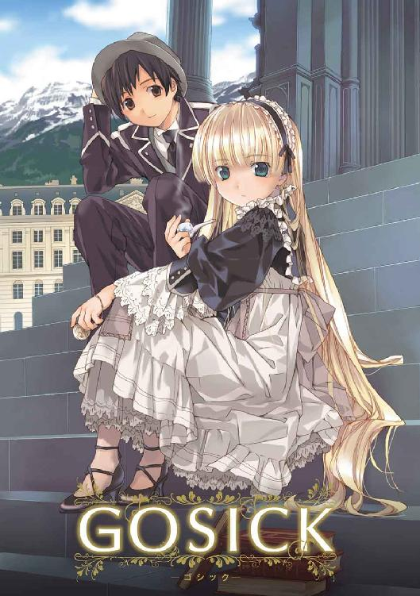
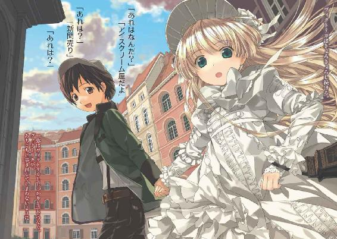
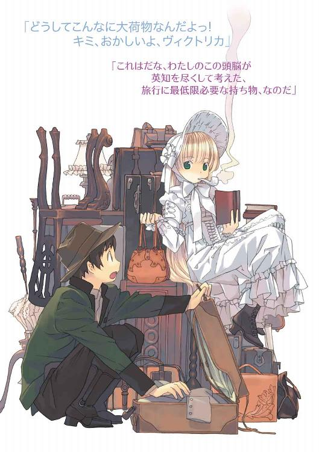
GOSICK
─ゴシック─
桜庭一樹

角川ビーンズ文庫
本作品の全部または一部を無断で複製、転載、配信、送信したり、ホームページ上に転載することを禁止します。また、本作品の内容を無断で改変、改ざん等を行うことも禁止します。
本作品購入時にご承諾いただいた規約により、有償・無償にかかわらず本作品を第三者に譲渡することはできません。
本作品を示すサムネイルなどのイメージ画像は、再ダウンロード時に予告なく変更される場合があります。
本作品は縦書きでレイアウトされています。
また、ご覧になるリーディングシステムにより、表示の差が認められることがあります。
目次
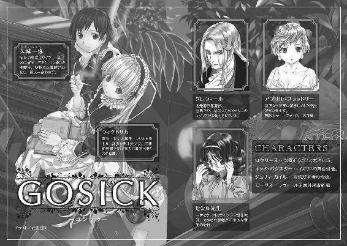
口絵・本文イラスト／武田日向
野原をよこぎって追いかけてゆくと、ウサギがいけがきの下の大きなウサギあなにとびこむのが見えました。
すかさずアリスもそのあとからあなにとびこみましたが、そのときはあなからでてこられるかどうかなど、まったく考えてもみませんでした。
──『不思議の国のアリス』ルイス・キャロル
楠悦郎訳 新樹社刊
プロローグ 野兎を走らせろ！
大きくて黒いものが──
横切った。
犬だ、と子供は思った。宵闇にまぎれる、闇のように黒い犬。猟犬だ。その四肢はつややかに黒く、二つの目が、闇の中で燃える青い炎のように揺らめいていた。
子供は黒い森を抜けて、ようやく村道を歩きだしたところだった。お使いにしては遅すぎる時間だった。はやく暖炉の燃える暖かな我が家に帰りたかった。近道しようと、村外れのその屋敷の庭に一歩入った途端、その猟犬に遭遇したのだった。
子供は思わず、数歩、後ずさった。
──ぐしゃり。
足の裏に、いやな感触がした。柔らかく、生暖かい液体をふくんだなにかを踏んだ。足元を見下ろすと、ぐじゃぐじゃになった小さな肉塊が落ちていた。赤い肉。血の滴を跳ね返す、茶色い毛皮がところどころ見えていた。長いふわふわした耳が肉塊の中から覗いていた。そして、それに埋もれたガラス玉のような丸い瞳。夜空の暗黒を映して、暗く虚しくこちらを見上げていた。
......野兎だ、と気づいた。
顔を上げた。猟犬の閉じた口蓋から、一筋の生々しい血がぼとり、と落ちた。
こいつが食い殺したんだ......！
子供の手から、力が抜けた。ぎゅっと握っていた葡萄酒の瓶が、ゆっくりと地面に落下し、破片を飛び散らせた。赤紫色の液体が、猟犬の頭にもびしゃりとかかった。
犬は、ズルリ......と、舌なめずりした。
ふいに雷鳴がとどろいた。
白い閃光に、その村外れの屋敷が浮かび上がった。いまは誰も住んでいないはずの朽ちた屋敷。そのテラスに、見たこともない姿をした何者かが座っていた。
子供は目を見開いた。
頭から赤いリンネルの布を被った人間が、車椅子に座っていた。その布がかすかにはだけ、頭があるはずの場所にぽっかり空いた暗い空洞が見えた。布の中から、生きている人間のものとは到底思えない、枯れ枝のごとく瘦せ細り、あまりに老いた手が一本だけ、にょっきりと突き出ていた。
その手は、金色に輝く手鏡を強く強く握りしめ、ブルブル震えていた。
三つの壺──銀の壺、銅の壺、ガラスの壺が置かれ、不気味に輝いている。
ふいに、老いたしわがれ声が響いた。
「一人の青年が、もうすぐ、死ぬ、だろう......！」
子供は息を呑んだ。老婆の声......。まるで、この老婆が口にした不吉なことが片端から現実になるような恐怖を覚えた。声は続けた。
「その死が、すべての始まり。
世界は石となって転がり始める」
誰もいなかったはずのテラスから、無数の男たちの声が響いた。子供は驚いて目をこらすが、雷鳴の瞬間に照らされたテラスは、いまは再び、闇に埋もれている。
「どうすれば......」
「我々はどうすれば......」
「ロクサーヌ様！」
「......箱、を」
再び、老婆の声が響いた。
「大きな箱を用意するのじゃ。この庭よりも大きな箱を。それを水面に浮かべよ。そして......」
──バリバリバリッ！
雷鳴がとどろいた。
白い閃光に、テラスと庭が照らされた。
それが浮かび上がらせた光景に、子供は腰を抜かし、声にならない悲鳴を上げた。
テラスには、赤い老婆と、それを囲む人間たちがいた。人間たちはみな、白い布を被り、手を伸ばして、まるで幽鬼のようにテラスを彷徨っていた。
そして、庭には......。
たくさんの茶色く丸い塊が走り回っていた。十匹以上の野兎が必死で逃げまどい、それを、さきほどの猟犬が追い回しては嚙み殺していた。地面にはいくつもの小さな肉塊が転がり、血溜まりを作っていた。
つぎの瞬間には、雷鳴は去り、再び闇が屋敷と庭を包んだ。
静寂。
やがて、テラスから老婆の声が響いた。
「そして......〈野兎を、走らせろ！〉」
第一章 金色の妖精
１
それから十年後──。
ヨーロッパの小国、ソヴュール王国。
山脈の麓に構えられた、名門聖マルグリット学園の、豪奢な石造りの校舎の一角で......。
「......それでね、海上救助隊が駆けつけたとき、その客船にはディナーのお皿にまだ温かい料理が残っていて、暖炉も赤々と燃えていて、テーブルにはカードゲームのカードが並べられていて......なのに、なのによ？ だーれもいなかったんだって。船客も、航海士たちも、みんな消えてしまった......。血のついた部屋とか、争った跡のある部屋もいくつかあったんだけど、とにかく人っ子一人いなくて、ね......」
「うん、うんうん」
校舎裏の花壇で、二人の生徒が熱心に話していた。
コの字形をした校舎から、中庭に出る小さなドアを開け放ち、三段ある石階段の二段目に腰掛けている。顔を寄せている二人の目前には、色とりどりの花が咲き乱れて、春の心地いい風に揺れている。
二人の生徒は、小柄で生真面目そうな東洋人の少年と、スラリとした金髪の白人少女だ。
少年のほうは、東洋の島国からの留学生、久城一弥。少女のほうは英国からの留学生、アブリル・ブラッドリー。同じクラスになって間もないが、お互い留学生どうし、気兼ねなくお喋りできる仲だ。
アブリルはお話に熱中して、きれいな顔がちょっとユーモラスな寄り目がちになっている。金色のショートヘアが風に揺れている。
「......ところが、よ」
「うんうん」
「救助隊員が船内を調べていたときのこと......。何気なく花瓶に触った途端、どこからかボウガンの矢が飛んできて、あやうく死んじゃうところだったんだって」
「......それどういうこと？ 花瓶に仕掛けがしてあったのかな。それとも誰かが隠れていて、たまたま花瓶に触ったときにボウガンを撃ったのかな？ それとも......」
一弥が生真面目な顔で仮説を列挙し始めた途端、アブリルがぷうっとふくれっ面になった。それに気づかずしゃべり続ける一弥の口を、アブリルが白い手のひらをひるがえして、ふさいだ。
「......むふっ？」
「いいから聞いてよ。ここからが肝心なんだからね。まったくもう、久城くんって真面目なんだから、つまんない」
「......すみません。続けて、アブリル」
一弥はどうも納得できないまま、相手が女の子なので、つい謝る。
「いい？ 救助隊は海上警察に連絡して、船を調べようとしたんだけどね、船底から浸水していて、詳しく捜査するひまもなく、その客船──〈QueenBerry 号〉は、あっというまに海底に沈んでしまったのよ。波飛沫を上げ、大きな不吉な音とともに、暗い暗い海の底へ......！」
「それは大変だったね」
「だけどね......」
アブリルは、一弥のじいさんみたいな合いの手にめげず、盛り上げようと声を張り上げた。
「十年前に沈んだはずのその船、〈QueenBerry 号〉は、それからも現れるのよ」
「現れないよ。だって沈んだんだろ？」
「うるさい。黙れ一弥」
「......すみません」
「嵐の、夜。霧の向こうから突如現れるその船には、いなくなったはずの人々が乗っているのよ。そして生者をうまく誘いこみ、生け贄として、船とともに沈、め、..................」
アブリルが声を低くしたので、一弥も息をひそめてじいっと待った。
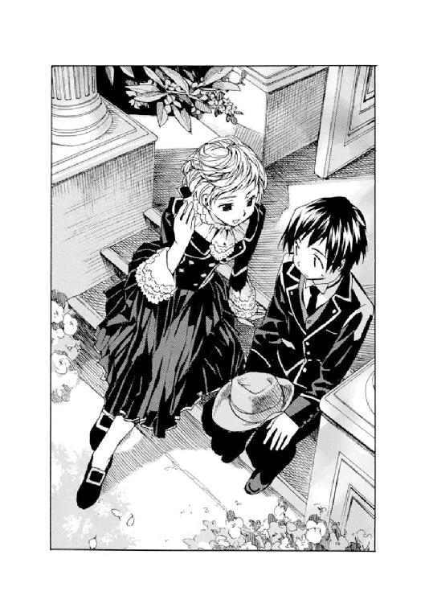
と、アブリルが急にその蒼い瞳を見開き、
「......るのだった！ きゃあ──────────ぁ!!」
「ぎゃあああ!!」
「あはははは。久城くんひっかかったー。悲鳴上げたー。男の子なのにー。軍人の息子なのにー。怪談で悲鳴上げたー。あっはははー！」
勝ち誇るアブリルに、一弥は「く、くそぅ」とうなだれた。
思わず上げてしまったおおげさな悲鳴にくよくよ悩んでいると、アブリルは立ち上がって、お尻についた埃をぽんぽんはたいた。制服のプリーツスカートが揺れて、長くて真っ白な足がちらちら見えた。
天気は快晴で、校舎裏の石階段にも眩しく陽光が降り注いでいた。一弥は眩しそうに目を細めた。
アブリルが楽しそうに、言った。
「さっ。そろそろ教室にもーどろっと。いやぁ、久城くんって意外とこわがりなんだねぇ。成績もいいし、いつも真面目な顔してるし、いかにも軍人一家の男の子って感じー、と思ってたけど。いやはや、意外や意外～」
あまりにも無邪気に勝ち誇っているアブリルに見下ろされ、一弥はますますうなだれた。
「わたしの勝ちね。いやっほぅ！」
と、スキップしながら校舎に入っていく後ろ姿を見送りながら、固く心に誓う。
（うぅ。絶対にもっとこわい怪談を仕入れて、アブリルに披露してやる。でもってきゃああああ、と悲鳴を上げさせねばならん。この借りは返すぞ。帝国軍人の三男の名にかけて！）
悔しがりながらも、一弥はアブリルに続いて校舎に入っていった。
──教室に入ると、いつものことながら、そこにいるのは十五歳の、白人の、貴族の子弟たちばかりだった。
上質なオーク材で贅沢に造られた机が並び、その机に一人ずつ、やけに上等なカフスやネクタイピンを輝かせた少年や、手入れの行き届いた髪や爪をした少女が、座っている。白い肌に、スラリと伸びた手足。どの顔もつんと取り澄ましている。
ここにいると、いかにも生真面目な東洋人少年、久城一弥はかなり浮いていた。現に、一弥が教室に入ってきた途端、クラスメートたちはちらちらと一弥を遠巻きにしながらささやいている。
「死神だ......」
「戻ってきたぞ......」
優雅なフランス語でそうつぶやくのが聞こえ、一弥はますますふてくされた。
時は一九二四年──。
ヨーロッパの小国、ソヴュール王国。
スイスとの国境は、なだらかな山脈と心地よい高原。フランスとの国境は、のどかに広がる葡萄畑。イタリアとの国境は、地中海に面した騒がしい港町。細長い形状をした国土の一端は、自然豊かなアルプス山脈の奥、もう一端は貴族の避暑地として知られるリヨン湾に面している。周囲を列強に囲まれながらも、世界大戦を生き抜いたソヴュール王国は、過ごしやすい気候と豊かな自然、そして長く荘厳な歴史を誇っていた。
その王国の、リヨン湾を豪奢な玄関とするなら、アルプス山脈は、もっとも奥深い場所にある秘密の屋根裏部屋と言えた。その山脈の麓に、王国そのものほどではないが長い歴史を誇る、聖マルグリット学園が建っていた。貴族の子弟のための教育機関として、王国に名をとどろかす名門学園。緑に囲まれた過ごしやすい環境と、空中から見るとコの字形をした荘厳な石造りの校舎は、貴族の子弟である生徒と、教育者のみが出入りでき、一般には門戸を閉ざす秘密主義の学校でもあった。
しかし、その聖マルグリット学園は、先の大戦──各国を巻きこみ初の世界大戦となった──終結後、同盟国から優秀な生徒を留学生として受け入れることを始めた。
極東の島国からやってきた十五歳の久城一弥は、成績優秀で、軍人一家の末っ子。兄二人は歳が離れており、すでに一人は学者、一人は政治家の卵として活躍していた。そこを考慮され、留学生として選ばれた。そして半年前に一人、ソヴュールにやってきたのである。
しかし、期待に胸躍らせてやってきた一弥を待っていたのは、貴族の子弟たちの偏見や、学園中に蔓延る謎の怪談。
一弥の強面な雰囲気は、生真面目で善良な性格からくるものなのだが、なぜか怪談につなげられてしまい、いろいろと苦労の多い半年だったわけである。......それはまた別の機会に。
授業の開始を告げる鉄鐘が鳴り響いた。一弥はほかの生徒たちと同じく席に着くと、ふと、窓際の空席に目をやった。
ここ半年のあいだ、一度も、その席の主が教室にいるところを見たことがなかった。いつも必ず空いている。なのにクラスの誰もが申し合わせたように、その席に座ったり、近づいたり、物を置いたりはしないのだった。まるでなにかを恐れるかのように。
いまでは一弥も、なにを恐れているのかわかっているけれど。
──教室に担任の先生が入ってきた。童顔で小柄な女性。大きな丸眼鏡に、ふわふわのブルネット。いつも本や参考書を両手で胸の前に抱えて、まるで小犬のように小首をかしげている。
その担任──セシル先生は、教壇の前に立つと、一つため息をついた。
（......あれっ？）
一弥は、セシル先生が元気がないことに気づく。
と、そのとき後ろのほうの席から丸めた紙が投げられてきて、頭にポコンと当たった。拾って広げてみると、英語でサラサラと、
〈今夜、一人でトイレ行ける？ こわがりの久城くんへ アブリルちゃんより〉
振り返ると、アブリルがにこにこ手を振っていた。ご機嫌だ。......一種の愛情表現だろうか？
──授業が終わると、セシル先生は教室を出ようとして、ふと足を止めた。
「久城くん、ちょっとちょっと」
呼ばれた一弥は、立ち上がって、先生の後を追うように廊下に出た。担任にわざわざ呼ばれるということは、まさか成績が落ちたんだろうか、と心配していると、
「これを頼もうと思って。はい」
手渡されたのは、さっきまでの授業で使われたプリントだった。セシル先生は廊下から、教室の窓際にあるいつもの空席を指差して、
「いつも頼んで悪いけど、これ、ヴィクトリカさんに渡しておいてね」
「そっか......わかりました」
一弥がうなずいたとき、スラリとした影が一弥に並んだ。顔を上げると、アブリルのかわいらしい顔があった。ショートにした金髪が、窓からの日光を受けてキラキラ輝いていた。
プリントを覗きこんで、
「へぇ～。先生、このヴィクトリカくんって、あの、いつも休んでる子のこと？」
「ええ。でも、学校にはきてるのよ。ね、久城くん？」
一弥はあいまいにうなずいた。
アブリルは不思議そうに首をかしげて、
「どういうこと？ じゃ、どこにいるの？」
「......植物園」
「えぇ？ この学園にそんなの、あったっけ。植物園......？」
「あるんだよ、これが」
一弥はなぜか顔を曇らせた。不思議そうにしているアブリルに、
「すごく高いところにね......」
「なにそれ？ ね、このヴィクトリカくんって、久城くんと仲いいの？」
アブリルの問いに、セシル先生はうれしそうにうなずき、一弥は微妙に首をかしげた。アブリルはますますキョトンとして、
「どっち？」
「いや、ぼくにもよくわからないっていうか......」
「はっきりしなさいよぅ。ね、どんな男の子なの？」
「おそろしいっていうか......けんもほろろっていうか......ひどいっていうか............」
アブリルは首をかしげていたが、「ま、いっか」とつぶやくと、スキップして教室に戻っていってしまった。
「......あの、セシル先生」
立ち去ろうとする先生を、一弥は呼び止めた。
「ん？ なぁに？」
「なんだか元気ないんじゃないですか？ いや、ちょっと気になって......」
一弥がそう言うと、セシル先生は大きな瞳をますますまんまるに見開いて、
「......よくわかったわねぇ。実はね......ううん、学園のことじゃないの。わたしが住んでいる村で、おかしな事件が起きてね。朝から、警察の人が聞きこみにやってきたり、いろいろと......」
「事件？」
セシル先生は声を落とした。
近所で起こった事件のせいか、不安そうに瞳を曇らせて、
「それがね......とても奇怪な事件なの。警察の人から聞いた話と、後は、近所の噂話でしか知らないんだけどね」
「どんな事件なんですか？」
「村外れに住んでいたおばあさんが、何者かに殺されたの。それも、とても奇妙なやり方で......」
「おばあさん......？」
「なんでも、いまは引退したけれど、昔は有名な占い師だったんですって。たしかロクサーヌっていう人。政治家や企業の重役が大挙して押し寄せていたって。未来を視るのが得意だったそうよ」
「先生、占いなんてものはですね......」
迷信ですよ、と話し出そうとして、疲れた様子のセシル先生に気づき、黙る。先生は、
「まだ犯人が捕まっていないらしいのよ。だから、こわくて。とにかく奇妙な殺され方なのよ。どういうことなのかしら......」
セシル先生は、一弥に、警察の人から聞いた話と、近所で流れていた噂話を少し話してくれた。話を総合すると、どうやら、その占い師は鍵のかかった密室で射殺されたのだが、凶器もみつからず、犯人も誰だかわからない......ということらしかった。
「こわいけれど、まぁ、もう少しの辛抱ね。最近、名警部として名前が売れてきた、あのグレヴィール・ド・ブロワ警部が大騒ぎして捜査していたから。部下の人、二人を連れて村中を調べているの」
「それは面妖な......」
思わずつぶやいた一弥に、セシル先生は不思議そうな顔をした。
それから、
「殺されたおばあさんも、よくわからない人なのよ。そのお屋敷では、野兎がたくさんいて、犬に嚙み殺されたりしていたらしいの。かわいそうに......。こわかったでしょうね......」
暗い顔でつぶやいた。どうやらセシル先生は、その事件に流れる暗く不気味な雰囲気そのものに怯えているようだった。先生は、一弥の心配そうな顔に気づくと、一転して笑顔に戻り、渡したプリントを指差した。
「じゃ、久城くん。これお願いね。ちょっと......高いけど............その、頑張って上ってね」
「はいはい......いつものことですから」
一弥は苦笑しながら、うなずいた。
２
──聖マルグリット大図書館。
学園の敷地の隅にのっそりと建つその建築物は、三百年以上の時を刻んだ、欧州でも指折りの書物庫の一つである。石造りの外観は荘厳そのもので、観光名所になってもおかしくはないのだが、聖マルグリット学園は関係者以外の人間を締め出し続けているため、世の人の目に触れることはまず、ない。
一弥はさくさくと乾いた土が音を立てる道を歩き、大図書館にやってくると、中に入った。
角筒形の大図書館は、壁一面が巨大な書棚になっていた。中央は吹き抜けのホールで、遥か上の天井には荘厳な宗教画が輝いている。そして書棚と書棚のあいだを、まるで巨大迷路のように、細い木の階段がいかにも危なっかしく繫いでいた。
一弥は上を見上げ、思わずため息をついた。
天井辺りから、金色の長い帯のようなものが垂れ下がっているのが見える。
「ヴィクトリカ......。また、いちばん上かぁ」
仕方なく、迷路のような階段を上り始める。
しらず声を出してしまう。
「たまには、もうちょっと下のほうにいてくれてもいいよなぁ。あいつ、毎日この階段を上がってるんだろうか。ご苦労なことだよっ......」
階段を上がるにつれ、床が遠くなっていく。
下を見ると目が回るので、一弥はまっすぐ前をみつめ、帝国軍人の三男らしく背筋をぴしっと伸ばしてカッカッと上り続けた。
途中で息が切れてくるが、がんばる。
「しかし......なんでこんなことになってるんだよ？ この図書館......」
──一説によると、この大図書館は十七世紀初頭、聖マルグリット学園の創始者である国王によって建設された、らしい。恐妻家でもあった国王は、愛人との逢い引きにひたるため、大図書館のいちばん上に秘密部屋を造った。そして階段を迷路状に配置したのだ、と......。
今世紀に入って、一部修復工事の折に油圧式エレベーターが導入されたのだが、教職員専用とされているので一弥には縁がない。
だから、上る。
迷路階段を、上る、上る。
......まだまだ上る。
ようやくいちばん上の階に着いた一弥は、投げやりに、
「ヴィクトリカー。いるー？」
返事はない。一弥はめげずに、
「いるよね。だって長い髪が見えたもん。おーい」
吹き抜けの空間に垂れ下がっている、帯のような金色の髪に向かって声をかけた。
白い細い煙が、天井に上がっていく。
一弥は一歩踏み出した。
そこには......。
植物園があった。
大図書館のいちばん上の秘密の部屋は、国王と愛人のためのベッドルームではなく、緑生い茂る温室に建設し直されていた。南国の樹木やシダが生い茂り、天窓から射しこむ柔らかな日光に明るく輝いている。
明るくて、そして人気のない植物園。
その温室から階段の踊り場に、半身を投げ出したように、大きな陶人形が置かれていた。
等身大に近い、百四十センチぐらいの背丈。絹とレースをふんだんにあしらった贅沢な衣装に身を包み、長い見事な金髪を、ほどけたターバンみたいに床に垂らしている。
横顔はひんやりとした陶器の冷たさ。
大人とも子供ともつかない、醒めた瞳は、透けるように薄いエメラルドグリーンに輝いている。
その陶人形は口にパイプをくわえ、ぷかり、ぷかり、と吸っていた。白い細い煙が天窓に向かって上っていく。
一弥はスタスタとその陶人形......いや、人形そのものに思える美貌の少女に近づき、
「......返事ぐらいしろよな、ヴィクトリカ」
少女の緑色の瞳は、床に並べられた書物の上を忙しく行き来していた。彼女の頭部を中心点として放射線状に並べられた書物は、古代史から、最新の科学、機械学、呪詛に錬金術......。英語からフランス語、ラテン語に中国語と、書かれた言語もさまざまだ。
それらを無造作に流し読みしていた少女──ヴィクトリカが、ふっと我に返り、顔を上げた。
一弥の不満そうな顔を見上げると、一言、
「なんだ、君か」
まるで老人のような、しわがれて低い声。小さな体と妖精のような美貌とは、あまりにかけ離れた声。
その取り澄ました、貴族特有の鼻持ちならない態度に、一弥はムッとした。......まぁ、毎度のことだ。ここにくるたび、ヴィクトリカにはイライラさせられる。
黙っていると、ヴィクトリカはまた書物に視線を戻した。
つぎつぎページをめくり、流し読みを続けながら、
「死神が、わたしになんの用だ？」
「それを言うなってば」
一弥はうなだれて、階段の手すりにもたれた。
〝死神〟とは、あまりありがたくない一弥の別名である。元来、この学園の生徒たちは怪談に目がない。また、歴史の深いこの学園は、怪談ネタに事欠かなかった。曰く〈春やってくる旅人が学園に死をもたらす〉、曰く〈階段の十三段目には悪魔が棲んでいる〉、曰く......。
黒髪に漆黒の瞳、東洋からやってきた無口な旅人、久城一弥は、まんまと〈春くる死神〉として認識されてしまった。怪談好きな生徒たちは一弥にあまり近づかない。どこまで信じているのかは疑問だが、この学園中が一つの遊びを盛り上げる協力をしあっているかのように、生徒たちは怪談に対してノリがよかった。
というわけで、一弥はなかなか親しい友人もできず、セシル先生の計らいによって、気づいたらこの学園一の変人、ヴィクトリカの連絡係というか、付き人のような立場になっていたのである。
好きでこの鼻持ちならない美少女の相手をしているわけではない......はずなのだが、気づくと、彼女に会うためにあの迷路階段を上るはめになっている。そのことをくよくよする一弥には構わず、ヴィクトリカは続けて、しゃがれ声で、
「久城、君、いくら友達ができないからって、またわたしのところにくるとはね。懲りないやつだ。それとも、君は階段が好きなのかね？」
「......そんなわけないだろ。はい、これ」
一弥が先生から預かったプリントをぐいっと出すと、ヴィクトリカは鼻先で「そこにおけ」というように床を差してみせた。
それから歌うように、
「天気がいいからって、花壇で逢い引きか？」
「いや、逢い引きじゃなくて、ただ喋ってただけだよ。あのね、無人の豪華客船〈QueenBerry 号〉って怪談を聞かされ、て............って、ちょっと待って、ヴィクトリカ」
さっさと温室を去ろうとしていた一弥が、小走りに戻ってきた。書物に顔を埋めるヴィクトリカを覗きこんで、
「どうして知ってるんだよ？ もしかして、見てたの？」
「いや」
「じゃ、なんでだよ？」
「例によって、例のものだよ、君」
ヴィクトリカは書物を読みながら、物憂げに、
「湧き出る〝知恵の泉〟が教えてくれたのだ」
じりじりとつぎの言葉を待つ一弥に気づかず、パイプをくゆらしながら、ヴィクトリカは歌うようにのんびりと続けた。
「久城、君は几帳面でくそ真面目な秀才だ」
「......悪かったね」
「そんな人間はだね、屋外に出るときは律儀に制帽を被るものだ。君の髪に、きっちり制帽を被っていた跡が残っている。そして襟についたピンクの花びら。花壇に咲いているパンジーのものだ。よって君は花壇にいたと推測されるのだよ」
「でも、逢い引きって......一人でいたかもしれないじゃないか............」
「久城、今朝の君は浮かれている。うきうきとした足音で階段を上ってきた」
「えっ......？」
そうだっけ？ と一弥は首をかしげた。
いつも通りに上ってきたつもりだったけど......規則正しく、背筋を伸ばして......。
ヴィクトリカは吐き捨てるように冷たく、
「わたしの台詞への反論も、いつになく元気いっぱいではないか。君、ゆめゆめ、人間の雄がそのような浮かれた動作をする原因は、決まっているのだよ。欲情だ。久城、君は柄にもなく欲情し浮かれ非常に機嫌のよい状態というわけだ。一人で花壇にいて欲情もなにもない。ゆえに君は女性とともにいた。それは憎からず思っている女性にちがいない。そう〝知恵の泉〟がわたしに告げるのだよ」
「いや、ヴィクトリカ......もっと言葉を選んでよ。欲情って......。それに、柄にもないとか、もう............」
一弥は真っ赤になり、膝を抱えて座りこんだ。
こうやって、見てもいないのにヴィクトリカが、その日の一弥の行動をピタリと当てるのはいつものことなのだが、今朝のはとくに恥ずかしい。
膝を抱え、恨めしそうにヴィクトリカの横顔をみつめる。
「よく当てるよね......。感心しちゃうよ............」
ヴィクトリカはしばらく返事もせず、書物を読み進めていたが、ようやく一弥の言葉が脳に到達したらしく、「ああ」とうなずいた。
「それはだね、君。五感を研ぎ澄まし、この世の混沌から受け取った欠片たちを、わたしの中にある〝知恵の泉〟が、退屈しのぎに玩ぶのだよ。つまり、再構成するのだ。気が向けば、君のような凡人にも理解できるよう、さらに言語化してやることもある。まぁ、たいがいは面倒なので黙っているがね」
「......なんでぼくには黙っていないんだよ」
「それはおそらく、久城、君を見ているとからかいたくなるからだと推測されるよ」
それきりヴィクトリカは黙り、書物にますます頭をめりこませた。
一弥は肩をすくめ、ヴィクトリカの横顔をみつめた。
──一国の代表になるほど秀才の久城一弥をして〝君のような凡人〟などと称することを、普段の一弥ならけして許さないはずだった。だがこの、一度も授業に出てこない不思議な貴族の娘、ヴィクトリカに言われると、なぜか二の句がつげなくなるのだ。
ヴィクトリカがどういった生い立ちの、どういった娘なのか、じつは一弥はあまり知らなかった。
すごく美形で、すごく小さく、すごく頭が良く、そしてまったくとりつく島もないこの少女。なぜか男性名を名付けられた、少し狂気じみた、しかしもしかすると天才かもしれない少女。
幾人かの事情通によると、貴族の妾腹の子であるとか、一族の中ではなぜか恐れられており、屋敷においておきたくなくてこの学園に入れられたのだとか、母は有名な踊り子で、発狂したとか、伝説の灰色狼の生まれ変わりだとか、生肉を貪り食っているのを見たとか......。さすがに怪談学園だけあって、だんだん怪しい話になってくる。
一弥はヴィクトリカに、そういったことを質問したことがない。帝国軍人の息子として、下司な好奇心をもって人を見ることは許せなかったし、それ以上に、ヴィクトリカ本人が奇天烈すぎて、まずなにを質問したらいいのかもよくわからなかった。
わからないまま、この植物園まで苦労して上がってきては、ヴィクトリカの毒舌に腹を立てる。それがいまの一弥の、なんだかなぁ......の、日課だった。
「ところで、ヴィクトリカ。毎日大量に書物を読んでるけどさ」
一弥はめげずに話しかけてみた。
ヴィクトリカは返事もせず、ただかすかにうなずいてみせるだけだ。
「もしかしてこの大図書館の本、全部読んじゃうつもりなの？」
冗談で言ったのだが、ヴィクトリカは顔を上げると、無造作に階段の手すりから下を指差して、
「こっちの一面は、そろそろ読破するころだろう。......おや？ 久城、君、目玉が飛び出しそうなおかしな顔になっているが。どうしたのだね？」
「いや......びっくりしただけ。いまはなにを読んでるんだよ？」
「いろいろだよ、君」
ヴィクトリカはあくびをすると、猫のように体を弓なりにして伸びをした。
「あぁ、退屈だ。再構成すべき混沌が足りないのだ。読んでも読んでも、足りないのだよ、君」
「......これ一冊読むだけで、頭がパンクしそうになると思うけどね。普通」
一弥は手前に広げられていたラテン語の書物を指差して、そう言った。と、あくびを連発していたヴィクトリカが、ふと顔を輝かせ、
「そうだ、久城。君に説明してやろう」
「なにをだよ？」
「この書物についてだ。これはだね......。古代の占いについての本だよ、君」
「占い？ 興味ないな」
「関係ない」
「って......なんでぼくに話すんだよ？」
「退屈だから」
ヴィクトリカは、当たり前だ、というようにうなずいた。
面倒くさがって逃げようとする一弥を押さえつけ、無理やり聞かせ始める。
「この書物によるとだね、君。占いとは古代から人間の欲望と隣り合わせにあったものなのだよ。例えば古代ローマ帝国。人々は動物の腸や肩胛骨を焼いて生じた亀裂によって吉兆を占った。これはなんと十一世紀まで続いたが、キリスト教の宗教会議によって禁止されてしまった。また、書物を開いて、そのページに書かれていたことから占う、書物占いも古代から続いていた。古代人はホメロス書で占ったが、キリスト教徒たちは聖書を使い始めた。これもまた宗教会議によって禁止されたのだが......。おい、久城、寝るな。わたしが退屈で死ぬぞ」
「......はい、すみません」
「つまり占いとは異端であるのだな。だが政府によって、教会によって禁止されても、人々は続けるのだ。中には何世紀にも亘り、教会内でこっそり聖職者が続けていた例もある。なぜだかわかるかね、君？」
「さぁ......」
ヴィクトリカはパイプを口から離し、ぷかりと煙を吐くと、物憂げに言った。
「当たるからだよ、君」
「......まさか」
「古代ローマ帝国の皇帝ヴァレンスは、自らの地位に不安を感じていた。そこで占い師を呼び寄せ、自らを脅かす者の名を占わせた。それは、平らな土地にアルファベットを描き餌を置き、鶏を放すという占いだった。結果、鶏は〈T〉〈H〉〈E〉〈O〉〈D〉の場所にある餌を食べた。皇帝はそれをテオドーレウスという名と解釈し、帝国内のその名を持つ者すべてを処刑した。しかし、皇帝のつぎに帝国を支配したものの名はテオドシウスであったのだよ。つまり人違いだったというわけだ」
「......物騒な話だねぇ」
「まじめに聞きたまえ。わたしが退屈で寝てしまうぞ」
「すみません」
「さまざまな書物からの検証によると、もっとも信憑性の高いものは〈魔法の鏡〉と呼ばれる代物だがね。レオナルド・ダ・ヴィンチの絵画〈魔法の鏡を用いる魔女〉にも描かれたこの鏡は、水晶占いの前身なのだ。葡萄酒を満たした銀の壺、油を注いだ銅の壺、水を入れたガラスの壺を用意し、三日三晩かけて占うのだ。銅の壺からは過去、ガラスの壺からは現在、そして銀の壺からは未来が立ち上り、魔法の鏡に写し取られるのだ」
ずいっとヴィクトリカが差しだした書物の一ページには、頭から赤い布を被った女が、三つの壺を前にして、金色の手鏡を掲げる説明図が載せられていた。白ずくめの服装をした男たちが地面に額をこすりつけるようにひれ伏している。
ヴィクトリカは書物をめくっては、とうとうと語り続けている。
一弥は、怒られるのがこわいのでおとなしく聞いていた。
思えば自分の生まれ育った国では、婦女はおとなしく三歩遅れてついてくるものなので、自分はこういう、三歩先を歩きつつ振り返って「はやくっ！」と怒るようなタイプの女の子と、うまく渡り合う訓練ができていない気がする。
なにごとも修業だ、と一弥は思った。修業は辛いものなのだ。眠い。
「さて、預言者モーゼによる棒占いについての記述が、『民数記』に記されているのも興味深い。イスラエルの民の長になるべき人物がどの種族から生まれるかを知るため、それぞれの種族名を記した十二本の棒を用意し、占ったのだ」
「......ふ～ん。それにしても、意外だな」
「なにがだね？」
「ヴィクトリカが、占いを信じてるなんてさ」
「信じているわけないだろう」
「へっ？」
ヴィクトリカは、放射線状に広げた書物の山から、なにやら別の書物を一冊、引っぱり出した。その書物を開いて一弥に示してみせるが、難解そうなドイツ語で書かれたその書物から、一弥は思わず身をひねって逃げようとした。ヴィクトリカの小さな手が伸びてきて、一弥を押さえこんだ。一弥はあきらめて、
「......そっちの本は、なに？」
「心理学だよ、君。頭の固い、中途半端な秀才である君に、わたしが説明してやろうではないか。〝人はなぜ占いを信じるのか？〟」
「はぁ......」
「占いは、当たる。それは客観的事実ではもちろんない。主観的事実として、当たるのだよ。つまり〝当たったように思う〟のだ。それが紀元前から綿々と、占いという迷信が持ち続けた本質的な力だ。それはだね、君、占いが〝当たってほしい〟という集団心理によって支えられているからなのだ。......つまり、この学園に蔓延る怪談ブームと、同じだ。全員が無意識の集合体、同時発生的な共犯者たちなのだよ」
「うん......」
「それ故に、起こりうる三つの原因を挙げてみよう。一つ目は、当たった占いだけが歴史上に残る。当たった一例の陰には、いくつもの外れた占いが眠っているわけだ。二つ目は、相手の顔色を窺い、望みを言い当てるという占い師の技術。そして三つ目が、どちらとも取れる答えを出された場合だ」
「ん......」
「例えば久城、君がだね、この国に留学する前に、留学後の生活を占ったとしよう。それが吉と出れば、留学後、成績がよかったときに『当たった！』と思う。凶と出れば、辛いことがあったときに『当たった！』と思う」
「うーん......」
「......さきほどの皇帝ヴァレンスもまた、然り。鶏が選んだ五つのアルファベットには、無数の組み合わせがあったはずなのだ。だが皇帝は、内心、テオドーレウスという名の青年を疑っていた。だから、占いの結果をその名に結びつけたのだ。つまり占いとは、内心、行動を起こそうとすでに決めていることの〝背中を押してほしい〟という心理に支えられた迷信なのだ。つまり、責任回避装置としての..................ああっ！」
「な、ななな、なに!?」
朗々としゃべっていたヴィクトリカが、とつぜん、小さな金色の頭を抱えて呻いたので、一弥は飛び上がった。とうとう発狂したのかと心配していると、ヴィクトリカは恨めしそうに一弥を睨み、
「君のような凡人に説明していたら、よけい退屈になってしまった」
「......し、失礼な」
「くぅぅ、胸が苦しい。退屈で苦しいよぅ。......さて、どう責任をとるのだ、君？」
「あのねぇ！」
怒りかけた一弥は、ふっと、あることを思い出した。
「そうだ。ねぇ、ヴィクトリカ。占いといえばさ......」
セシル先生が漏らしていた事件を思い出す。
確か、近くの村で、おばあさんが奇妙なやり方で殺された、とか......。密室で射殺されていて、凶器もみつからなかったと話していた気がする。被害者はロクサーヌとかいう人で、職業は確か......。
「昨日、近くの村で、占い師が殺されたよ」
と話しかけた途端、ヴィクトリカの細い肩が、ぴくん、と震えた。
顔を上げて、その朝初めて、一弥の姿を真正面からじっとみつめた。
糸のように細く輝く金色の髪。淡いウェーブを描いて床にこぼれ落ちている。
血管が透けて見えそうなほど白いその肌。
そして、エメラルドグリーンの双眼は、まるで長く生きすぎた老人のようにもの悲しく、どこをみつめているのかわからない遠い眼差しをこちらに投げかけている。
一弥はヴィクトリカのその瞳に、思わず後ずさった。
と、ヴィクトリカは静かに口を開き、
「......混沌か」
一言つぶやくと、一弥の顔に、ぷうっと煙を吹きかけた。
「ゲホ、ゴホ、ゴホ......。いや、詳しく話せって言われてもね......」
一弥はヴィクトリカのとなりに腰を下ろすと、煙に咳きこみ、瞳に浮かぶ涙を拭きながら、話し始めた。
「さっきセシル先生と立ち話したとき、ちょっと聞いただけなんだよ。セシル先生も、警察の人の話と、近所の噂話から聞いただけらしいし......。ま、とにかく、そのおばあさんは、世界大戦が始まる頃、小さくて住み心地のいいお屋敷を買い取って住み始めたらしいんだけど......」
占い師、ロクサーヌ。
八十歳とも九十歳とも噂される皺だらけの老婆は、その屋敷にインド人の下男とアラブ人のメイドと三人で住んでいた。そこに孫娘が訪ねてきた昨晩、事件は起こった、らしい。
「......待ちたまえ、君。なぜ下男がインド人でメイドがアラブ人なのだ？」
「異国情緒のある使用人が好きだったんだって。それに、博識なおばあさんで、ヒンズー語とかアラビア語とかも、日常会話ぐらいならできるから苦労しないって。あ、メイドはアラビア語しかわからないけど、下男は英語とフランス語がペラペラらしいよ」
老婆ロクサーヌはその夜、自室で射殺された。弾丸は左眼を貫き、即死だった。
犯人は不明。その夜屋敷にいた下男、メイド、孫娘のうちの誰かだと思われるが、捜査のめどは立っていない。
「なぜだね？」
「ええと、確か......ドアも窓も内側から鍵がかかってて、しかも凶器のピストルがみつからないんだって。三人ともやってないって言ってるらしいよ」
「ふぅむ......」
ヴィクトリカが先をうながすように一弥を見上げた。一弥はその視線に困ってもじもじした。
さっきセシル先生との立ち話で仕入れた情報は、これだけだ。それに、セシル先生だってそれ以上のことは知らないようだった。もっと教えろと言われても困ってしまう。
そう思ったとき、大図書館の入り口辺りから、誰かが入ってくる足音がした。手すり越しにそれを見下ろした一弥の目に、さっきセシル先生が名警部と称した、グレヴィール・ド・ブロワ警部がさっそうと入ってくるのが見えた。
（また、きた......）
あきれながらも、一弥はヴィクトリカの肩をちょんちょんつつき、
「続きは、おかしなヘアスタイルの人に聞いてよ」
「......むっ？」
ヴィクトリカの顔が、かすかに険しくなった。
ブロワ警部が教職員用の油圧式エレベーターに乗りこんだらしい音がきこえた。
ガタン、ガタタン──！
無骨な音を立てて鉄檻が上がってくる。
続いて警部の部下である、兎革のハンチングを被った若い男二人組が見えた。仲良く手を繫いでスキップしたまま、大図書館に入ってくる。彼らは下で待機しているつもりらしく、こっちを見上げて、空いているほうの手でほがらかに手を振っている。
犯罪好きの貴族の青年、グレヴィール・ド・ブロワを無理やり警部に起用した地元警察署で、趣味でもって捜査に関わる彼にいつも振り回され、苦労している二人だ。
一弥が部下二人から目を離したとき、ガタン──！ と大きな音とともに、エレベーターが到着した。植物園の手前にある小さなホールに、ブロワ警部が姿を現した。
生い茂る緑と、天窓からの柔らかな光の向こうに、おかしな様子の男が立っている。
三つ揃いのスーツに、派手なアスコットタイ。手首には上質な銀のカフスが輝いていた。いかにも貴族的な若い伊達男、なのだが、しかしなにかが間違っていた。
ヘアスタイルだ。濃い金髪をなぜか、先端をぐりゅんと尖らせた流線形にまとめ、がっちり固めている。使い方によっては十分、凶器になりそうな頭だ。
腕を組み、扉の桟に体重をかけて斜めに立つというナイスポーズに決め、口を開いた。
「よぅ、久城くん！」
「......どうも」
ブロワ警部は上機嫌な様子で近づいてくると、一弥だけに親しそうに話しかけた。ヴィクトリカのほうはまったく見ようともしない。ヴィクトリカもそっぽを向いてパイプをくゆらしている。
「君、君はだね、このわたしの優秀なる頭脳でもって命を救われたことがあったね。いやぁ、あれは大変な事件だった。思い出すなぁ......」
「解決したのはヴィクトリカだったような......」
「君に事件の話を聞いてもらおうと思ってね。君に聞かせるとなぜか頭が冴え始めるのでね。この名警部の頭脳が、ね」
──一弥は以前、通学途中に遭遇した殺人事件の容疑者にされ、このブロワ警部に逮捕されそうになったことがあった。国に強制送還か、殺人罪で裁かれるのか、と悩む一弥を救ったのは、この植物園で出会った不思議な美少女、ヴィクトリカだった。
もちろんヴィクトリカが、一弥を心配して助けてくれたわけではない。彼女の言う〝知恵の泉〟が、その事件を再構成すべき混沌の欠片と判断し、真相を言い当てただけだ。現に、推理を終えた後もヴィクトリカは、それをもとに一弥の無実を訴えてくれたりはしなかった。一弥は自力で、ヴィクトリカの推理を警部に説明し、無実を勝ち取ったのだ。
......あのときのことを思い出すと、いまだにだらだら冷汗が出る。
しかしそれ以来、味を占めたブロワ警部は、難事件に遭遇するたびにこの植物園に足を運んでは、一弥に事件の詳細を話して聞かせる。それを横で聞いていたヴィクトリカが〝混沌の欠片を再構成する〟と、警部は地上に降りて、事件を解決するというわけだ。
つまり彼は名警部でもなんでもない。いわば、人間アンチョコに頼っているだけなのである......。
「警部、ヴィクトリカに話してくださいよ。ぼくが聞いてもわかんないんだから」
「なんだって？ ここには君とわたししかいないが？」
「............」
一弥はあきれて二人の顔を見比べた。
どうやらヴィクトリカとブロワ警部は、最初の事件の前から知り合いらしかった。だが、二人ともけっして目を合わせようとしないし、警部はヴィクトリカの力を借りることに憤りを感じているらしかった。では頼らなければいいのではと思うが、そこはそこ、らしい。
ヴィクトリカがついっと顔を上げると、一弥に言った。
「いいじゃないか、久城。わたしはここで読書をしている。君たちは話を続けたまえ。ときどきわたしが独り言を言っても、気にしなければいい。それがたまたまヒントになったとしても、わたしには関係ないことだ」
「いや、でも、そういうのはさ......」
「よぅし、話すぞ。さて、おい、こっちを向きたまえ」
ブロワ警部は張り切って腕まくりをした。
一弥は観念して聞くことにした。
ブロワ警部は懐からパイプを取り出すと、一分の隙もないキザな動きで口にくわえた。警部の口からも、パイプからも白い煙が立ち上って、彼の流線形をした前髪の中に消えていくのを、一弥はぼんやりとみつめていた。
ヴィクトリカは相変わらずそっぽをむき、こちらもパイプをくわえて煙をくゆらせている。
警部は口から煙を吐き終わると、話し出した。
「このロクサーヌという占い師が殺されたのは、昨晩。屋敷にいた人々は夕食を終え、各自のんびりしていた。占い師は自分の部屋でくつろいでいた。部屋は一階だ。下男はその窓の下で、本人曰く、庭に放した野兎を飼育小屋に戻していた」
「......野兎？」
ヴィクトリカが聞き返すと、ブロワ警部はビクリとした。
一弥に向かってうなずいてみせ、
「この占い師はたくさんの野兎と、一匹の猟犬を飼っていた。ときどき野兎を放して、猟犬に嚙み殺させたりしていたらしい。なぜかわからないが、殺される野兎と、大切に育てて天寿を全うさせる野兎に分かれていたらしいが、その法則はまったくわからない。変わり者のばーさんだったらしいからな」
「なるほど」
これもヴィクトリカの声だが、二人とも会話しているというのにお互い顔も見ない。一弥は真ん中にはさまれてくさっている。......毎度のことなのだが。
「メイドはとなりの部屋で掃除をしていた。孫娘はちょうど上の部屋で、レコードを大音量でかけて踊っていた。そのとき銃声が響いて、みんな驚いて屋敷の廊下に集まった。占い師を心配してメイドがドアを叩き、大声で呼んだが、返事がなかった。ドアには鍵がかかっていた。下男はあわてふためき、斧を持ってきてドアを壊そうと提案した。ドアは車椅子のばーさんでも簡単に開閉できるようにと、軽くて薄い素材で作られていたから、斧を一振りすれば簡単に壊せるはずだと思ったのだ。だがここで、孫娘が金切り声を上げ、強硬に反対した。ばーさんが死んだら自分の屋敷になるんだから壊さないでくれという罰当たりな理由だった。下男は引き下がったが、メイドのほうは外国人で、孫娘の言っていることがわからなかったため、となりの部屋から護身用のピストルを持ってくると、止める間もなくドアの鍵を撃ち壊した。これに怒った孫娘がメイドに襲いかかり、女二人で殴り合いになった。そのあいだにインド人の下男が、一人で部屋に入った。すると、下男が言うには......いつも乗っていた車椅子から崩れ落ちるように、占い師が倒れていた。左眼を撃ち抜かれ即死だった。窓にも内側から鍵がかかっていた。凶器もみつからない」
「ふぅむ」
「なにがなんだかさっぱりわからない......」
警部がそうつぶやいたのとほぼ同時に、ヴィクトリカが、
「なんだ。そんなことか」
じつに退屈そうに大あくびをすると、細い両腕を伸ばして怠惰な猫のように伸びをした。そしてまたあくびを一つ。
ブロワ警部はそんなヴィクトリカの横顔を、驚くほど強い憎悪の眼差しで睨みつけていた。それからフッと目をそらし、
「まぁ、犯人はわかっているがね。窓の下にいた下男がどうもあやしい。しかし証拠が......」
「......犯人はメイドだよ、グレヴィール」
ヴィクトリカがあくびの途中で、くぐもった声を出した。警部がぐっとつまり、驚いたようにヴィクトリカを見る。と、あわてて目をそらし、一弥に向かって、
「なんだ、君。それはどういうことだ！」
「知りませんよ！ そんながっくがっく首を揺さぶられても！」
ヴィクトリカが静かな声で言った。
「メイドはアラビア語しかしゃべれないのだろう。それを理解できるのは占い師だけだ」
「へっ......？」
一弥とブロワ警部は、争ったポーズのままでヴィクトリカのほうを見た。
「どういうこと、ヴィクトリカ？」
「簡単なことだ。混沌というほどのものではない。いいかね？ メイドはドアを叩き、アラビア語で叫んだ。返事がないのでとなりの部屋のピストルを持って廊下に戻ってきた。ドアの鍵を撃ち、壊した」
「うんうん」
「そのときメイドがなにを叫んだのか、知っているのは本人と、占い師だけだ」
静かな声に、一弥はヴィクトリカのほうに向き直った。
「なんて叫んだんだよ？」
「おそらく、こう言ったのだ。孫娘と下男、どちらを悪役にしたのかはわからないがね。『御主人さまは命を狙われている。さっきの銃声を聞きましたね？ 窓から離れて、ドアの近くへ。いま助けます』」
一弥と警部は顔を見合わせた。
「なんだ？ どういうことだ？ うぅ～..................」
警部が頭を抱えて悩み始めたので、一弥が代わりに、
「あの......そのときって、占い師はまだ......生きてたの？」
「もちろんだ」
ヴィクトリカはこともなくうなずいた。
そのまま書物の中に埋没しようとして、ふと気づいて顔を上げる。
一弥と警部が、キョトンと首をかしげて彼女をみつめていた。二人の頭上に、天窓から陽光が降り注いでいた。おだやかな風に、緑生い茂る温室の枝も、ブロワ警部の前髪もふわふわと揺れていた。
しばしの静寂の後、ヴィクトリカが「ふわ～あ......」と大あくびした。
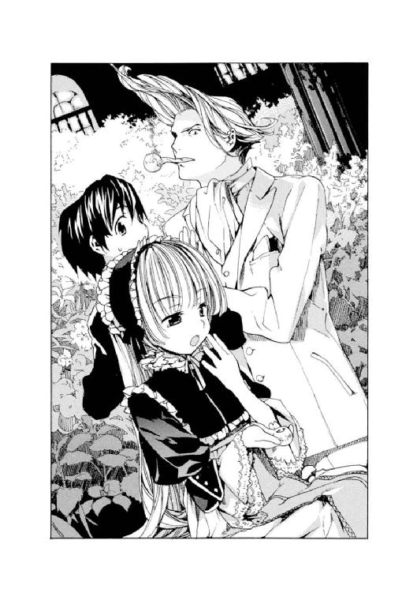
誰も理解していないのだと認識し、非常に面倒くさそうに、
「......言語化の作業が足りないかね？」
「まったく足りないよ。頼むよ、ヴィクトリカ」
「つまりだね。占い師を殺したのは一発目の銃声ではない。そっちはダミーなのだ。事件が起こったと駆けつけた目撃者たちの前で、メイドは堂々と占い師を射殺したのだよ、君。アラビア語で叫んで占い師を騙し、安全だからとドアの前に立たせて、ドアの鍵ごと占い師を撃ったのだ。左眼を撃ち抜かれていたのは、おそらく占い師が、鍵穴から外を覗こうとしたからなのだ。鍵穴の向こうにあったのは、銃口だったというわけだよ、君」
「ちょっと待て......。では、一発目の銃声は？ 久城くん」
「警部さん、推理してるのはぼくじゃなくてヴィクトリカ」
「一発目の銃声はだね......」
ヴィクトリカはまた大あくびをした。
「......となりの部屋で撃ったのだよ。占い師を怯えさせ、屋敷の人々を呼び寄せるために。どこに向かって撃ったのかまではわからないがね。となりの部屋を調べるといい。まだ新しい銃痕がみつかるはずだ」
「............なるほど」
ブロワ警部が立ち上がった。
何ごともなかったかのように、三つ揃いのスーツの裾を引っ張って整え、流線形の頭を手のひらで整えると、エレベーターに向かって早足で歩きだそうとした。まるで逃げるように。
その後ろ姿に、一弥が義憤にかられて声をかけた。
「警部！」
「......なんだね？」
「ヴィクトリカにお礼を言うべきじゃないですか。捜査を手助けしてもらったんだから......」
「いったいなんのことかね？」
振り返った警部の顔は、傲慢そのものだった。肩をそびやかし、顎をグイッと上げて一弥を睨む。ゆっくりとパイプを口から離し、一弥の顔にぷうっと煙を吹きかけた。
「ゲホ、ゴホ、ゴホ......」
警部は歩き去りながら早口でまくしたてた。
「久城くん、わたしはだね。ただ、わたしが助けてやった東洋人の少年が、その後、元気にしているか心配で、様子を見にきてやっただけだ。元気そうでなによりだが、おかしな言いがかりはだね......」
「......グレヴィール」
ヴィクトリカが顔を上げて、静かに声をかけた。
エレベーターの鉄檻に乗りこんだブロワ警部が、不安そうな顔で振り返った。小さなヴィクトリカのほうを、強大な何者かを見るようにびくついてみつめている。
その瞬間、大人と子供の立場がカチリと音を立てて入れ替わったような......不思議な光景だった。
一弥は黙って二人を見比べていた。
「犯人の動機の謎は、一発目の弾丸でなにを撃ったかに隠されているはずだよ」
「......どういうことだ!?」
「それぐらいは自分で考えたまえ、グレヴィール」
ガタン──！
エレベーターが動き出した。
ブロワ警部の伊達男じみた顔が、悔しそうに歪んだ。そのまま鉄檻は落下していき、警部の姿は地上へと消えていった。
「ふわ～～～ぁ！」
ヴィクトリカが大あくびした。ついで、猫のようにゴロンと床に寝転がると、ぐるぐる回りながら駄々をこね始めた。
「一瞬で終わってしまった。また退屈がやってきた。あぁ、あぁぁ～......」
「ねぇ、ヴィクトリカ」
一弥は不機嫌そのものだ。
もちろんヴィクトリカは、一弥の機嫌など気にもしていない。開いた書物の上をぐるぐるし続けている。
「あのおかしなヘアスタイルの警部、きっとまた、手柄を独り占めするつもりだよ。本当はいつもヴィクトリカに教えてもらってるのに」
「......気にしてるのか？」
意外そうにヴィクトリカが聞く。
一弥は強くうなずき、
「筋の通らないことは、好きじゃないよ。だいたい、頼ってる割には態度が悪いだろう？」
ヴィクトリカは興味なさそうに、相変わらずぐるぐるしていた。一弥はふと、
「そうだ......。ねぇ、君と警部って知り合いなの？ なんだかあんまり......仲がよくなさそうだけど............」
ヴィクトリカは答えない。
一弥はあきらめて、肩をすくめた。
と、ヴィクトリカが急に起きあがると、
「久城、君、ちょっと踊ってみろ」
「......はぁ!?」
「ぼんやりしていないで立ち上がりたまえ。そしていますぐ、踊りだせ」
「なぜですか!?」
ヴィクトリカは当たり前だ、というようにうなずきながら、言った。
「退屈しのぎだ」
「......いやだよ。帰る！ あっ、そろそろ午後の授業が始まるから、その............」
「久城」
ヴィクトリカの緑色の双眼にじっとみつめられると、一弥は蛇に睨まれた蛙のように動けなくなった。ぷうっと煙を吹きかけられ、一弥はまた咳きこんだ。
「ゲホッ......！ あのね、ヴィクトリカ」
「久城、はやく......」
ヴィクトリカは据わった目つきで、一言、
「踊れ」
「............はい」
一弥は記憶の糸をたぐり寄せ、故郷の夏祭りの踊りをやり始めた。軍人一家の息子として、踊ったり歌ったり、浮かれたことにうつつを抜かしたことなどこれまでない。
「......ふうむ。それはなんという踊りだ？」
「盆踊りだよ。君もやる？」
「やるはずないだろう。あぁ......退屈だな」
「君、ほんと......ひどい人だよね」
「もう、寝ようかな......」
植物園の中に、ヴィクトリカのため息が響き渡った。
３
そして、翌朝──。
聖マルグリット学園男子寮の自室で、一弥はいつも通り朝七時半ぴったりに起床した。眠そうに洗面所や廊下をふらふらしている少年たちを尻目に、顔を洗って髪もしっかりとかしつけ、食堂のいつもの席に座る。
やけに色っぽい赤毛の寮母さんが、朝食をテーブルに置いてくれた。パンとミルク、フルーツの朝食を口に運ぼうとして、一弥は、
「..................ああっ!?」
隅の椅子に足を組んで座り、くわえ煙草で朝刊を読んでいた寮母さんが、びっくりして顔を上げた。
「どうかした!? なにか混入してた？」
「いや、食事はおいしいです。じゃなくて、その見出し......！」
一弥は、寮母さんから朝刊を譲ってもらい、むさぼるように読んだ。
見出しにはこんな煽り文句が躍っていた......。
〈またもお手柄！ ブロワ警部。
占い師ロクサーヌ射殺事件を見事解決!!〉
例によって、ブロワ警部がヴィクトリカの推理を自分の手柄にしてしまったのだ。記事には続いて、アラブ人メイドが逮捕されたこと、そのメイドがすごく美人なこと、そのせいもあってか警部が張り切って取り調べしていること、そして......。
「なっ!?」
占い師の遺産を相続することになった孫娘──あのメイドと殴り合ったという恐ろしい──から、感謝の気持ちを込めて、ブロワ警部に熱いキスと──それはべつにいいが──豪華なヨットがプレゼントされた、と。
警部はこの週末にでもさっそく、ヨット遊びに興じるつもりだと高笑いしていた、と......。
「ヨットぉぉぉ!?」
一弥は朝刊を寮母さんに返し、椅子に座り直した。
二、三秒、考えこむ。
（その感謝のキスと豪華なヨットは、もともとヴィクトリカに贈られるはずのものだよな......。まちがったことは許せない......。くそぅ、あのドリルみたいな頭の警部め！）
──一弥は立ち上がった。
「ヴィクトリカ──────────!!」
朝いちばんで聖マルグリット大図書館に駆けこみ、細い迷路階段を駆け上がった一弥を待っていたのは、なぜか無人の植物園だった。時計を見ると、まだ朝の八時前だ。きっとヴィクトリカもこれから植物園にくるのだろう......。
一弥はまた、数分間かけて迷路階段を降りた。降りている途中で、教職員の誰かが乗りこんだらしく、油圧式エレベーターがガタタンッと音を立てて昇っていくのが見えた。
大図書館を出て走り出したとき、ちょうど登校してきた生徒に思い切りぶつかった。
「きゃっ!?」
「す、すみませ............あ、なんだ、アブリルか」
金色のショートヘアに、長くしなやかな手足が眩しい、英国人の少女が立っていた。手にしていた写真がヒラヒラと落ちたので、一弥はかがんで、それを拾った。
若い男の写真だった。
控えめな笑顔を浮かべてこちらをみつめているが、その顔は眩しい美貌で、誰をも魅了するさわやかな魅力に溢れていた。一弥はちょっと肩を落として、
「おはよう、アブリル......。これ、誰？ 恋人とか......？」
「あっはははー！ やだもぅ、久城くん、そんなはずないでしょー！」
アブリルは大笑いして、ばしばしと一弥の背中を叩いた。かなり痛かった。女の子って意外と腕力があるものなのかもしれない。
「いてて......」
「これはねぇ、ネッド様よ」
「はぁ？」
「知らないの？ ネッド・バクスター様。英国の舞台俳優で、いますっごい人気なの。見た目も素敵だけど、こう見えて演技派なのよ」
「ふーん。ファンなんだ？」
「ううんー」
アブリルが首を振った。
「英国の友達がくれたから、大事にしてるだけ」
「なんだ......」
アブリルは大切そうに写真をポケットにしまうと、
「じゃ、あとで教室でね！」
「う、うん」
「またこわい話しよっか？」
「いやっ......。今度はぼくがアブリルに、こわい話をするよ」
「こわがりなのに？」
一弥はショックを受けたが、アブリルはそれに気づく様子もなく、ほがらかに手を振って走り去っていった。
（こわがりって......）
気を取り直し、一弥も走り出す。
──学園の敷地を出て、村に向かった。人や馬車、それに最近は車が忙しく行き来する大通りにある、地元警察署に入っていく。
煉瓦造りの小さな建物は、外壁に蔦がびっしりからまり、いまにも崩れそうに古い建物だった。正面入り口のガラス扉にはいくつもの亀裂が入り、床に敷きつめられたターコイズ色のタイルも、ところどころが割れていた。
三階のいちばん大きな部屋──警察署長より立派な部屋だ、さすが貴族の息子というところだろうか──に陣取っていたグレヴィール・ド・ブロワ警部は、手を繫ぎながら騒いでいる部下二人に止められながらもずんずん入ってきた一弥の姿に、びっくりして顔を上げた。
部屋の四方は棚になっていて、警察署だというのになぜか高価な西洋人形がたくさん並んでいた。趣味が丸出しの奇天烈な部屋だ。
「......よぅ、久城くん」
「け、警部さんの............ばかー！」
「はぁ？」
何ごとだ？ と署内の男たちがたくさん集まってきた。ドアの前で手を繫いで通せんぼしている部下二人に邪魔されながらも、有名な貴族警部と、やってきた東洋人の少年が睨みあっている様子を、興味津々で見守っている。
「今朝の朝刊、読みました。なんですか、あれは？」
「いや、その......」
ブロワ警部はあわてて言い訳し始めた。
「あのキスはねだったわけじゃなくて向こうがね、それに割と年増だったし別にそんなにうれしくは......」
「キスじゃない！」
「えっ？」
「豪華ヨット！ あと、遺族の感謝の念ですよ。あれはもともと、あなたじゃなくて別の人に贈られるべきものですよね。ヴィク、トリ、カ..................もふっ!?」
一弥がヴィクトリカの名前を出そうとした途端、ブロワ警部は走り幅跳びのような跳躍力で一弥に飛びかかった。口を押さえて、血走った目で、黙れっというように一弥を睨んでいる。
野次馬たちが、なんだなんだ、と耳をそばだてている。警部は両腕で一弥の首と口を押さえこみながら、そろそろと移動して、足を伸ばし、ドアを乱暴に蹴っ飛ばして閉めた。
ようやく一弥の口から手を離す。
「......げほっ!?」
「口を慎みたまえ。ばれちゃうじゃないか」
「あのですね！」
「ああ、もう、わかったわかった。仕方のない男だな。君の情熱には負けたよ」
「はぁ......？」
「週末のヨット遊びの計画は、当初、わたし一人で心ゆくまで〝男と海〟をテーマに自然と戯れるつもりだったがね。仕方ない。君たちも招待するよ」
警部はおおげさにため息をついてみせた。そして机に尻を乗せて浅く座ると、棚に置かれていた西洋人形を一つ胸に抱いて、長い髪を愛おしそうになで始めた。
その様子を、変態を見るような目で遠巻きにしている一弥には構わず、独り言のように、
「彼女のだね......」
「彼女？」
「その、ヴィクトリカ......だよ。あいつの〝外出許可〟の特例も、このわたしの働きかけがあれば下りるだろう。なんといってもわたしはグレヴィール・ド・ブロワ警部だからね。尽力してやってもいい。ふむ......」
一弥は首をかしげた。
「外出許可って？」
「いや、なんでもない......。では、週末に。詳しいことは追って連絡するよ」
ブロワ警部は人形の片手をつかむと、一弥に向かって「ばいばい」と振ってみせた。一弥は不気味に思い、逃げるようにその部屋を出た。
「......では、週末の約束をしてきてしまったのか？」
聖マルグリット大図書館。
再び迷路階段を駆け上がってやってきた一弥に、いつのまにかいつもの植物園に陣取り、パイプをくゆらしていた美少女、ヴィクトリカが言った。
目の前の床には、放射線状に広げられたたくさんの難解な書物。ヴィクトリカは顔も上げず、長い金髪をほどけたターバンのように散らしながら、読書に没頭している。
一弥の話に耳を傾けながらも、ひっきりなしにページをめくっているところを見ると、難解な書物を読むことと会話することを同時にやってのけているらしい。
「うん、そう」
「......グレヴィールと？」
一弥は得意そうに胸を張った。
「ヨットの所有権までは主張できなかったけど、とりあえずは暫定的勝利というか、ね」
その義憤に燃え、勝利に酔う一弥の生き生きとした顔を、ヴィクトリカがのっそりと首をもたげて、あきれたように見上げた。
長く生きすぎた老人のような、もの悲しい緑の双眼。
老女のようにしゃがれた、しかしよく通る声。
「一つ、聞くが」
「はいはい、なんでしょう？」
「久城、君、グレヴィールが好きか？」
「まっさか！ あんなやつ、大ッキライだよ。反吐が出る！」
「もう一つ、聞くが。貴重な週末をだね、その大ッキライなグレヴィールとともに過ごしてだね、久城、君、楽しいのか？」
「楽しくないよ！..............................あっ？」
一弥はしばし呆然とした後、首をかしげてその場にしゃがみこんだ。
「............どうしてこうなったんだっけ？」
「わたしとしても、君に聞きたいところではあるが。しかし、そうか......」
落ちこんでいる一弥にはまったく気を遣うことなく、ヴィクトリカは書物から顔を上げると、けだるげにパイプをくゆらした。
天窓から射しこむ柔らかな光。
それを見上げる彼女の肌も、照らされて白々と輝く。
「そうか......。では、出られるのか。この牢獄を。グレヴィールが〝外出許可〟を取ると、そう、言ったのだな......！」
その謎のつぶやきに、落ちこんでいる一弥は気づかない。
「警部と週末旅行......。どうしてそんなことになったんだろう？ いや、向こうも悩んでるころだろうから、いわば相打ちだな。しかし......せめてあのヘアスタイルだけでもなんとかしてくれないかな。一緒に歩くの、恥ずかしいよ......」
──ふと気づくと、ヴィクトリカが立ち上がっていた。
身長は百四十センチぐらい。長い金髪を垂らし、白い肌とエメラルドグリーンの瞳を輝かせるその姿は、人間というより、精巧な人形が動いているような奇妙さを感じさせる。
つられて一弥も立ち上がった。
めったにヴィクトリカが立ったところを見ることはないのだが、たまにこうすると、一弥は彼女の体の小ささに改めて驚いてしまう。少年としては小柄な一弥の胸かお腹辺りに、小さな金色の頭があった。子供のように首をもたげてこちらを見上げ、ヴィクトリカは、
「旅行の支度をする」
「......えっ？ だって、週末までまだ何日もあるよ」
「............」
ヴィクトリカはなぜか悔しそうな顔をした。それから黙って歩き始めた。
と......。
教職員用の油圧式エレベーターのボタンを押し、開いた鉄格子から鉄檻に入っていった。
「げげぇ!?」
「......どうした、久城？」
「ヴィクトリカ、君、なんでエレベーターに乗ってるの？」
振り返ったヴィクトリカは、パイプを口から離し、
「許可があるからだ。これは教職員とわたし用のエレベーターなのだよ。......どうした？ なぜ泣きそうになっている？」
「いや、ぼくはまた、君も迷路階段を上がっているものだとばかり......。ぼくらは同じ苦労をともにしているのだと......」
「そんな馬鹿な。こんな階段を何分もかけて上がるマヌケは、君ぐらいだ、久城。そういえば......」
ヴィクトリカは遠い目をした。
「今朝、わたしがエレベーターで昇ってきたとき、君、階段にいたな。やけに急いで駆け下りていたので、声はかけなかったが」
「......ぜひ、かけてよ！ それは君に会いにきたんだから！」
落ちこんでいる一弥に構わず、鉄格子がギギーッと閉まった。
あわてて、
「ぼくも乗せてよ」
「それはいけない。これは教職員とわたしのためのものだ。君は辛い辛い思いをして腿をだるぅくしながらえっちらおっちら階段を降りたまえ。勉強ばかりしている君には、貴重な運動だ。せいぜい無駄に体力でもつけたまえよ」
一弥はショックを受けた。生まれ育った東洋の島国では、兄二人が、成績優秀なだけではなく体も相当鍛えていたので、事あるごとに家族に、おまえも走れだの腕立て伏せをしろだのと言われて家の近所を走ったりしていた一弥だったが、そういえば、ソヴュール王国にきてからは、運動らしい運動はしていなかった。ちなみに、国に残してきた兄たちは大柄で腕力もあり、昔は二人揃ってよく近所の悪ガキを締めていた。長じて、喧嘩バカの長兄は学者になり、逃げ足の速い次兄は政治家になった。適材適所ともなんとも言い切れないが......。
思わず遠い目になって立ち尽くす一弥に、ヴィクトリカはとってつけたように笑顔を見せ、ぱたぱたと小さな手を振った。
「では、友よ。下で会おう」
「えっ......ちょっ、ヴィクトリカぁぁぁ!?」
ガタタン──！
鉄檻は無情にも、ヴィクトリカだけを乗せて落下し始めた。
４
さて、時が過ぎ、その週の週末──。
あいにくの曇り空が、聖マルグリット学園の静かな敷地内を覆っていた。
なだらかな山の中腹に位置する敷地の隅に、学生寮がそびえていた。学生寮といっても、そこは貴族の子弟の寝起きする場所だ。上質なオーク材で造られた二階建ての建物で、各部屋の窓には絹のカーテンが揺れている。内部は生徒一人一人に与えられた広い個室のほか、シャンデリアの輝く大食堂まであり、至れり尽くせりである。
その学生寮の前で、一弥とヴィクトリカが言い争いをしていた。
「......どうしてこんな大荷物なんだよっ！ 君、おかしいよ、ヴィクトリカ」
「これはだな、わたしのこの頭脳が英知を尽くして考えた、旅行に最低限必要な持ち物、なの、だ......」
ヴィクトリカはちょっと自信なさそうだ。
一弥のほうは顔を真っ赤にして、彼女が地面に置いている、体の倍はありそうな旅行鞄を指差している。
「ヨットの一泊旅行に、どうしてこんな大荷物が必要なんだよっ？ これじゃ、君、家出少女じゃないか。ぼくたち二人がすっぽり入る大きさだよ」
「必要だったら、必要なのだ！」
意地になったように、ヴィクトリカが繰り返した。
一弥は負けじと、
「だいたい、どうして、留学してきたときのぼくの荷物より多いんだよ？ 極東からはるばる海を渡ってきたんだよ。ええと......一か月ぐらい船に乗ってた。そうだ、ヴィクトリカ、君、この鞄が自分で持てるのか」
「もちろん持てない」
「じゃ......？」
「久城、君が持つのだ」
「ばかー！」
一弥はおろおろと止めるヴィクトリカに構わず、巨大な旅行鞄を開けると中を点検し始めた。ヴィクトリカが「君、勝手に人の荷物を......」「プライバシーが......」などと抗議するが、こうなると一弥は誰にも止められない。
のんびりと通りがかったセシル先生が、そんな二人の様子をびっくりしたようにみつめた。
「......あなたたちって、いつも仲がいいわねぇ。でも......なにしてるの？」
「ちょうどよかった。先生、はい、これ」
顔を上げた一弥が、セシル先生に向かってなにか投げた。先生は驚いて受け取る。ヴィクトリカが悲しそうに、
「それはわたしのコンパス......！」
「そんなものヨットにあるって。あ、この救命胴衣もいらない。あとこの......着替えの山も、一着でいいよ。うーん......なんで食器セットが入ってるんだよ!? 椅子とか!? 君、難民なの!?」
──結局、小さなヴィクトリカが肩からかけられるバッグ一つ分の荷物に減らされ、二人は無事に出発することになった。巨大鞄をセシル先生に預け、村に向かって歩き始める。
「久城、君という男は......」
ヴィクトリカが憮然として言った。
「仕切り屋なのだな」
「そんなことないよ」
「仲のよい友人も、旅行をすると意外な欠点が露呈し、友情に亀裂が入ることがあるというがね......」
「なに言ってるんだよ？ あ、ヴィクトリカ、走って。五十四分の列車に乗るって、ぼくが決めてるから」
「むぅ......」
二人は村に一つだけある駅に走りこんだ。三角屋根にかけられた丸い時計が目印の、小さな駅だ。蒸気機関車が到着するたび、小さな駅舎がぶるぶると震えて、足の下から振動が伝わってくる。
一弥が切符を買い、改札を通ろうとすると、ヴィクトリカがぼんやりとそれをみつめていた。
「ヴィクトリカ、切符は？」
「......切符？」
「ここで買うんだよ。ほら、財布出して」
と、出した財布にぎっしり紙幣が詰まっているのを見て、一弥はあわててそれをしまわせた。彼女の分の切符も自分で買って、手を引っ張って駅のホームに走る。
旅支度の大人たちのあいだを、まるで台所の床を走る二匹の鼠みたいに、二人でバタバタ駆け抜けた。乗るはずの蒸気機関車が、ホームの真ん中でちょうど動き出したところだった。一弥は振り返って、ヴィクトリカの手を引っ張った。彼女は金髪をなびかせて、小さな体で懸命に走っていた。ヴィクトリカの体を持ち上げるようにして乗せると、自分も後から飛び乗った。
二人を乗せた機関車が、速度を増して、小さな駅舎のホームを轟音とともに駆け抜けていく......。
ドアの近くに立って、手すりをつかんでいるヴィクトリカの金色の髪が、風に吹き上げられて綿菓子みたいにふくらんだ。その向こうに、びっくりしたように見開かれたエメラルドグリーンの瞳があった。
機関車はどんどん速度を増していく。
村に広がる葡萄畑の中に、ぽつん、ぽつん、と人が立っているのが見えて......だんだん、目で追えないほどに速くなっていった。
一弥は立ち尽くしているヴィクトリカをうながして、座席に向かった。ヴィクトリカはおとなしくついてくる。
向かい合わせのボックス席に着いた。固い座席に腰を落ち着けて、一拍おいてから......一弥が叫んだ。
「......なんでそんなたくさん、お金を持ってきたんだよっ？」
「必要だろう」
「そんなにいらないよ！ それに、あんな財布を人に見られたら、スリにモテモテになっちゃうよ。ああ、もう、びっくりしたなぁ............って、ヴィクトリカ？」
ヴィクトリカは子供のように窓の桟に小さな両手をつき、窓の外の風景をみつめていた。
一弥はその顔を、おそるおそる覗きこんだ。
朝からお説教ばかりして、怒らせちゃったかな......と心配になったのだが、ヴィクトリカは怒った様子はなく、ただ驚いたようにエメラルドグリーンの瞳を見開いて、窓の外に目をこらしていた。
生い茂る緑。山脈のつらなる雄大な光景。
それが次第に、建物や道路が増え、都会の街並みに変わっていく。
学園のある山を降り、街に近づいていくのだ。それをヴィクトリカは、熱っぽくみつめている。
そして時折、視線を動かして、しゅっぽしゅっぽと音を立てる車両や、黒煙を上げる煙突などにじっと見入っている。
（まるで、初めて機関車に乗った人みたいだな......）
一弥は口を閉じて、一心に窓の外をみつめるヴィクトリカの横顔を、見るともなしにじっと眺めていた。
──目指す駅は、地中海沿いの騒がしい町にあった。アルプス山脈の麓にあるあの村とは、同じ国と思えないほどに活気があり、駅のホームにまでかすかな潮の匂いが漂う大きな港町だった。
一弥はヴィクトリカをうながしてホームに降り立った。村の駅舎とちがって、ホームが何本もあり、天井も見上げたら気が遠くなりそうなほど高かった。油断すると駅の中で道に迷ってしまいそうだ。
旅慣れた様子の大人たちが忙しく行きすぎ、大きな荷物を預かった赤い制服のポーターが横切っていく。
何本ものホームに、たくさんの人が向かい、また降りてくる。人と人が無限に交差する、都会の駅。しかし子供の姿は少なかった。通り過ぎる人々が、二人だけで立っている一弥とヴィクトリカを、時折、不思議そうに一瞥していく。
ホームに降り立ったヴィクトリカは、きょろきょろし続けていた。ようやく改札の場所をみつけた一弥が、一緒にそちらに歩きだそうとしても、ヴィクトリカが熱に浮かされたように、興味をもったままあっちにこっちに歩きだしてしまうので、難儀した。一弥は意を決し、ヴィクトリカとしっかり手を繫いだ。
──小さな手だった。学園の同級生というより、まるで幼い妹を連れているみたいだ。
「ぼくからはぐれないでよね、ヴィクトリカ」
「............」
ヴィクトリカはきょろきょろし続けている。不思議なものをみつけては、
「あれはなんだ？」
「アイスクリーム屋だよ」
「あれは？」
「新聞売り。......ちょっと、まっすぐ歩いてよ。轢かれちゃうよ」
一弥はヴィクトリカの小さな体を抱えこむようにして、通りに出た。
広い道幅に何車線も線が引かれて、ひっきりなしに馬車や車が通り過ぎていた。舗道には人々が溢れ、慣れた足取りで、馬車や車の行き交う大通りを渡ったり、馬車を止めては乗りこんでいる。舗道沿いにはきらびやかな店舗が並び、ウインドウに高級菓子やあでやかなドレス、帽子や扇子などが飾られている。
また、かすかに潮の匂いがした。海が近いのだ。
一弥は立ち止まり、ぴゅうっと口笛を吹いた。と、パッカパッカと四輪馬車が近づいてきて、二人の前で停まった。ヴィクトリカが驚いて、
「......魔法か？」
「こうやって呼ぶものなんだよ。ほら、乗って」
馬車に乗ってからも、ヴィクトリカは顔を外に向けて、めずらしそうに通りの人々や建物を観察し続けていた。一弥は行き先を告げてから、
「ねぇ、もしかしてヴィクトリカ......あんまり外出したことないの？」
「............」
ヴィクトリカは答えなかった。急に横顔が不機嫌になったような気がして、一弥はそれ以上聞くのをやめた。
──警部と待ち合わせをしたリヨン湾の海岸に着く頃には、一弥はへとへとになっていた。
５
地中海に面した大きな波止場の一角。
貴族や金持ちの豪華ヨットや、異国情緒あるデザインの客船が停泊し、肌の色もさまざまな船乗りたちが乗り降りを繰り返していた。
岸につけられたピカピカのヨットの上に、若い男が立っていた。
横縞の水夫風シャツに、白いぴちぴちパンタロン。首に朱色のバンダナを巻いて、頭は相変わらず攻撃的に尖らせている。......グレヴィール・ド・ブロワ警部だ。
警部は二人の姿を目に留めると、上機嫌で手を振った。
「よーぅ、相棒！」
一弥はぐったり疲れた顔をして、力なく手を振った。
ブロワ警部は軽快にヒラリと飛び降りてくると、一弥たちの前で、片足を前に出し、扇情的なナイスポーズを取ってみせた。それからふと、途方に暮れたように、
「......悩んでたんだがね......どうしてわたしは、君たちと週末を過ごすことになったのかな？」
「ぼくも不思議に思ってました。......いいヨットですね？」
「ブロワ号だよ。ところで、久城くん」
警部は急にまじめな顔になった。
傍らに立つヴィクトリカにも聞こえるように、中腰になって──こうしてみると二人の身長差は四十センチ以上あった──ささやいた。
「例の事件......となりの部屋での一発目の発砲だがね」
「また、警部さん、ヴィクトリカに頼ろうとし、て......」
一弥が怒りだしたのを、ヴィクトリカがつついてやめさせた。ヴィクトリカの顔を覗きこむと、聞きたそうな顔をしていたので、仕方なく黙る。
「撃たれていたのは、鏡だった。粉々にされていたよ。どうやら占い師ロクサーヌが占い用に使っていた、古く由緒ある鏡だったらしい」
「魔法の鏡、か......」
ヴィクトリカがつぶやくと、ブロワ警部はビクリと体を震わせた。
「部屋には占いに使う道具がたくさんあった。たとえば......」
「葡萄酒を満たした銀の壺。油を注いだ銅の壺。そして水を入れたガラスの壺だな」
「うっ......」
警部は恐ろしいものを見るようにヴィクトリカを見た。
ヴィクトリカは肩をすくめ、
「占いに使う道具だよ、グレヴィール」
「そういうことには詳しいよね。切符の買い方とかは知らないのに」
一弥が口をはさむが、二人とも返事をしない。一弥はしょんぼりした。
「それから、例のアラブ人メイドだが......」
「ふむ」
「美人だ」
「......警部さん、それ新聞にも書いてありましたよ」
また一弥が口をはさむ。
「そのメイドが、動機について謎の言葉を口走った。アラビア語の通訳が、怪しげなやつしかみつからなかったので、まだ意思の疎通が図りきれないのだがね。通訳は、彼女がこう語ったと言っている」
ブロワ警部は一度、言葉を切ってから、静かに、
「〈これは箱の復讐です〉、と......」
ヴィクトリカが顔を上げた。
警部と目を合わせる。
二人の視線が合ったところを見るのは、これが初めてだった。どうなることかと一弥は息を呑んで見守っていたが、どうもならなかった。
と、遠くから、おかしな声が聞こえてきた。
「警部ぅぅぅぅぅー！」
「ぶぅぅぅぅぅー！」
三人が顔を上げると、桟橋の向こうから、見慣れた男二人組が走ってくるのが見えた。
兎革のハンチングをかぶった二人組だ。仲良く手を繫ぎながら走り寄ってくる。
──ブロワ警部の部下だ。
「どうした！ 何ごとだ？」
ブロワ警部が胸を張り、ビシッと二人を指差して言うと、二人は足を止め、
「警部、ナイスポーズですー！」
「きれてますー！」
一弥は、無理して警部を褒めちぎる二人を横目で睨んだ。
（こいつらが甘やかすから、へんな警部なんだよ......。ヘアスタイルも直らないし......）
ヴィクトリカにもそう言おうかと傍らを見ると、いつのまにか彼女は姿を消していた。きょろきょろと捜すと、ヨットに飛び乗って熱心に中を調べていた。......また、好奇心の虫にとりつかれたらしい。
「警部ー、たいへんですー！ アラブ人メイドがー」
「逃げましたー！」
「げげぇ!? ほ、本当か！」
ブロワ警部は飛び上がった。
部下二人について走り出そうとして、はっと気づき、戻ってくる。
「おい、久城くん。わたしはここで失礼する！ ヨットだが、乗ってもいいが運転してはいかんぞ。免許を持っているのはわたしだけなのだからな」
「ええ!? 乗ってるだけ？ 運転はダメ？..................つまんないですけど？」
「わかってる！ 我慢だ！」
警部はきっぱり言い切ると、部下二人と手を繫いで、走り去っていってしまった。
一弥はその後ろ姿を、呆然と見送った。
（運転するなって......。我慢だって..................えぇ～？）
弱り切って、ヴィクトリカのほうを振り返ると、彼女はレースがふわふわしたワンピースを際限なく汚し、糸のように細くきらきら輝く金髪をぼさぼさにした姿で、ヨットから降りてきた。
チラッとブロワ警部の後ろ姿を見ただけで、気にする様子もなく、
「おい、君。このヨットは占い師ロクサーヌの孫娘のもの、だったな」
「うん、たしかそうだよ」
「孫娘はロクサーヌの遺産を相続したのだな。ということはこのヨットはもともとロクサーヌのものだったのだな」
「......そうだね」
「ふぅむ、ところでだね」
ヨットが運転できないことにしょんぼりしていた一弥は、ヴィクトリカの言葉に生返事を返すばかりだった。その様子に気づいたヴィクトリカはムッとし、さっきから手に握っていたなにかを、ずいっと一弥の目前に差しだした。
──白い封筒だった。
「なに、これ？」
「ヨットの中でみつけたのだ。招待状だ。......ロクサーヌ宛の」
一弥は興味を持って、封筒を開けてみた。
二人でヨットの縁に腰を下ろし、中から現れた、流麗なフランス語で書かれた手紙を読む。
内容は豪華客船への招待だった。この近くの海岸に停泊中の客船でのディナーに、ロクサーヌを招いていた。日付は今日の夜。
「......気になる部分があるな」
「そうだね......」
一つは、料理のメニュー。ひときわ大きな飾り文字で、わざわざこんな言葉が綴られていた。
〈メインディッシュは〝野兎〟です〉
野兎──。
占い師ロクサーヌのお屋敷でたくさん飼われていた動物だ。
猟犬に嚙み殺させていたという......。
そして、もう一つ。
ディナーのタイトルだ。
〈～箱庭の夕べ～〉
「......箱、って言葉、さっきも聞いたよね？」
「ああ、そうだな」
一弥とヴィクトリカは、顔を見合わせた。
ヴィクトリカの表情が、はやくも「退屈だ」「退屈しのぎだ」と一弥にからむときの顔つきに変わってきていた。どこがどう、とうまく言えないのだが、経験からわかるのだ。
ついで一弥は、ヨットの中を振り返ってみた。
ぴかぴかの豪華なヨット。
素敵だけれど......動かしちゃいけないっていうのは、ちょっと......つまらない。
ヴィクトリカと、うなずきあう。
「......行ってみようか」
「うむ」
──二人が招待状の地図を頼りにその客船をみつけた頃には、日が暮れかけていた。薄暗い岸に停められたその船に、招待状を見せて、乗りこむ。
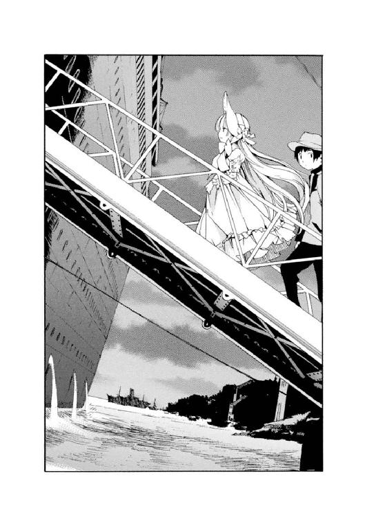
二人が最後の客だったらしく、船はすぐに岸を離れて、波の音をさせながら動き始めた。
（あれっ......？）
静かな船だった。岸に停泊しているときから、闇に溶けこむように暗い色で、目をこらさなければそこに船があることを見逃してしまいそうな......暗い幻のような船だった。やけに太い煙突が、夜空に向かって不気味にそびえ立っていた。一弥は思わず身震いした。
（あれっ？ この船の名前......）
ふと、首をかしげた。
（どこかで聞いたことがあるような......うーん、思い出せない。まぁ、いっか）
船は海を割るように進んでいる。
遠くで雷鳴が鳴った。天候はよくないらしい。
船には、その名が控えめに記されていた。
〈QueenBerry 号〉と──。
モノローグ─monologue 1─
さむかったしお腹もすいていた。
ソヴュールは豊かな国のはずだったけれど、ダウンタウンの路地にしゃがみこんでいる孤児にとっては、凍てついた森にいるのと同じだった。
施設を抜け出して、三日。
残飯を漁ったり、盗んだりして食いつないでいたけれど、もう限界だった。
──急にがっちりした大人の腕に肩をつかまれて、持ち上げられた。
みつかってしまった、施設に帰されるんだ、と思ったけれど、抵抗する力もなかった。
鉄格子がはめられた馬車に放りこまれた。
まるで動物を入れる檻みたいだ、と思った。
暗かったけど、闇に慣れた瞳に、同じ檻に入れられた数人の子供たちが見えた。みんなボロを着て寒さに震えていた。男の子のほうが多かったけれど、女の子もいた。
馬車が動き出す。馬の蹄が、石畳を蹴って、軽い音を立てる。
御者席からさっきの大人の声がする。男が二人いて、なにか相談している。
「ソヴュールの子供を確保したぞ」
「身元は？」
「ありゃあ、孤児だろう。いなくなったって誰も捜さない。だいじょうぶだ」
（......どういうこと？）
思わず耳をそばだてる。
「あとはどこだ？」
「あと......二人だな。まぁ、すぐ集まるだろう」
「簡単だったな」
さむくてたまらなかったので、傍らの子供にくっついて、暖めあった。
馬車が揺れている。
（どこに連れていかれるんだろう......？）
第二章 暗い晩餐
１
豪華客船の周りは、真っ暗だった。異国人らしい、漆黒の肌をした案内人は無言で、手にした洋燈の灯りを頼りに、一弥とヴィクトリカを誘導していた。
ザバン、ザバーン......と、進み始めた船が立てる、波の音が聞こえてくる。
静かな夜だった。
ふと夜空を見上げた一弥は、星の瞬く暗い空が、とつぜんある場所から遮断されているのに気づいた。空にまぎれて真っ黒な壁が立っていた。上から迫ってくるような黒い壁によく目をこらすと、それは大きくそびえ立つ煙突だった。
その煙突は、なぜか船の大きさとはバランスが合わないほどに太く、船の中央に漆黒の塔のようにそびえ立っていた。
「......行くぞ、久城」
ヴィクトリカの声に、一弥はあわてて後を追った。船内の階段を降りて、どんどん下っていく。船内に入れば明るいのかと思ったが、なぜか薄暗いままで、相変わらず案内人の持つ洋燈だけが頼りだった。
──二人が通されたのは、細長い大テーブルとシャンデリアが輝く大食堂だった。そのシャンデリアは灯りがついておらず、部屋は薄暗い......いや、真っ暗だった。大テーブルには、十人分のディナーが並べられてほかほかと湯気を立てていた。各自の手元だけがかろうじて見えるほどのかすかな蠟燭の光が、十人分、闇の中に揺れていた。
給仕はいないらしく、順に運んでこられるはずの皿は、前菜からメインディッシュまですべてテーブルに並べられていた。
闇の中に、九人の大人が席に着いていた。ディナーは始まっているらしく、カチャカチャとナイフやフォークが音を立てている。
隅にある席が、一つだけポツンと空いていた。そこが、殺されたロクサーヌが着くはずだった席なのだろう。一弥は案内人のほうを振り返って、
「二人いるので、椅子をもう一つ............あれっ？」
誰もいないので、扉を開けて廊下に顔を出す。
案内人の持つ洋燈の橙色の灯りが、廊下を揺れながら遠ざかっていった。
「あ、あの、ちょっと......？」
声が聞こえているはずなのに、振り向こうとしない。
一弥は不安になった。暗い廊下を走って、彼を追いかける。と、洋燈の灯りも左右に大きく揺れ、遠ざかっていった。走っているらしい......。
（どうしてぼくから逃げるんだ......？）
──真っ暗な甲板に出ると、案内人の姿はどこにもなかった。一弥は戸惑ってキョロキョロと辺りを見回した。
（そんな......。消えるはずない。確かにここから甲板に出たんだ......！）
──ポチャリ！
遠くで水音がした。
一弥は甲板を走った。
小さな水音を立てながら、暗い海を、洋燈の橙色の灯りが遠ざかっていった。案内人は、最後の客である一弥とヴィクトリカをこの船に乗せた後、ボートに乗って船から去ったのだろうか。暗くてボートに乗った人影までは見えなかったが、一弥はそうなのだろうと考えた。手すりから身を乗り出し、呆然とボートを見送る。
（なっ......？ どういうことだよ......？）
しばらくそこに立ち尽くしていた。
と、船体に控えめに書かれた文字が、目に飛びこんできた。
──〈QueenBerry 号〉。
やっぱり、どこかで聞いたことのある名前だよなぁ、と思った。
首をかしげる。
......思い出せない。一弥はボートで遠ざかっていく男を追うことをあきらめ、甲板を歩いてもとの大食堂に戻った。
「ねぇ、ヴィクトリ、カッ............!?」
真っ暗な大食堂では、相変わらず、手元の蠟燭の灯りだけを頼りに人々が食事を続けていた。隅の空いていた席......には、ヴィクトリカがチョコンと座り、もぐもぐと豪華なディナーを食していた。
小さな手でナイフとフォークを動かしては、小さな口に料理を運んでいく。優雅で、それでいて素早い動きだった。咀嚼も速い。どんどん料理がなくなっていく。
一弥があわてて近づき、
「ちょっ、ちょっと、ヴィクトリカ！」
「むぐ、むぐ......なんだね、久城？ 食事中なのだよ、君。静かにしたまえ」
「ぼくもいるんだけど」
「......知っているが？」
もりもりと前菜を平らげ、ナイフとフォークを替えると魚料理に取りかかりながら、ヴィクトリカが不思議そうに聞き返した。
「ぼくもお腹が空いてるんだよ！」
「しかし、君。これはロクサーヌ宛の招待状なのだからね」
「......だからなんだよ？」
「ロクサーヌは一人しかいない。従って、彼女宛の招待状を手にやってきた我々のディナーも、一人分しかないというわけなのだ」
「..................わかったよ。君はそういうやつだよね。ねぇ、荷物にクッキーかなにか入ってないの？ それで我慢するよ」
魚用ナイフで器用に小骨を取り除きながら、ヴィクトリカが顔を上げた。
その顔には奇妙な微笑が浮かんでいた。文句なしに美しい顔は、一見笑っているようだが、口の端が歪み、片頰がぴくぴく痙攣している。
......ヴィクトリカが怒っているときの顔だ。
「持って、いたのだが。君」
「わーい！ じゃ、それちょうだい」
「あの旅行鞄になのだよ」
「..................あっ？」
「わたしの頭脳が導き出した、必要なはずの道具たち。食器セット、椅子セット、そして非常食セット」
「......食器と椅子はいらないだろ？」
「いまごろ、旅行鞄ごとセシルの部屋にあることだろう。自業自得だよ、君」
ヴィクトリカはふんっとそっぽを向いた。
続けて小声で、
「君、いくら極東から優秀な成績で留学してきたといってもだね、お堅い軍人一家の息子といってもだね、えらそうに屁理屈を並べて人を惑わすのはどうかと思うがね？ だいたい君は、偏屈で、自信家なのだ。そんなやつに分けてやるクッキーなどないのだよ。ふんっ」
（げげぇっ!?）
一弥は啞然とした。
（確かにぼくは、頭が固くて真面目すぎるし、そりゃ欠点だってあるけど......）
ヴィクトリカはすねているのか、知らんぷりして肉料理に取りかかっている。旅行の出だしから一弥に仕切られたことに、じつはプライドが傷ついていたらしい。
（偏屈って、自信家って、屁理屈で人を惑わすって............ヴィクトリカにだけは言われたくないぞぉぉぉっ!!）
ひそかに拳を固めた一弥のお尻を、ちょんちょん、と後ろからつつくものがいた。一弥があわてて振り返ると、となりの席についていた若い白人男性が一弥を見上げていた。
「あ、すみません......うるさいですよね」
「いや......。君、座りたまえよ」
そう言われても、空いている椅子はない。一弥が困っていると、男は人のいい笑みを浮かべ、自分の膝をポンポンと叩いてみせた。
「ここでよければ」
「ええっ？ いや......」
「座れ、久城」
機嫌の悪いヴィクトリカに低い声でささやかれ、一弥は仕方なく、その見知らぬ男の膝にそうっと座った。首を曲げて男の顔を見ると、愛想よく微笑んでいる。
どこかで見た顔だ、と一弥は思った。
端整ではあるが、人柄の良さそうな微笑のせいで、ハンサムというよりいい人という印象のほうが強い。イギリス人らしい、どこか硬質な響きを持つクイーンズイングリッシュが、あのかわいい転校生、アブリルを思い出させた。
そうだ、アブリルが......。
「あなた、イギリスの舞台俳優の人じゃないですか？」
一弥が言うと、男の顔がパッと輝いた。
「俺を知ってるのか？」
「クラスメートの女の子がブロマイドを持ってたんです。ネッド・バクスター様、って」
「いや、うれしいなぁ。君、俺の肉を食べたまえ。ほら、遠慮しないで」
大きく切ったメインの肉料理をさしたフォークを口の前まで持ってこられた一弥は、目を白黒させながらもぱくっと食べた。舌の上でとろけるようなおいしい肉だった。ネッド・バクスターは小食なのか、肉料理をほとんど残していた。せっせと一弥の口の前に運んでは、食べさせる。ヴィクトリカがその様子を横目で見て、意地悪な声で、
「......お似合いだぞ」
「あのねぇ、ヴィクトリカ」
「ほらほら、もっと食べたまえ、君」
「あああ、ありがとうございます......」
──しんとした食堂に、うれしそうにネッド・バクスターが語るイギリスの演劇事情やらシェークスピア談議などが響き渡った。
ほかの客は皆、黙って食事を続けている。
そして、十数分後──。
食器の立てる音は聞こえなくなっていた。ネッドの声も途絶えた。
暗い食堂に、ただ蠟燭の灯りだけが薄ぼんやりと揺れていた。規則正しく、十人分の席の前で鈍く輝いている。その、それぞれの席に着いていた客は......。
ある客はテーブルに突っ伏し、動かなくなっていた。そのとなりの客は、椅子に深くもたれてぽかりと口を開けていた。鼾に似たかすかな息が漏れ聞こえ、また途絶えた。
客は全員、ぐぅぐぅと眠ってしまっていた。ネッドの膝から一弥が転がり落ちて、大きな音を立て、床にうつぶせに倒れた。
食堂に静寂が落ちる。
蠟燭の炎がじじっ......と音を立てるほかはなんの音も聞こえない。
やがて......。
静かにドアが開き、誰かが入ってきた。
その十二人目の人物は、注意深く一人一人の顔を覗きこみ、眠っているかどうかを確認した。かすかな足音を立てながら、テーブルの周りをゆっくり歩く。床に転がっていた一弥をぎゅむっと踏んづけ、驚いたように小さな叫び声を立てる。
不思議そうに少年を見下ろし、ついで、となりの席で眠る、帯のような長い金髪を椅子から垂らすヴィクトリカに気づくと、まずその精巧な美貌にみとれた。それから怪訝な顔になり、床の一弥と、椅子のヴィクトリカを順番にじろじろ見た。
そして、ヴィクトリカの目前にあるネームプレートを確認する。
〈ロクサーヌ様〉と書かれている。......その席に、どうしてこの少女がいるのだ、というように首をかしげる。
静かな侵入者に気づかず、十一人の客はすやすやと眠り続けている......。
２
「......おい、君、起きたまえ」
「うう～ん......？」
「仕切り屋で屁理屈こきの留学生の人。起きなさい」
「......君にだけは言われたくないよ、ヴィクトリカ！」
一弥は怒りながら起きあがった。
途端に、鼻先にぷうっと煙を吐きかけられた。手のひらで煙を追っ払いながら、ゴホゴホ咳きこむ。
「ゴホン、ゲホン......もぅ、やめてよ、ヴィクトリカ。まったく、子供っぽいんだから......」
ヴィクトリカが、心外な、という顔をした。
一弥はそんなことは気にせず、きょろきょろと周囲を見回した。
「あれっ......ここ、どこ？」
「船室の一つだ。ラウンジだよ」
ヴィクトリカがぷいっとそっぽを向きながらも、答えた。
そこはさきほどの大食堂と同じぐらいの広さのラウンジだった。さきほどまでいた部屋とは対照的に、天井の豪華なシャンデリアが、目が痛くなるほど眩しかった。
壁際に小さな舞台があり、まるでついさっきまで楽隊が演奏していたかのように、楽譜が開きっぱなしになっていた。中央にはポーカーに興じたりお酒を飲むための小テーブルがいくつも並んでいた。隅にバーカウンターがあり、高級そうな酒瓶がいくつも並んでいた。
さきほどの大食堂にいたらしい大人たちが、それぞれ椅子に座ったり、テーブルをベッド代わりに寝かされたりしていた。明るいこの部屋で見ると、ほとんどは四十代かもっと上の世代の男だった。仕立てのいいスーツに、ピカピカの靴やカフス。手入れの行き届いた口髭。かなり身分の高そうな男たちばかりだったが、いまはみんな頭を抱えて辛そうにうめき声を上げている。
部屋の中にはなぜかシンナーのような刺激臭がかすかに漂っていた。息をするたびに鼻孔をつんと刺激する。みんなが気分悪そうなのはこの臭いのせいでもあるのだろうか。
一弥が座らされている椅子のとなりに、ヴィクトリカがちょこんと座っていた。そのとなりにネッド・バクスターもいた。彼は頭を抱えて辛そうにうつむいていた。
一弥もかすかな頭痛を感じながらヴィクトリカを見た。彼女のほうは平気そうだ。
「......どういうこと？」
「食事に一服盛られていたようだ。目覚めたら全員このラウンジに移されていた」
「どうして？」
「............」
ヴィクトリカは答えなかった。
代わりにラウンジを見渡す。
男たちが年輩者ばかりなのに、一弥は改めて驚いた。二十代半ばぐらいのネッドがもっとも若い男だった。
「おじさんばっかりだね、ヴィクトリカ」
「いや、そうでもないぞ。あそこに女がいる」
一弥はヴィクトリカの視線を追った。
ドア近くのテーブルに、若い女が一人、小さくて形のいい尻を乗せて座っていた。鮮やかな朱色のドレスをまとっていた。そしてその赤とは対照的な、つややかな黒髪が腰まで垂れていた。
視線を感じたのか、女がふとこちらを見た。
ドレスに合わせた赤い口紅が目に飛びこんできた。瞳が長い睫毛に縁取られて蒼く輝いていた。
童顔のせいで、一瞬、子供が大人ぶった服装をしているようにも見えたが、おそらく二十代前半ぐらいだろう。唇をギュッと結んでいる。まるで、さぁこれから口喧嘩をおっ始めるわよとでも言いたげな、いかにも気の強そうな表情だった。
ラウンジにはうめき声や怯えたような小さなささやきが漏れるだけで、静かだった。誰もが身動きもせず、ただ辛そうに頭を抱えていた。
ヴィクトリカは赤いドレスの女から目を離すと、一弥にささやいた。
「久城、おかしなことがある」
「......なに？」
「一人増えているのだよ」
一弥は目をしばたたいた。
「そりゃそうだろ？ 十人しか席がないところ、ぼくとヴィクトリカがきたんだからさ」
「そうではないよ、久城。わたしたち以外に、さらに一人、だ」
「どういうこと？」
ヴィクトリカは、なかなか話が通じないことにいらつくようにその場で地団駄を踏んだ。しかめっ面をしてみせ、いつもより早口で、
「つまりだね。さきほどの食堂にいたのは、九人だった。そこにわたしたちがやってきて、十一人になった。しかし......数えてみたまえ」
一弥は言われたとおり、ラウンジで呻いている人間を数えてみた。
一人。二人。三人......。
四人......五人............六人........................。
数え終わると、不思議そうに言った。
「ほんとだ！ 十二人もいる......！」
「そうだ」
ヴィクトリカは満足そうにうなずいた。話が通じたことに安心したのだろう。
「つまり、さきほどの食堂にはいなかった人間が紛れこんでいるのだ。君、そいつが犯人なのかもしれないよ。そいつはあのディナーを食していない。眠ったわたしたちをここに移動させたのは、そいつなのだ。そしてそのままわたしたちの中に紛れこんだのだよ......」
一弥はラウンジを見渡した。
男たちは一様に、睡眠薬のせいで頭が痛いだけではなく、なにかに怯えるように辺りを見回していた。互いの顔に見覚えがあるようで、顔を合わせては「あっ！」などと小声で叫んでいた。
若いネッド・バクスターだけ、キョトンとして、
「こいつは、なんだ？ 俺......俺、わからねぇ............」
困ったようにつぶやいている。
あの赤いドレスの女が急に立ち上がった。腹立たしそうに叫ぶ。
「なによ、これっ！ ここはどこよ？ もうっ......あ、開かない」
ドアノブを両手でつかみ、がちゃがちゃ乱暴に揺らした。ラウンジにいる全員が彼女に注目した。女は急にドアノブから手を離すと、怯えたような顔でラウンジを見回した。
「どうしてよ？ ここ、どこ......？ どうして鍵がかかってるのよ!?」
誰も答えない。
年輩の男たちは気まずそうに目をそらした。ネッドと、ヴィクトリカ、一弥の三人は、立ち尽くす女をじっと見上げていた。すると女はつかつかと三人に近寄ってきて、そばの椅子にどしんと腰をかけた。
その拍子に、彼女の小さなハンドバッグが一弥の頭に当たり、ゴチンと音を立てた。
「イテッ！」
「............」
女は謝ろうとせず、一弥を見下ろし、フンと鼻を鳴らした。代わりにネッドが、
「大丈夫か？」
「ええ、まぁ」
ずいぶん重たいハンドバッグだったな、と思いながら、横目で女を見る。
それからヴィクトリカに向き直り、小声で聞いた。
「ねぇ、ヴィクトリカ。これ、いったいどういうこと？」
「............混沌だ」
ヴィクトリカは機嫌悪そうに言った。
一弥が「えっ？」と聞き返すと、
「............まだ再構成の材料となる欠片が不十分だと言わざるを得ない」
「つまり、わかんないんだね」
一弥が納得すると、ヴィクトリカはムッとした。白いほっぺたを子供のように膨らませ、一弥をきっと睨みつけて、
「わたしは、材料不足を認めたに過ぎない。わからないのではない」
「............屁理屈」
「むっ！ だいたいだな、わたしにわからないことなどないのだぞ。それを......」
「......自信家」
「むむっ！」
一弥とヴィクトリカが睨みあった。
一弥の漆黒の瞳が、ヴィクトリカの澄んだエメラルドグリーンの双眼と火花を散らす。
そして、数秒後......。
敗北した一弥は、
「すみません......」
「ふむ、わかればいいのだ」
眼力に負け、悪くないのにうっかり謝っていた。
３
徐々に睡眠薬による頭痛から回復してきた一弥は、立ち上がり、ラウンジをいろいろ調べ始めた。
バーカウンターを覗く。とくになにもなかった。並べられたお酒を見ていると、ヴィクトリカも近づいてきて、酒の瓶をざっと見渡した。
「葡萄酒があるな」
「うん......」
ヴィクトリカは瓶の栓を抜くと、手近にあったグラスにとぽとぽと注いだ。鮮やかな赤紫色の液体がシャンデリアのライトを反射してキラキラと輝いた。
ヴィクトリカは瓶のラベルをじっと見た。それからグラスを手に取って、鼻先に近づけ匂いを嗅いだ。
「古くて上等の葡萄酒だ」
「そうなの？」
ヴィクトリカはうなずいた。
「ラベルによると、な......」
二人が小声で話しているところに、ネッドが頭を押さえながらフラフラ近づいてきた。
「なにしてるんだ、坊主？」
「いや、なにかヒントがないかなぁっと......」
「あまりあちこちに触るなよ」
低い声に、一弥が驚いて顔を上げると、ネッドは表情を歪めて、
「食事に睡眠薬が入ってたぐらいだ。どこになにがあるか、わからないぜ」
「そっか......」
ネッドは辺りをきょろきょろし、テニスラケットとボールが投げ出されているテーブルに近づいた。
テーブルには、まるで誰かがついさっきまで座っていたかのように、ウイスキーの瓶と氷、二人分のグラスも置かれていた。氷はまだ溶けきっていない。となりのテーブルには、カードゲームに興じていた途中で誰かがちょっと席を立ったように、カードが何枚も散らばっていた。
一方、一弥はバーカウンターの中に入ったり、出たり、舞台のほうをうろついたりし始めた。楽譜がクラシックらしき曲の途中のページで開きっぱなしになっていた。まるでたったいままで誰かがここに立って演奏していたようだった。
......そのとき、一人の男が急に立ち上がった。
「ウロウロするなっ！」
怒りを込めた叫びに、一弥もネッドも驚いたように振り返った。
男は上等なスーツに宝石のついたカフスを輝かせた伊達男だった。ダークブラウンの髪を七三にきっちり撫でつけ、そばかすの浮く頰を怒りにひくひく震わせている。
「こっ、この船が、危険なことはっ、おまえらもわかってるだろうっ！ 静かに座っていろ！ 動くとなにがあるかわからんのだぞっ！」
「......どういうことだね？」
しんとしたラウンジに、隅の席でヴィクトリカのつぶやいた声が響き渡った。男はキッと振り返ったが、しわがれた老婆のような声に該当する人物が見当たらないので、戸惑ったように立ち尽くした。
「......いまの声は、誰だっ！」
「わたしだが」
ヴィクトリカが落ちついて挙手すると、全員が一斉にこちらを見た。
隅の席にポツンと座るその少女に、全員がハッと息を呑む気配がした。ヴィクトリカは緑色の瞳を輝かせ、彼らを見渡していた。金色の髪が、ほどけたターバンみたいにその小さな体にこぼれ落ちていた。
ほうっ......と嘆息するたくさんの声が響いた。
上玉だな......、美しい......！ などのささやき声も続いた。男たちは初め驚き、それから多大な興味を持ってヴィクトリカの精巧な人形のような様子をみつめた。
一弥は思わずヴィクトリカの前に駆けつけて、その視線を遮った。
ヴィクトリカが不審そうに、
「なにしてるのだ？」
「邪悪な視線から君を守ってる」
「......邪魔だ。前が見えない」
一弥はすごすごともとの場所に戻った。
怒鳴っていた男が、ヴィクトリカを強く睨んでいた。
「子供は黙っていたまえ！」
一弥が驚いてその言葉に反論しようとしたとき、誰かが前に出てくる気配がした。顔を上げると、あの赤いドレスの女だった。気の強そうな瞳がらんらんと輝いていた。
「だけど、おじさん。この船おかしいわよ」
男はムッとした表情を浮かべ、振り返った。若い女は近くのテーブルを指差し、
「見てよ、このテーブル。ラケットとボール、それにウイスキーの水割り。氷はまだ溶けてないわ。まるで誰かがテニスコートで遊んで、ラウンジで飲み始めたばかりのよう。こっちのテーブルにはカードが散らばってるわ。でも......だぁれも、いないの。わたしたち以外」
「黙れっ！」
男は叫んだ。
「女は黙ってろ」
赤いドレスの女は驚いたように目を見開いた。
となりに立っていたネッドが、助け船を出すように、
「おいおい、オッサン、でもな、彼女の言うとおり......」
「役者ふぜいは、静かにしたまえ！」
「......なっ!?」
ネッドが怒って殴りかかりそうになり、女が「ちょっとちょっと......！」と羽交い絞めにして止めた。
おそるおそる一弥が発言する。
「でもさ......」
振り返った男は、一弥を睨むと、
「東洋人はしゃべるな！」
一弥は口を閉じた。
辺りを見回すと、男の暴言に怒っているのは、一弥とヴィクトリカ、それにネッドと女の四人だけのようだった。残りの七人は男と同世代か少し年上の男ばかりで、次第に一所に固まり、こちらを遠巻きにしている。
一弥たちのそばにネッドと女も近づいてきた。
小声で、ネッドが一弥に文句を言う。
「あの論理だと、しゃべっていいのはオッサンだけってことか？」
「むぅ......」
「どういう理屈だよ。まったく、偉そうに。ムカつくやつだな」
ネッドがぶつぶつ文句を言い続ける。
その横で、ヴィクトリカが、
「............混沌だな」
とまじめな顔で言った。
ドレスの女がうろうろと歩きながら考えこみ始めた。くせらしく、ぴったり五歩、歩いてはターンして、また五歩進んでターンを繰り返している。その様子をヴィクトリカが興味深そうにみつめていた。
──閉じこめられた十二人のうち、年輩の男性八人は顔見知りらしかった。血色もよく、揃いも揃って、高級なスーツにピカピカの革靴を履き、髭の手入れもピンと行き届いている。どうやら彼らは久しぶりに会ったらしく、小声で近況などを聞きあっていた。漏れ聞こえる会話からすると、八人はそれぞれ、ソヴュールの政府高官、大手繊維会社の経営者、外務省の幹部などの役職に就く男たちだった。
こんなときでも、習性なのか、自分の役職や子供の通う学校などの自慢話が行き交っていた。しかし、ひとしきりそれらの会話が終わると、不安そうに顔を見合わせ、小声でささやきあい始めた。
「それにしても、この船は......」
「ああ。まるで、あのときの箱だ。乗るときは気づかなかったが......」
「まさか......」
不安そうにつぶやきあう声が聞こえる。その様子をネッドが、どういうことなのだろうというようにちらちらと盗み見ている。
一弥は黙って考えこんでいた。
船......。温かい料理......。カードゲーム............。
それらの言葉に、なぜか胸騒ぎがした。なにかを思い出しそうで、思い出せない。息苦しさを感じて一弥は思わず頭をブンブン振った。
その様子に気づいたヴィクトリカが、
「どうしたのだ？」
「いや......」
一弥は、ヴィクトリカの不思議そうな顔を見下ろしながら、ゆっくりと、
「そうだ。ぼく、この船の名前に聞き覚えがある気がするんだよ。確か......〈QueenBerry 号〉って。それに......」
話しながら、どんどん不安が押し寄せてくるのを感じて顔をしかめる。いつのまにかラウンジにいる男たちがじっと一弥をみつめていた。なんの表情も浮かんでいない、蠟人形のように青白い男たちの顔。一弥は顔を上げて彼らを見回した。
（この反応は、なんだ......？）
ますます不安になり、考えこむ。
（そうだ......。それと、なんだっけ。花瓶......？）
ふと、かたわらのアンティーク棚に飾られた花瓶に気づいた。なぜか、これだ、という気がした。どうやらもう少しで思い出せそうだ。
一弥が、その花瓶に、無造作に手を伸ばした途端......。
男たちがはっと息を呑んだ。
さっきの伊達男が立ち上がり、焦った声で叫んだ。
「おい！ その花瓶に、触るな！」
──ひゅん！
空気を切るような音が響いた。
ボウガンの矢が一弥の頭上すれすれを飛び、壁にズンッと突き刺さった。
若い女が口に両手を当てると、声にならない悲鳴を上げて後ずさった。ネッド・バクスターもあわあわと妙な声を上げている。ヴィクトリカさえも、そのエメラルドグリーンの瞳を見開いて、驚いた表情を浮かべてこちらを見上げていた。
遅れて......。
男たちが一斉に叫び声を上げた。
「やっぱり......！」
「やっぱりこの船はっ............！」
一刻を争うように立ち上がると、ドアに向かって走り出した。あわてすぎて転び、うめき声を上げた男もいた。
驚きのあまり硬直していた一弥は、ヴィクトリカとネッドに左右からつかまれて、がくがく揺さぶられた。
「だいじょうぶか、坊主！」
「おい、死にぞこなった気分はどうだ！」
一弥は口をパクパクさせた。
──思い出した。
花瓶に手を触れた途端......ボウガンの矢が飛んできた............船の..................お話。
誰に聞いた、なんの話なのか。
......アブリルだ。
つい先日、聖マルグリット学園の校舎裏に座って、彼女からふざけ混じりに聞いた、あの怪談。
そう。その船には......。
〈それでね、海上救助隊が駆けつけたとき、その客船にはディナーのお皿にまだ温かい料理が残っていて、暖炉も赤々と燃えていて、テーブルにはカードゲームのカードが並べられていて......なのに、なのによ？ だーれもいなかったんだって......！〉
〈船客も、航海士たちも、みんな消えてしまった......〉
〈とにかく人っ子一人いなくて......〉
〈救助隊員が船内を調べていたときのこと......。何気なく花瓶に触った途端、どこからかボウガンの矢が飛んできて、あやうく死んじゃうところだったんだって〉
〈......あっというまに、海底に沈んでしまったのよ。波飛沫を上げ、大きな不吉な音とともに、暗い暗い海の底へ......！〉
〈十年前に沈んだはずのその船、〈QueenBerry 号〉は、それからも現れるのよ。嵐の、夜。霧の向こうから突如現れるその船には、いなくなったはずの人々が乗っているのよ。そして......〉
〈生者をうまく誘いこみ、生け贄として、船とともに沈、め、るの......！〉
──一弥は思い出した。
たったいままで人がいたようなテーブル。
温かい料理。
散らばったカード。
花瓶に触れると飛んでくる、ボウガンの矢......。
そして、船の名前の一致。アブリルが語った〈QueenBerry 号〉と同じ名前が、確かにこの船の船体に書かれていた......！
「どうしたのだ、久城？」
「ヴィ、ヴィ、ヴィクトリカ、お、落ちついて聞いてね。ぼくたちが乗っちゃったこの船は、その、つまり......ぜったい驚かないでよ」
「なんなのだ？」
「あ、あと、笑わないでよ。ほんとうなんだから。約束して」
「いいとも」
「幽霊船なんだよ！」
「............」
ヴィクトリカはパカッと口を開くと、真剣な顔で、
「......わはははは！」
一弥はがっくりと崩れ落ちた。
その様子を不思議そうに見下ろして、ヴィクトリカが言った。
「愉快だな、君は」
「説明を聞いてよ。十分、論理的だからさ」
一弥は気を取り直し、アブリルの話をして聞かせた。その様子に、ドアの前で押し合いへし合いするグループから弾き飛ばされてきたあの伊達男が、興味深そうに耳を傾け始めた。と、その顔が次第に恐怖にひきつり始めた。
ヴィクトリカのほうはあきれかえった表情を浮かべている。
「幽霊船？ 久城、君、もしかして本気で言っていたのかね？」
「いや、うん、もしかしたら、って......」
「この船がか？」
ヴィクトリカはぶつぶつと「てっきり冗談かと思って、笑ってやったのに。まったく、君はおかしな男だな......」と文句を言い始めた。それからバーカウンターに置かれた葡萄酒の瓶と、赤紫色の液体を注いだグラスを手にして戻ってきた。
「君、この酒を、よく見たまえ」
「なんで？」
「鮮やかな色をした葡萄酒と、古いものであることを示す瓶のラベルだ」
「......なんだよ？」
ヴィクトリカが不満そうに口をつぐんだ。
その瞬間......。
ふいに、パッと室内の灯りが消えた。
明るすぎるぐらいきつい照明がとつぜんなくなり、ラウンジは闇に包まれた。ドアに押し寄せて争っていた男たちが、パニックに陥ったように次々と大声を上げた。怒りの声と悲鳴が入り混じっている。その声と闇に押されるように、一弥も急に強い不安に襲われた。膝ががくがくと震えだし、近くにいるはずのヴィクトリカを守ろうと、手を伸ばす。
どこにもいない。小声で名前を呼びながら、手探りする。
不安がどんどん強くなる。ヴィクトリカを心配する気持ちも。
......しかし、その停電はほんの一瞬のことだった。ふいに再び灯りがつき、眩しすぎるぐらい強く部屋が照らし出された。隅に立っていたヴィクトリカが、へっぴり腰で両手を宙に伸ばしている一弥を見て、驚いたように、
「......君、なにをしようとしていたのだね？」
一弥はあわてて手を引っこめた。
ラウンジは死のような静寂に包まれていた。叫び声を上げていた男たちは、夢から醒めたように口をつぐみ、恥ずかしそうにうつむいた。安心したせいか、驚きからまだ醒めないのか、誰もなにも言おうとしなかった。
ふいに、ネッドが甲高い悲鳴を上げた。
全員が驚いて彼のほうを振り返った。
ネッドは壁の一方をみつめていた。バーカウンターのあるほうだ。その近くに立っていた赤いドレスの女が、びっくりしたようにネッドをみつめ返している。
ネッドはいかにも舞台俳優らしいおおげさで隙のない動きで、片手を上げると、壁を指差した。バーカウンターにもたれていた女が、その指差す方向をゆっくりと振り返った。
はっ、と息を呑んだ。
それからまるで泣き声のような、甲高くもの悲しい悲鳴を上げた。
「......きゃああああああ！」
ほかの人々もそれに気づき、遅れて叫び声を上げた。
──壁には、たった数秒前にはなかったものがあった。血で描かれたような大きな文字だ。
血文字はあるメッセージを残していた。
それは......。
〈あれから、十年。
はやいものだ。
こんどは貴様たちの番だ。
箱は用意された。
さぁ......〉
〈〝野兎〟よ、走れ！〉
伊達男が大声を上げた。
「うわぁぁぁぁぁぁ!!」
かたわらにいた太った男が、それにつられたようにパニックになり、叫んだ。
「あの招待状......！」
「箱庭の夕べ............！」
「メインディッシュは野兎............！」
「野兎走りを楽しめるんじゃなかったんだ。わたしたちこそが......野兎だったのだ！」
八人の男たちは、へたりこむもの、頭を抱えるもの、怒りを露わにするものとさまざまだった。
驚いて見回している一弥たちにはわからない謎の言葉を口走っては、恐怖の叫び声を上げている。
「幽霊だ！ 少年たちが戻ってきて、わたしたちを生け贄にするんだ！」
「この血文字がなによりの証拠！」
太った男が立ち上がった。
ラウンジから逃げ出そうと走り出す。ドアに向かうと、ドアノブをつかんで思い切り引いた。
さっきまで鍵のかかっていたドアは、なぜか今度は簡単に開いた。
男が、ドアから飛び出そうと、一歩踏み出した。
廊下のほうからなにかが飛んできた。黒い一筋だ。一弥にはそれが太い絵筆で描かれた黒い線のように見えた。
その線が男の眉間に突き刺さり、後頭部から少し頭を出したところで、止まった。黒かった線は、赤いフェルトペンで書き足したように先端だけが赤黒く染まっていた。
──線ではない。
ボウガンの矢だった。廊下から飛んできたのだ。
全員が呆然とその様子を眺めていた。誰も動かなかった。
男の頭部は、まるで柔らかな素材でできているかのようにボウガンの矢で軽々と貫かれていた。後頭部から血と脳しょうにまみれたボウガンの矢先が顔を出した。
その勢いに止められ、一瞬立ちすくんだ後、男は仰向けに......。
──バタン！
と、倒れた。
一瞬の静寂の後、女が、
「......いやあああああ！」
いまにも泣き出しそうな悲鳴を上げた。ついで、あわてて言い訳するように、
「わっ、わたし、ついさっきあのドアを開けようとしたのよ！ 開かなかったわ！ ほんとよ、信じて。でも、もし開いてたら、わたしが............！」
その恐怖にひきつる顔を、ヴィクトリカが瞳を細めてじっとみつめていた。
しかし残った七人の男たちは女の言うことなどまったく聞いていなかった。ほんの一瞬、立ちすくんだ後、誰からともなく廊下に走り出した。
おかしな言葉をつぎつぎに口走っている。
「このドアはもう安全だ！ 罠が解除された！」
「甲板だ、甲板へ！」
「逃げろ！......船に、殺されるぞ！」
彼らは死体をまたいでは廊下に飛び出し、走る。我先にと階段を駆け上がり、船の甲板に走り出ていく。
ヴィクトリカたちは顔を見合わせた。
ネッドが驚きと疑問に顔を歪ませながらも、
「俺たちも、追おう......。な？」
一弥とヴィクトリカ、それにネッド、若い女の四人もおそるおそる廊下に出た。
廊下にはところどころに洋燈が揺らめいていた。豪奢な造りの廊下で、歩くたびに深紅の絨毯が心地よい柔らかさで床に沈みこんだ。やがて階段をみつけて、上がっていく。甲板に出ようとすると、いちばん前を歩いていたネッドが、
「雨だ。空が、荒れてる......」
とつぶやいて、ため息をついた。
──船尾側のせまい甲板だった。激しい雨が叩きつけ、雷鳴の轟く夜空と暗い海に囲まれていた。気をつけないと滑って転んでしまいそうに、雨水でつるつるしていた。
暗い空は、星も消えて、暗く、重苦しく陰っていた。
海面では黒い波が激しく寄せては返していた。見ているだけで吸いこまれそうな不吉な暗さだった。波の音も大きく響いてくる。
女が顔をしかめた。
「荒れてるわね......」
ネッドが振り返って、聞いた。
「これじゃ、救命ボートは、ダメだな......？」
「ええ、もちろんよ。こんな天候でボートなんて、自殺行為だわ。すぐに沈んでしまう」
女の声に、男たちが振り返り、怒鳴った。
「じゃあ、どうする!?」
「どうって......」
そのとなりでネッドが叫んだ。
「そうだ、操舵室へ行けばいい！ 船を運転して陸地に戻るんだよ！」
ネッドの声に、男たちは我先にと走り出した。
濡れた甲板はつるつると滑り、焦った男たちは転んだり、足をくじいたりし始めた。そのたびに腹立たしそうに怒声を上げる。
操舵室をみつけた。鍵がかけられているので、ネッドが体当たりして木製のドアを壊した。中に飛びこんだネッドは、しかし、顔をひきつらせて出てきた。
「ダメだ......」
「なぜだ!?」
男たちが怒声を上げる。ネッドも怒ったように、
「舵が壊されてる。これじゃ、この船は動かねぇ」
「噓をつけ！」
ネッドを押しのけて、何人かの男が操舵室に飛びこむ。ネッドはふらついて転びそうになった。男たちは操舵室から出てくると、悔しそうにつぶやいた。
「本当だ。壊されてる！」
「......だから、俺がそう言っただろ」
ネッドの声には答えず、立ち尽くす。
──どうやら〈QueenBerry 号〉は、あてどもなく嵐の海を漂っているだけらしかった。航海士の姿もなく、行き場所もわからずただ海に浮かんでいる。
男たちがネッドに言葉荒く詰め寄り始めた。どうやら彼がいちばん船について詳しいようだと考えたらしい。しかしネッドは困ったように、
「だって、じゃあどうすれば......。俺にだってわかんねぇよ............。あ、そうだ。無線を使って助けを呼べばいいんじゃないか？ 海上救助隊がきてくれるぜ」
「じゃあ、はやくやりたまえ！ ぐずぐずするな！」
男たちが口々に叫んだ。
ネッドは一瞬ムッとした。しかし気を取り直すと、甲板の反対側──船首部分を指差して、
「無線室は船首のほうだ。あちらに行こう！」
「早くしろ！」
雨が痛いほど皮膚を強く打った。
甲板の横幅は二十メートルほどに感じられた。船首ははるか向こうなのか、暗い中ではまったく見えなかった。
と、走っていたネッドが立ち止まり、首を振った。
「どうした？」
「無理だ......」
後を追ってきた女も、叫んだ。
「ここに飾り煙突があるのよ。大きすぎるわ。船のデザインとして不自然よ。とにかく、向こうには行けない......」
闇に溶けこみ、見えにくかったが、そこには黒い巨大な煙突があった。船首部分がまったく見えなかったのは、暗いせいではなく、この煙突が視界をふさいでいたからだった。一弥が最初にこの船に案内されたときに見たあの煙突だ。
デザイン重視の客船によく使われる、飾りのための煙突──。
しかしそれは船とのバランスがおかしく感じられるほど大きく、船の前半分と後ろ半分を隔てていた。高さは煙突にしては低かった。
一弥とネッドが右にも左にも走って確認したが、抜け道はなかった。船の甲板は、船首側と船尾側をつなぐ通路がこのおかしな煙突によって完全に区切られていたのだ。
若い女が男たちを振り返った。
激しい雨に黒髪もドレスも濡れ、白い肌に張りついている。
「上からじゃ通れないわ。一度、船の内部を通って向こう側に行かなくては」
「......いやだ！」
男たちが叫んだ。
震えながら、
「中に戻れば野兎になる！ 絶対にいやだ！」
「野兎ってなによ!?」
女が苛立ったように叫び返した。
ネッドもそのとなりに立ち、
「そうだよ。さっきから、オッサンたちの言ってることはわけがわからねぇ。あの血文字もだ。おまえらにはわかってるんだろ？ 知ってることを俺たちに説明しろよ！ その義務があるだろう!! あっ、おい......」
伊達男が叫び声を上げ、救命ボートを指差していた。男たちは協力しあい、救命ボートを降ろし始めた。しかし海は荒れて、強い雨と波に激しく揺れている。とてもボートを降ろせる状態ではない。
ネッドと女、それに一弥が必死になってそれを止めた。
「こんな天気のときにそんなことしたら、転覆して死にますよ！」
「うるさい、黙れ！」
男たちはつぎつぎにボートに飛び乗った。止めようと叫ぶネッドたちに構わず、逃げようとする。
伊達男が、ボートに乗る瞬間、ふいに不安そうな顔でこちらを振り返った。
女が呼びかける。
「危ないってば！ 残りなさいよ！」
伊達男の血走った目が、迷うように宙を泳いだ。
数秒間の沈黙の後、
「............わかった」
男は荒れる海と、ボートと、残った若者たちの顔を順番に見回している。
ボートに乗った男たちは、伊達男のことを気にすることなく、振り返りもしなかった。それを見送る伊達男の目には、反対に、迷いと焦燥感が溢れていた。
救命ボートが、しつこく止める女の声も空しく、海に降りていった。
──六人の男を乗せたボートが海上に落ちた。
一弥たちは手すりから身を乗り出し、その様子を見守っていた。
ボートはほんの一瞬、波に揺れた。それから大波にさらわれて大きく横に揺れ、転覆した。
一弥は叫び声を上げ、海底に消えていく男たちをなすすべもなく見守った。
男たちは声を上げる間もなく海底に引きずりこまれていった。白い泡が波間にできて、漂った。ボートも消えた。
ほんの数秒のことだった。
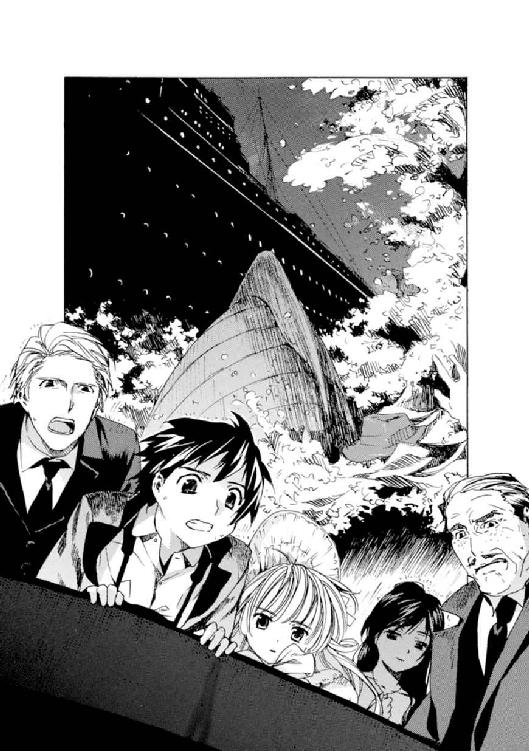
甲板に残った人々の体に激しい雨が叩きつける。
一弥はかたわらに立つネッドと女の顔を見上げた。
ネッドは蒼白な顔をしてぶるぶる震えていた。唇まで真っ青で、言葉を失っていた。
そして、女は......。
女は奇妙に満足げな微笑を浮かべ、消えていくボートを見下ろしていた。ぞっとするほど冷たい目つきだった。
赤い唇を動かし、なにかつぶやく。
誰かに聞かせるための言葉ではなかった。だが一弥の耳にはかすかにその独り言が聞こえてきた。
女はこう言った。
「......だから言ったのに。警告してあげたのに」
ふと、自分を見ている一弥に気づく。と、今度は一弥に向かってつまらなそうにつぶやいた。
「大人っていつも、バカね。自信たっぷりで、わけのわからないことばかりするの」
肩をすくめると、船室へ戻る階段に歩いていった。
「ちょっ......こんなときにそんなことを！ 不謹慎ですよ......！」
一弥の声は届かない。
その細い後ろ姿を、一弥は怒りと驚きをもって見送った。
４
──生き残った五人はもとのラウンジに戻ろうとした。
とぼとぼと廊下を戻り、開け放されたドアからラウンジに入る。
と......。
いちばん最初にラウンジに足を踏み入れた女が、目を見開いた。
ゆっくりと口の前に両手をかざし、声にならない悲鳴を上げる。
続いてラウンジに入ろうとしていた一弥が、怪訝そうに、
「どうしたんですか？」
「あ、あ、あ............」
女が目を閉じた。
それから悲鳴を上げた。
「......きゃああああぁぁぁ！」
ネッドが急いで廊下の向こうから駆け寄ってきた。大声で叫ぶ。
「なんだよ！ どうしたんだよ！」
女がポロポロと泣き始めた。
震えながら細い腕を上げる。ラウンジの中を指差し、
「この部屋、この部屋......」
「なんだよっ？」
「もう、いやぁ！」
一弥は女の横から顔を出した。
そして絶句した。
──ラウンジはついさっきまでとは様変わりしていた。
壁も、天井も、そして床も......ラウンジはこの数分のあいだに、見事なほどに水浸しになっていた。バーカウンターも、テーブルも、酒瓶もそのままに、まるで長いあいだ海底に沈んでいた沈没船のように、壁も朽ち、水を含み、天井からもぽたぽた汚れた水が落ちてきた。
その水浸しのラウンジを、薄暗い洋燈が白々と照らす。
女がヒステリーを起こしたように激しく泣き始めた。ネッドがその横に立ち、オロオロしている。なぐさめようと声をかけると、
「どういうことよ！ 誰か、なんとかしてよっ！」
わめかれて、閉口する。
ネッドが困りながらも、辺りを見回し、
「このラウンジ......。どうしてこうなっちまったんだ？ 壁の、あの文字は......あるけど......」
壁には、さきほどと同じ血文字が躍っていた。白々とした洋燈に不気味に照らされている。朽ちたテーブルが、歩きだしたネッドの足に軽く蹴られるとぐじゃりと潰れた。海水の臭いが残骸からぷんと臭ってきた。床も腐りかけたように柔らかく、一歩歩くごとにぐにゃりぐにゃりと不快な感触を足に伝えてくる。
「......おい」
ネッドが振り返った。ラウンジの真ん中に立ち、呆然とした顔でこちらをみつめている。
ゆっくりとドア付近の床を指差す。
助けを求めるような目つきで一弥たちをみつめると、口を開いた。
「おい......。さっきの、ボウガンで撃たれて死んだオッサンの、死体は、どこだ？」
女がピタリと泣きやんだ。
一弥も驚いて辺りを見回した。
──死体は消えていた。水浸しのラウンジのどこにもなくなっていた。飛び散った血も脳しょうもきれいに消えていた。
女が泣き叫び始めた。
「消えてるやつが怪しいのよ！ きっとあいつがやったのよ！ わたしたちを閉じこめて、死んだフリをして、恐がらせて喜んでるんだわ。ちょっと、出てきなさいよ！ どこにいるの！」
ラウンジを横切り、テーブルの下などを覗きこんでは叫び始める。ネッドがあきれて、
「落ち着けよ。あいつは確かに死んでた。俺、確かめたんだからな。本当だよ」
「じゃ、あなたもグルなんじゃないの！」
ネッドが顔をしかめた。
「......いい加減にしろよ！」
二人が睨みあう。
そこに、あのボートに乗らなかった伊達男が割って入った。
「......争うのはやめたまえ。くだらない」
「くだらないだと？」
「とりあえず、座ろう。わたしは、疲れた......」
五人は顔を見合わせた。
比較的濡れていない椅子を選んで、座る。
ネッドはイライラと落ちつかない様子で貧乏揺すりを始めていた。彼が足を動かすたびに、床に溜まった海水がびしゃびしゃいやな音を立てた。若い女は顔を蒼白にして座りこむと、両手で頭を抱えこんだ。つややかな黒髪がその膝にこぼれ落ちていた。伊達男はやけに静かだった。唇まで紫色に染めて、怯えきった顔をしている。
ヴィクトリカだけが、いつもと変わらず、優雅で落ちついた様子で座っていた。一弥はその顔を見ると、ほっと心が落ちつくのを感じた。
五人は順番に名前を名乗った。
伊達男が口を開いた。
「モーリスだ。ソヴュール王国外務省の幹部だ」
それ以上は語ろうとしない。続いて若い女が名乗った。
「ジュリィ・ガイルよ。職業は......なしよ。父が炭坑を所有しているの」
どうやら金持ちの娘らしかった。モーリスがフンと鼻を鳴らすと、ムッとして言い添える。
「......なによ。働かなくても生きていけるんだから、べつに、いいでしょ」
その言葉に、苦労人らしい舞台俳優のネッド・バクスターがかすかに顔をしかめた。
一弥とヴィクトリカが名乗ると、モーリスはヴィクトリカの名字に聞き覚えがあるらしく、急に態度を改めた。ほかの三人には横柄なままだ。
五人は疲れ切ったように座り、互いの顔をみつめていた。
女──ジュリィ・ガイルが、少し落ちついたように小声でささやいた。
「いったいどういうことなの？ ここはどこ？ どうしてこんなことになったの？」
「まったくだ。俺にもさっぱり......」
「ぼくにもわかりません......」
モーリスは下を見て黙りこんでいる。三人は口々に疑問を口にしていたが、次第に、もの静かなモーリス、そしてそれをじっと観察しているヴィクトリカに注目し始めた。
静かな緊張が部屋に満ちていく。
と、その緊張が極限に達した頃......。
ずっと黙りこくっていたヴィクトリカが、急に口を開いた。
そのしゃがれた、よく通る声で、
「......モーリス」
呼ばれた男は、ビクリとした。
全員が二人を注視する。
モーリスは蛇に睨まれた蛙のように硬直し、ヴィクトリカのつぎの言葉を待った。
ヴィクトリカが口を開いた。
「君、君はさきほど、わたしの友人があの花瓶に触れようとしたとき、警告したが」
「あ、ああ......」
「なぜその仕掛けを知っていたのだね？」
モーリスは唇を嚙んだ。
ジュリィとネッドも小声でアッと叫んだ。
水浸しの薄暗いラウンジに沈黙が降りた。
ぴしゃん......ぴしゃん............。
いやな水音が、静かな中で、響く。
答えないモーリスに、ヴィクトリカは続けて、
「わたしたち......この若者四人以外は、どうやら知っていたようだ。年輩の男八人だけがわたしたちにはわからない言葉を吐いていた。その中で生き残ったのは、モーリス、君だけだ。君はこの船に乗った若者たちに説明するべきではないのかね？」
モーリスは唇を強く嚙み続けている。
ぴしゃん......ぴしゃん............。
水音だけが響く。
──やがてモーリスは観念したように顔を上げた。くぐもった小声で、
「......同じだからだ」
「なにがだね？」
「十年前の、あのときと。だから知っていた」
ゆっくりと上げられた顔は、死人のように蒼白だった。紫色に変色した唇を開き、モーリスは言った。
「この船は、十年前にこの地中海に沈んだ〈QueenBerry 号〉なのだ。つまり、また〝あれ〟が始まったのだ。だからわたしは知っていた」
モノローグ─monologue 2─
１
誰かに体を揺すられているのに気づいた。
目を開けると、漆黒の瞳が心配そうに覗きこんでいた。瞳と同じ、濡れたように黒いロングヘアが床に垂れていた。
同じぐらいの年齢の、きれいな少女だった。
「うっ......！」
起きあがろうとしたら、頭が痛くて、思わずうめいてしまった。少女は「あっ......！」とつぶやいて、細い両手で支えてくれた。
ここは、どこ......？
どうしちゃったんだ？
頭を押さえながら辺りを見回した。そこは広いラウンジだった。アンティークらしい上質な丸テーブルと椅子があちこちに置かれていた。隅にはバーカウンターがあり、酒瓶がたくさん並んでいた。小さな舞台も用意されていて、楽譜が途中のページを繰られたままになっていた。
木目のつやつやと輝く床に、同じぐらいの年齢の少年や少女がたくさん倒れ伏していた。十人以上いるようだった。どの子も頭を押さえて、頭痛を訴えていた。
その子供たちの人種がさまざまなことに気づいた。肌の白いものが圧倒的に多い。でも、いかにもゲルマン風の金髪碧眼の大柄な少年や、地中海育ちに見える日に焼けた巻髪の少年が入り混じり、国籍がバラバラなことが見て取れた。黄色い肌をした中国人らしき小柄な少年もいる。浅黒い肌をした小柄な少年と、同じ肌色の少女もいたが、二人は互いがかけあう言葉が異国のものだと気づいて、戸惑っているようだった。
彼らが発する、頭痛を訴えるらしいわめき声は、英語とフランス語はわかるけれど、早口の異国の言葉も多くてなにを言っているのかわからなかった。
かたわらに黄色い肌の少年がやってきて、起きあがろうとするのを手伝ってくれた。フランス語で「ありがとう」とお礼を言うと、彼は理解したようにうなずいた。
「ここは、どこだ？」
はっきりとした英語の発音が響いた。大声だったので、子供たちはみんなそちらを振り返った。
白人の少年が立っていた。瘦せて、髪は短い。そばかすの浮いた肌はよく日に焼けて健康的だった。
「へんな馬車に乗った大人に捕まって、飯を食わされたら眠くなった。気づいたらここにいたんだ。頭も痛いし......どういうことだよ？」
立ち上がって、自分も同じだと言うと、その少年は不安そうに、
「みんなも、そうなのか......？」
英語がわかる子供だけがうなずいた。
そばかすの少年はラウンジを見回した。部屋中をイライラと歩き回ってから、顔を上げ、ドアをみつめた。
ドアノブに手を伸ばす。
......開ける。
つられてドアに近づいて、外を覗いてみた。外は長い廊下だった。眩しすぎるほど明るい洋燈に、豪奢な木の壁と、深紅の絨毯が照らし出されていた。
そばかすの少年が、不安そうに顔をしかめてこちらを見た。
「なぁ......」
半信半疑だというように首をかしげながら、
「揺れて、ないか？」
「......そうだね」
言われてみると、床が左右にゆっくり揺れている気がした。規則正しく、数秒ごとに横に揺れ続けている......。
ここはどこだ？
どうしてここにいるんだ？
と、頭を押さえていた少女がふいに顔を上げた。甲高い声で、叫ぶ。
「地震じゃない？ そうよ、地震が起こってるのよ！」
ラウンジに動揺が走った。
あわててテーブルの下に入ろうとする子供もいた。パニックになりかけたとき、さっき手を貸してくれた中国人の少年が、
「......ちがう」
英語で言った。美しい発音だった。
全員が彼のほうを振り返った。
「この揺れは、地震じゃない」
「......どうしてそう言えるんだよ？」
そばかすの少年が聞き返す。中国人の少年は落ちついた声で、
「ここは、地上じゃないからだ」
「なんだって？」
「この揺れは......波だよ。ぼくたちは海の上にいるんだ。この部屋はおそらく船室の一つだ。これは地上の建物じゃなくて、船だと、思う」
ラウンジはしんと静まり返った。
２
そばかすの少年が、頭痛から回復した数人を連れて廊下に出た。その中にはさっきの中国人の少年と、最初に起こしてくれた黒髪の少女も混ざっていた。
廊下は洋燈の灯りに眩しく照らされていた。深紅の絨毯はこれまで踏んだことがないぐらい上等のもので、一歩一歩歩くごとにふわふわと沈み、足を取られて転びそうだった。
そうつぶやくと、中国人の少年が、
「うん。きっとここは、船内でも上のほうの階なんだよ」
「どうしてだよ？」
「こういう客船は、上の階のほうが、高い船賃を払って豪華な船旅を楽しむ、一等船客のために使われるものなんだ。だからラウンジも客室も、廊下までも豪華なんだよ」
「へぇ......」
「下の階に行くほど、二等船客や三等船客を詰めこむ安い客室や、船員のための施設になっていくんだ。だから照明もけちられるし、絨毯も古びたものになる。もっと下に行くと、貨物室やボイラー室になる。同じ船とは思えないぐらい薄汚い風景になるんだよ」
「......やけに詳しいな」
そばかすの少年が疑わしそうにつぶやいた。すると中国人の少年は苦笑した。
「おいおい、疑わないでくれよ。ぼくはただ、三等船客としてこういった船に乗った経験があるんだよ」
「ふぅん......」
歩きながら、互いに自己紹介することになった。
そばかすの少年はヒューイと名乗った。中国人の少年の名はヤンだった。
「君は？」
聞かれたので、答えた。
「アレックスだ。よろしく」
「フランス人なの？ いや、最初にフランス語を話したし、英語に少し訛りがある」
「いや、ちがう。ソヴュールだよ」
「そうか。あの国の公用語はフランス語だものね」
黒髪の少女は英語もフランス語もわからないようだった。でも、みんなが自己紹介しているのはわかったらしく、自分の顔を指差して、
「リィ」
それから手の指で、十四歳なのだと説明した。
──ヤンが説明したとおり、豪華なラウンジのあった階は船内でも上のほうだったらしく、階段をみつけて上がると、すぐに船の甲板に出ることができた。
一人、また一人と甲板に出る。使いこまれた木目の甲板は、少年たちが上がってくるたびコツコツと硬質の音を立てた。
上がってきた少年たちは......全員、呆然と立ち尽くした。
そこは本当に海だった。
夜の海......。
街では考えられないぐらいの濃い闇が落ちて、黒い波がぽちゃり、ぽちゃりと揺れていた。遠くに青白い月が上がり、海の上に一筋の、光のラインを浮かび上がらせていた。見渡す限りの暗い大海原。そこにはこの客船以外にはなんの姿もみつけることはできなかった。
少年の一人が甲板を走り、
「お───い！」
叫んだ。
「誰か、いないかー！ 助けてくれ──────！」
波の音だけが静かに寄せては返すばかりだった。
もう一人、ハンガリー人の少女も走り出した。大柄でむっちりと肉づきのいい少女だった。彼女が手すりによりかかり、叫ぼうとしたとき......。
──ヒュン！
妙な音がした。
風を切るような音に続いて、少女の甲高い悲鳴が響いた。
ヒューイがあわてて、
「どうしたんだ？」
「なにかが顔をかすったわ。このへんを踏んだら、あっちからなにかが飛んできて、海に......」
少女の顔に、ヒューイが手を伸ばす。
その手にべったりと鮮血がついたのが、暗い中でもはっきりと見えた。
少女の右頰になにかが削り取ったような浅い溝が走り、そこから血が滴り落ちていた。それに気づくと少女本人が悲鳴を上げてへたりこんだ。
黒髪のリィと二人で、少女を助け起こす。
ヒューイたちが少女の指差した方向を調べていたが、暗いこともあってなにが飛んできたのかわからなかった。
──操舵室に入っていたヤンが、「ダメだ」と首を振りながら戻ってきた。
「舵が壊れてる。いや......壊されてる」
「どうしてだ？ 俺たち、どうしてここにいるんだよ？ それに、この船には俺たち以外に人間の気配がないぜ？ どうして子供しかいないんだよ？」
叫びだした少年に、ヤンが困ったように首を振った。
「......わからない」
立ち上がったヒューイが、
「このまま船にいても遭難してしまうだけだぜ？ そうだ、無線は？ こういう船って無線があるだろう？」
「そうだな。おい、アレックス......無線室って、確か船首のほうにあるんだよな」
ヤンに聞かれたが、こういった船に乗るのは初めてなのでわからなかった。首を振ると、ヤンとヒューイが、
「あっちにあるはずだ......！」
二人で走り出した。
しかし、すぐにうなだれて戻ってきた。
「どうしたの？」
「ダメだ......。やけに大きな煙突があって、通路を遮断されてるんだ。この船尾から船首には、甲板をつたっては行けないよ。多分、飾り用の煙突だと思うけど......それにしては大きすぎる。まるでわざと大きく造ったみたいだ。ぼくたちが無線室に行けないように......」
「じゃ、どうすれば......」
ヒューイが顔を上げた。
「方法はあるさ。船の甲板じゃなくて、一度中に戻るんだ。階段を降りて、廊下を船首方向に向かって歩いて、向こう側の階段を上がればいい。そしたら、反対側に行ける。無線で海上救助隊を呼ぼう」
「そうだ。きっとすぐだよ」
ヤンもうなずいた。
腕にふと、柔らかな感触がした。リィが不安そうにくっついてきていた。言葉は通じないけれど、だいじょうぶだよ、というようにうなずいてみせる。
頰から血を流すハンガリー人の少女を、両側から支えながら、また階段を降りていった。
廊下は相変わらず洋燈の灯りに眩しく照らし出されていた。柔らかな深紅の絨毯が、さきほどまでとはちがって感じられた。血の色のようにどす黒く思えてしまう。ハンガリー人の少女が静かに泣き始めた。リィと顔を見合わせ、彼女を支える腕にいっそう力を込めた。
もとのラウンジに戻ると、頭痛から回復したらしい少年たちが、怪我をした少女をみつけてギョッとした。
ラウンジでは残った少年たちがそれぞれ椅子に座り、不安そうにうつむいていた。シャンデリアに明々と照らし出されたどの顔も、青白く、瞳は暗かった。
立ち上がると口々に、
「なっ......」
「ど、どうしたんだよ」
こちらに詰め寄ってくる。ヒューイがそれを押しとどめた。
「......いま説明するよ」
ヒューイが代表して、甲板で起こったことを説明した。それから、みんなで無線室のある船首のほうに向かおうと提案すると、反対するものはなく、力なくうなずいた。
簡単に自己紹介をした。名前と年齢と、国籍。どうしてこの船にきてしまったのか。
全員が食い違っていることが一つあった。国籍だ。
イギリス、フランス、ドイツ、オーストリア、ハンガリー、イタリア、アメリカ、トルコ、アラブ、中国、そして......ソヴュール。
言葉の通じない相手も、リィを含めて何人かいたが、どうやら十一人いる少年少女のうち、同じ国籍の者はいないようだった。まるで世界中から一人ずつ集めたようだ。
そして、共通点もあった。
全員が孤児だったのだ。このまま消えても誰も捜しにこない。
３
再び廊下を歩きだした。今度は、十一人全員で、ぞろぞろと。同じ廊下をさっきとは逆の方向に進んでいく。
不安のあまり、頭痛がぶり返しそうになった。思わず頭を押さえて低く呻くと、リィがその様子に気づいて立ち止まった。
「アレックス......」
リィは首からかけたハートのペンダントを指差した。ぴかぴかしたエナメルの、ピンク色をしたペンダントだった。手をつかんでちょっと強引にそのペンダントに触らせると、瞳を閉じて、リラックス、というようなジェスチャーをしてみせた。
ハートのペンダントはリィのおまもりらしい。これがあるからあなたも大丈夫、と言ってくれているようだった。
大きな黒い瞳がおだやかな輝きをたたえている。優しい子だ、と思った。感謝するようにうなずいて、再びみんなについて歩きだした。
先頭を歩いていたヒューイとヤンが、急に大声を上げた。みんなビクリとして足を止めた。
「......ふさがってる」
ヒューイがつぶやいた。
「どういうこと!?」
頰を怪我しているハンガリー人の少女が、みんなをかき分けて前に進んだ。二手に分かれたので、いちばん後ろに立ったままでも、そこにあるものがよく見えるようになった。
壁、だった。
天井までの黒い壁に、廊下が塞がれていた。これでは、通れない......！ ヤンが顔色を変えて振り返った。廊下を走り出す。
「ヤン!?」
叫ぶと、こちらを振り返って、
「この階の廊下は、ここだけじゃないはずだ。船首の側に行ける廊下がないか、確認しないと！」
全員がうなずいて、ヤンの後を追った。
しかし......廊下はすべて同じ黒い壁で仕切られていた。いちばん初めに、ハンガリー人の少女がしくしく泣き出した。つられて泣きそうになる子も出始めた。
ヒューイとヤンが小声で相談を始めた。それから顔を上げると、
「みんな、エレベーターを捜そう！」
全員が顔を上げた。
ヒューイは力強く言った。
「下の階に降りるんだ。そっちはこんな壁で仕切られていないかもしれない。いいな？ よし、エレベーターを捜すぞ」
ヤンが廊下の一方を指差して、
「こっちにあった」
二人は有無を言わせず、先導して歩きだした。
ひときわ明るい一角にエレベーターホールがあった。不気味に感じられる鉄の檻が一つ、黒く輝いていた。そのとなりに白いタイルが輝く階段もあったが、そちらはなぜか照明が切れていて、闇を落としたようにそこだけ暗かった。
ヒューイが少年たちを見渡して、
「階段もあるけど、君たち、どうする？」
全員が顔を見合わせた。
暗い階段を恐がったのか、我先にエレベーターに乗りこみ始めた。ぎゅうぎゅうに詰めこまれた少年たちを、ヒューイはポカンとして見ていたが、気を取り直したように言った。
「あと二人ぐらい、乗れるか......。ヤン、アレックス、彼らを誘導して一つ下の階に連れていってくれ」
「ヒューイ、君は？」
聞き返すと、リィの手を引っ張って階段のほうに歩きだした。
「ぼくとリィは、階段から行くよ。じゃ、下で会おう」
リィがこちらを振り返って、ぱたぱたと手を振った。かわいらしい動きだった。ヤンに目で合図されて、あわててエレベーターに乗りこむ。
ガタン、ガタン──！
無骨な音を立てて鉄格子が閉まった。
ぶぉん、ぶぉん、と音を立てて、エレベーターがゆっくりと下降していく。
照明灯に白々と照らされて、誰もが緊張感をはらみ、黙っている。
と、そのとき......。
「キャアァァァ!!」
少女の悲鳴が響いた。リィの声だ。
ヤンがあわてて鉄格子を開こうとした。エレベーターが一階下で止まり、しばらく無骨な音を立てて揺れてから、鉄格子がゆっくりと開いた。
全員、転がるように飛び出した。
「リィ!?」
「どうした、ヒューイ！」
暗い階段のほうに一歩踏み出す。
あまりに濃い闇が落ちているので、戸惑って、声を出して呼ぶだけになる。上のほうからかすかにしゃくり上げるような声が聞こえてきた。
「......リィ!?」
駆け上がろうとすると、ヤンがエレベーターの中から非常用らしい小さな懐中電灯をみつけて、追ってきた。スイッチを入れて、階段の上の闇を照らす。
懐中電灯の、白く丸い、おぼろげな光に、死体が照らし出された。
全員が低い悲鳴を上げ、立ち尽くした。
......ヒューイが倒れていた。
階段の踊り場に、壊れたマリオネットのように体を投げ出していた。うつぶせの姿勢で、左手は体の下に隠れ、右手は姿勢を正して腰にぴったりくっつけたようになっていた。
そのかたわらに、リィが腰を抜かしたようにしゃがみこんでいた。
「どうしたんだ！」
ドイツ人の少年がリィを怒鳴りつけた。大柄で、十四歳だという実年齢よりもずっと大人に近い体格をした威圧的な少年だった。
怒鳴られたリィは、しかし、説明することができなかった。身振り手振りで、ヒューイを追いかけて階段を降りたら、ここに倒れていた、とジェスチャーする。
ドイツ人の少年が、ドイツ訛りの英語で苛立ったように叫んだ。
「そんな身振りじゃ、わからん！」
ヒューイに駆け寄り、脈を取ろうとした。こちらに向かって投げ出されたヒューイの右手を取り、手首の内側に指の腹を当てる。
──脈は完全に止まっていた。
「どうして死んだんだ！」
誰かの声に、リィが、わからない、というように首を振った。
真っ暗な階段には、ヤンが照らす懐中電灯の丸い光だけが輝いていた。と、ヤンが驚きのあまり取り落としてしまったらしく、その丸い光が下に落ちて、カン、カラララ......と階段を転がり落ちていく音がした。階段は再び真っ暗になった。
静寂は、死のように重い。
と、誰かがふいに甲高い悲鳴を上げた。
「やだ！ もうやだ！ 帰る......ッ！」
あの、頰に怪我をしたハンガリー人の少女の声だった。続いて、階段を駆け下りる音がした。あわてて彼女を追おうとする。ヤンもハッと息を呑んで、
「おい、どこに行くんだよ！ はぐれるな！」
返事はない。ヤンはさらに叫んだ。
「ぼくたち、一緒にいないと......危ないよっ！」
一階下の廊下にたどりつく。辺りを見回すと、闇雲に走り去る少女の後ろ姿が見えた。廊下の角を曲がり、姿を消してしまった。
「おいっ......！」
続いて追ってきた少年たちも、顔を見合わせた。
放っておくわけにはいかない......。このエレベーターホールを集合場所に、みんなで彼女を捜してその階を歩き始めることにした。
４
廊下は少し暗く感じた。
たった一階下にきただけで、最初にいたあのラウンジのある廊下より照明が少し落とされて、廊下の木目も、節が目立つ木材が使われているのがわかった。深紅の絨毯も、使い古されているのかところどころ黒ずんでいて、人々がよく歩く真ん中辺りが毛羽立って生地が薄くなっていた。
一人用の客室がずっと続いていた。同じ場所をぐるぐる回っているような錯覚を覚えるほど、廊下は変化なくただ続いていた。
一人で、柔らかすぎる絨毯を踏んで歩いていると、次第に不安が増してきた。
いやな、予感がする。
どきどきと心臓が脈打つ。
つぎの角を、曲がりたくないなぁとなぜか思う。足が勝手に止まりそうになる。自分を奮い立たせて、その角をむりやり、ゆっくりと、曲がる。
そこに......。
捜していたハンガリー人の少女が立っていた。一人でポツンと。ビックリしたように目を見開いて硬直している。その目と、目があった。そらそうとしたけれどできなかった。
......少女は死んでいた。
知らない間に、口が開いて、自分のものとは思えないぐらい大きな悲鳴が響き渡った。
彼女はそこに立っているのではなくて、タクティカルナイフで喉を正面から貫かれて、廊下の壁に串刺しにされていたのだった。ふらふらと近づいて、なんとかしなければと、手を伸ばす。
震える手で触った途端、壁にめりこんでいたナイフの刃先がはずれて、腕の中に死体が落ちてきた。
重たかった。ずしりと重量感があった。
悲鳴を聞きつけて、つぎつぎに少年たちが集まってきた。角を曲がって姿を現しては、死体を見て大声を上げる。ヤンがおそるおそる近づいてきて、
「アレックス......だいじょうぶか？」
力なくうなずいた。
集まってきた子供たちは顔を見合わせ、震えるばかりだった。やがて、体格のいいドイツ人の少年が、怒りにかられたように大声を上げた。
「誰が殺したんだ？」
「さぁ......わからない」
ヤンの答えに、激昂し、
「わからないだと!?」
「だって、誰もナイフなんか持っていなかっただろう。全員、手ぶらでこの船に乗せられていたんだ。それに、こんな軍隊用の無骨なナイフが、客船にあるものか」
「じゃ......？」
顔を見合わせる。
遅れて、リィがその場所にやってきた。少女の死体をみつけると、息を呑み、手のひらで口を押さえた。
静かなその場所で、死体を抱えながら、一つ、誰にも言えないことがあった。
廊下の端にあるアンティークの棚。引き出しが少し開いていた。ちょうど立っている位置から、引き出しの中身が見下ろせた。
中には小型拳銃が入っていた。銃身が不吉な漆黒に輝いている。
武器は、ある。
この船にあるんだ。
でも......。
どうして..................？
第三章 幽霊船〈QueenBerry 号〉
１
水浸しのラウンジには重苦しい空気が立ちこめていた。一人、超然としているのはヴィクトリカで、あとの四人はうつむいたり、互いを睨んだりを繰り返していた。
ぴちゃん、ぴちゃん......。
海水が染みこんだ壁や天井から、澱んだ色をした水滴が床に落ちてくる。湿った空気がラウンジ全体を包む。
「......この船にはかつて、十一人の少年少女が乗せられたんだよ。〈野兎〉だ」
モーリスはそううめくと、子供のように膝を抱えて震えだした。
残りの四人が顔を見合わせた。
と、ジュリィ・ガイルが勢いよく立ち上がり、モーリスに迫った。
「......それ、どういうこと？」
ネッド・バクスターが低い声で言った。
「おい......。そいつらはどうなったんだよ？」
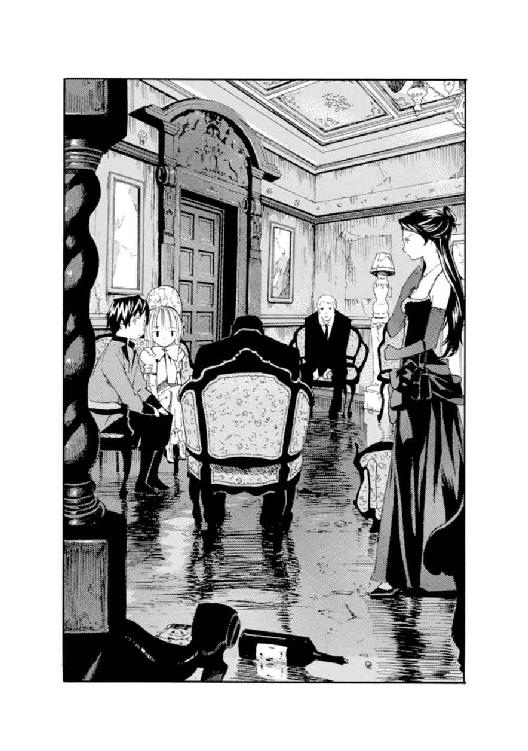
「......死んだよ。殺しあったんだ」
「ど、どうしてだ!?」
「そういうふうに仕組まれていた」
モーリスはつぶやくと、おそるおそる顔を上げた。
ラウンジの壁には、さきほどと同じ血文字がおどろおどろしく躍っていた。それを見上げるモーリスの瞳には、怯えと絶望が揺れていた。色をなくした唇を開き、
「これ以上は話せない。わたしの職務規定に違反する。だが......とにかく、この船〈QueenBerry 号〉は、その運命の夜が明けると、少年少女たちの遺体が回収され、海に沈められた。我々が回収作業を終えて撤収した直後、海上救助隊が駆けつけて船を確認したが、もちろん内部は無人だった。少年少女用のトラップがいくつか残っていたことと、争った形跡もあったことから、彼らは船内を調査しようとしたが、浸水が進んでいたため叶わなかった。君、君が......」
モーリスは一弥を指差した。
「同級生の少女から聞いたという怪談は、この十年前の事件が元になっているのだ。君から、〈QueenBerry 号〉が繰り返し海上に現れ、人々を誘いこむという話を聞いたとき、わたしは確信した」
モーリスは暗い声を絞り出した。
「......この船が、幽霊船だと！」
ネッドとジュリィが顔を見合わせた。二人とも半信半疑ながら、不安そうに表情をひきつらせている。
ネッドがテニスボールをつかんで放り上げた。落下してくるボールを受け止めては、また放り上げる。ジュリィのほうは立ち上がってラウンジを行ったり来たりし始めた。
モーリスが続ける。
「この船は、死んだ少年少女の恨みが海上に押し上げた幽霊船なのだ。あれからちょうど十年だ......」
話すうちに、肩を細かく震わせ始める。
「彼らに死をもたらした大人たちが集められ、こうして死んでいった......」
モーリスの顔は蒼白だった。
「我々も死ぬんだ......」
震えが全身に行き渡り、モーリスは絶望的な表情で、
「無線室になんてたどり着けるものか！ 我々は、あの子供たち──〈野兎〉に、呪われているんだよ！」
「......ぷっ」
誰かが吹き出した。
モーリスがキッとこちらを睨んだので、一弥はあわてて首を振った。かたわらを見ると、ヴィクトリカがうつむいて座っていた。まるで黄金の糸のような長い金髪に隠され、顔は見えない。
その細い肩がカタカタ揺れていた。
「......おーい、ヴィクトリカ？」
「ぷくくくくっ！」
へんな声を出すなぁ、と一弥が金髪に手を伸ばし、かきあげてみると、ヴィクトリカはぽろぽろ涙を流して......笑っていた。
「わはははは！」
「おい、君！ なにがおかしいのだ！」
ネッドたちもそれぞれ、テニスボールをいじることと、うろうろ歩くことをやめ、驚いたように、笑いの発作を起こしたヴィクトリカをみつめた。
ヴィクトリカは優雅な仕草で鞄からパイプを取り出した。ポカンとしてみつめている大人たちには構わず、火をつけてぷかりと一服吸う。
ゆっくりと煙を吐きだし......その煙を、モーリスの顔めがけて吐きだした。モーリスは「ゲホッ、ゴホッ、ゲホホッ......」と咳きこんだ。目尻に浮かんだ涙を指の腹で忙しく拭いている。
しばらくパイプをくゆらしていたヴィクトリカは、やがて、空いているほうの手をレースの衣装のポケットに入れた。
ポケットから出てきた小さな手には、一通の封筒が握られていた。一弥にも見覚えのある、それは......ヴィクトリカがロクサーヌのヨットでみつけた招待状だった。
ネッドがそれを見て、
「あ、俺もそれ、受け取った」
「わたしもよ。鍵をかけた車に入ってたの」
「......一つ聞くがね、モーリス」
ヴィクトリカは、三倍も年上の外務官僚に向かって笑いながら言い放った。
「君、思うかね？......幽霊が招待状なんてものを書くと」
「!?」
モーリスはハッと息を呑んだ。
一弥たちも我に返った。互いの顔をみつめあって、夢から醒めたように目をぱちくりしている。
モーリスは口を開いた。反論しようとして、自信なさそうに首をかしげる。
「だが......しかし......それにしたって、おかしいじゃないか。この船は確かに海底に沈んだのだ。それに、あの壁の血文字。停電したのはほんの十秒足らずのあいだだったんだぞ！ 人間に、そんな短時間で、大きな字で長い文章が書けるものかね？ それに、このラウンジだって......さっきとぜんぜんちがう！」
澱んだ瞳に涙が浮かんでいる。
むきになって叫んだ。
「説明してみろ！ 幽霊じゃなきゃ、なんなんだ！」
「そりゃ、人間だろう。君」
ようやく笑い終わったヴィクトリカが、つぶやいた。静かな声だった。ネッドは不安そうにテニスボールを握りしめていた。ジュリィはくせなのか、首に下げたハートのペンダントをいじりながらうろうろ歩き続けていた。
五歩歩いては、ターン。また五歩歩く。無意識だが正確な動きだった。ヴィクトリカはそれをチラリと見て、かすかに顔をしかめた。
ペンダントはハート形をしたエナメルだった。かなり古びて、ところどころ塗装がはげていた。ずいぶんと子供っぽいデザインで、彼女の深紅のドレスには合わなかったが、ジュリィはそのペンダントを大切そうに指の腹で撫で続けていた。
「人間にできることばかりだよ、君。ちょっとは考えたまえ」
「なんだと？ どういうことだ」
モーリスはずいっと顔を近づけて、ヴィクトリカに迫った。ヴィクトリカはいやそうに身をよじると、一弥のほうを振り返った。機嫌悪そうに、
「久城、君、説明しろ」
「えっ、なにを？」
「混沌の再構成」
「......ぼくがぁ？」
澄んだ緑の双眼が一弥をひたと見据えた。
わずか、三秒。一弥は眼力戦に負け、しどろもどろに、
「ええとですね、混沌、もしくはこの世の謎をですね、その数々を、つまり欠片ですね、鍋に全部入れて煮こんで、そぅ、闇鍋ですね。お椀についで、結局、再構成ということですね、そうすると見事に謎が解けるけれど手柄は警部に横取りされると............ぼく、なんの話をしてるんだっけ？」
「もう、いい。中途半端な秀才め」
「ヴィッ............!?」
口の中でもごもごと、中途半端だったら留学できないんだぞ、とつぶやく一弥を置いてきぼりに、ヴィクトリカは話し始めた。
「まず、幽霊はだね、君たち。招待状など書かない。わかるかね？」
ネッドがまずうなずいた。続いてジュリィが、最後にモーリスがいやいやうなずく。
ヴィクトリカは招待状を振りかざして、
「何者かがこれを書き、我々をこの船に集めたのだ」
「しかし君、この船は沈んだはずなのだぞ！」
「これが十年前に沈んだ〈QueenBerry 号〉だと、なぜわかる？」
静かな声に、モーリスはなにか言いかけ、口を閉じた。ヴィクトリカは続けて、
「ここで一つの仮説をだね、提案しよう」
全員が固唾を呑んで、この自信満々でしゃべり続ける小さな少女を見守った。ヴィクトリカは落ちついた声で言い放った。
「〝これは、昔を知る者が当時そっくりの船を再現したものである〟と」
ラウンジはしんと静まり返った。
ネッドとモーリスが顔を見合わせて黙りこくった。一弥もキョトンとしていた。
水浸しのラウンジに、ぴちょん、ぴちょん......と、水音だけが響いている。
やがてジュリィが我に返った。おそるおそる聞く。
「それ、どういうことよ？」
ヴィクトリカは彼女のほうを振り返った。相変わらず自信満々の態度だ。いつものように低いしゃがれ声で説明を始める。
「君、これはきわめて単純な、論理的解釈だ。まず〈QueenBerry 号〉だが、これは十年前に沈んだらしい。もしそれが事実であるなら、いま我々が乗っているこの船は、よくできたレプリカなのだ」
「はぁ......？」
「そう考えればすべては反転する。幽鬼現象じみていたことも説明がつくようになるが、どうだね？」
ジュリィは眉間にしわをよせ、考えこんでいた。困り切った声で聞き返す。
「えと、つまり......？」
ヴィクトリカは面倒くさそうな顔をした。パイプをくゆらしながら、だるそうに、
「君たち、鼻を使ってみたまえ」
一弥たちはクンクンと鼻をうごめかせた。鼻を使えと言われても、ヴィクトリカが吸い始めたパイプから漂う匂いに邪魔されてよくわからない。
と、ヴィクトリカが言葉を続けた。
「......塗りたてのペンキの臭いがしないかね？」
「あっ!?」
一弥は最初に感じたシンナーのような臭いを思い出した。ラウンジ全体に充満していたあの臭い。頭痛がひどかったのも、睡眠薬だけでなくそのせいだったのだろう......。
「そして、わたしが気にしていた葡萄酒。久城、君、覚えているかね？」
聞かれて一弥は思い出した。さっき、この船が幽霊船かもしれないと言い出した自分にあきれ顔になり、ヴィクトリカが見せようとした葡萄酒の瓶と、それを注いだグラス。その直後に停電騒ぎがあり、すっかり忘れていたが......。
「あれと同じ葡萄酒の瓶が、確かにこのラウンジのバーカウンターにも、あるが......」
ヴィクトリカはバーカウンターのほうを指し示した。全員がそちらを振り返った。カウンターにはぎっしりと酒瓶が並んでいた。
「わたしが栓を抜いてグラスに注いだ葡萄酒が、また元に戻っている。おかしくはないかね？」
「あっ......」
一弥がつぶやいた。
確かに、ヴィクトリカが栓を抜いた葡萄酒も、中身を注いだグラスも見当たらなかった。カウンターに近づいて調べてみると、同じラベルを貼られた、まだ栓の抜かれていない瓶があった。
ヴィクトリカが一弥を手招きした。葡萄酒の瓶を受け取ると、
「これはだね、一八九〇年、つまり三十年以上も前に醸造されたソヴュール産の葡萄酒だ。おそらく、十年前に沈んだ本物の〈QueenBerry 号〉に乗せられていたため、忠実に再現しようと、犯人はこの葡萄酒を載せたのだろう。だが、しかし......」
ヴィクトリカは肩をすくめた。栓を抜いて、手近にあった汚れたグラスにとぽとぽと注いでみせる。さきほどと同じく、鮮やかな赤紫色の液体が瓶から流れ出てきた。
「中身はにせものだ。こうやって注ぐと、作りたての葡萄酒特有の鮮やかな色をしているのがわかる。古い葡萄酒はもっとにごった色をしているものなのだよ。そして香りもまた......」
グラスを持ち上げ、鼻に近づける。
「ほら......新しい葡萄酒のものだ」
「......どういうこと？」
一弥は聞き返した。ヴィクトリカはラベルを指差してみせた。
「この醸造元は、一九一四年の夏、開戦された世界大戦の戦火で焼け落ちたのだよ。いまではもう手に入らない。おそらくそれで、ラベルだけを再現して新しい葡萄酒のラベルと貼り替えたのだろう」
四人は顔を見合わせた。誰もが不安そうな顔だった。
「......し、しかし！」
モーリスが叫んだ。
「この壁の血文字は!? 水浸しのこのラウンジは!? 死体はどこに消えた！」
「......わめかなくても聞こえるよ、モーリス」
ヴィクトリカは顔をしかめた。
それから椅子から立ち上がり、ちょこちょこと歩きだした。
ラウンジのドアを開けながら、
「おそらくこの部屋は、最初にわたしたちがいたラウンジではないのだ」
「!?」
「わたしたちは、一度、船の甲板に出た。そして戻ってきた。同じ廊下を通り、当然のようにこの部屋に入ったが、それはなぜだ？」
ジュリィが自信なさそうにつぶやいた。
「だって、ドアが開いていたからよ。ほかの部屋は閉まっていたから......」
「その通り。では......おい、久城」
ヴィクトリカに呼ばれて、一弥は立ち上がった。ヴィクトリカは廊下に出ると、指で合図をして、
「君、同じ側のドアを順番に開けてみたまえ」
「うん......」
一弥はとなりの部屋を開けた。豪華な一等船室だった。天井からシャンデリアが垂れ下がっていた。大きな天蓋付きベッドと、柔らかなソファ。テーブルクロスもクロゼットも豪奢なものだった。
さらにとなりのドアも開ける。まったく同じ造りの船室だった。
何室かドアを開けてみるが、同じ部屋が続いていた。だんだん飽きてくる。一弥は一度、もとのラウンジのほうに戻った。そして、いま開け続けたのとは反対側の、一つとなりのドアを、開けた。
「............!?」
そこに展開された光景に、思わず息を呑む。
ヴィクトリカのほうを振り返り、口をパクパクさせると、ヴィクトリカはわかっているというように「......うむ」とうなずき、残りの三人を手招きした。
全員でそのとなりの部屋を覗きこむ。
......そこには、まるで写真のようにまったく同じラウンジがあった。テーブルとバーカウンター。小さな舞台。そして......。
壁に血文字。
開けられた葡萄酒の瓶と、中身が注がれたグラス。
床には、ボウガンの矢で眉間を貫かれた、太った男の死体。
ジュリィとモーリスが叫び声を上げた。
振り向くと、ヴィクトリカは満足そうにうなずいていた。
「最初にいたのは、こっちの部屋だ。誰がドアを開け閉めし直したかまではわからないが。これは簡単なトリックだったのだよ、君たち」
２
──五人は、床に死体が転がるもとのラウンジに入った。
水浸しだったほうと比べると、シャンデリアの輝きが眩しすぎるほどで、かえって落ちつかなかった。適当な椅子をみつけて座り、互いの顔をみつめあう。
ヴィクトリカは血文字の躍る壁を見上げていた。睨みつけるような鋭い視線だった。やがて彼女は、壁のかたわらにあるバーカウンターを指差してみせた。
「久城、君、その中を覗いてみたまえ」
「えっ......？」
「混沌を再構成した結果、導き出した答えだ。おそらくそこに、最初に覗いたときはなかったものがあるはずだよ、君」
一弥は戸惑いながらも立ち上がった。バーカウンターに近づいて、言われたとおり、その中を覗きこんでみる。
そっと隠すように、くしゃくしゃに丸められた何かが落ちていた。大きな布......？ いや、ちがう。これは......。
「壁紙だ！」
一弥は思わず叫んだ。ジュリィとネッドも、その声に立ち上がって、一緒にバーカウンターの中を覗きこんだ。
「あっ！」
「これって、もしかして......？」
そこに丸められていたのは、壁と同じ模様を施された壁紙だった。くしゃくしゃにされて無理やり押しこまれている。
遅れてバーカウンターに近づいたモーリスが、叫んだ。
「こ、これは......確かに、壁紙だ!?」
「そうだ」
ヴィクトリカは落ちついてうなずいた。
「いいかね、モーリス。確かに十秒ほどの時間で、壁に長い文章を書くことはできない。しかし、あらかじめ書かれていた文字の上から、張られた壁紙を一気に剝がして隠すには、十分な時間ではないかね？」
ネッドがほうっ......とため息をついた。
そのとなりでジュリィが、ハートのペンダントをいじりながら首を振った。長い黒髪がさらさら揺れた。
「なるほどな」
「なーんだ、わかってみれば簡単ね」
ネッドはまたテニスボールをいじり始め、ジュリィは五歩歩いてターンを繰り返し始めた。落ちつかないのだろう。
その様子を、モーリス一人が肩を震わせて睨みつけていた。床に仁王立ちし、一人、一人を順繰りに見回していたが、やがてとつぜん叫んだ。
「おい、おまえら！」
ヴィクトリカが顔をしかめた。
「......なんだね、その言い方は」
モーリスは壁際まで後退すると、おそろしそうに、一弥、ネッド、ジュリィ、そして最後にヴィクトリカの顔を順番に見回した。
それから、誰にともなく震え声で聞いた。
「誰が〈野兎〉なんだ......？」
残りの四人が、不思議そうにモーリスの顔を見る。
「〈野兎〉とはなんだ？」
「あの少年少女の別称だ。我々はあの子たちをそう呼んでいたんだ！」
モーリスはがたがた震えていた。
血文字の躍る壁に背をつけ、叫ぶ。
「だって、そうだろう？ これが幽霊船じゃないなら、呪いじゃないなら、なんなんだ!?」
全員が顔を見合わせた。やがてジュリィが「あっ！」と叫び、口に手を当てた。
小声でささやく。
「......もしかして、復讐？」
ジュリィの半信半疑の声が響いた。ネッドもその声に、
「あっ、そうか！」
モーリスは震えながら、
「しらばっくれるな！ だいたい、あの招待状は誰に配られたんだ？ わたしを含む、あのときの大人たちが集められていたじゃないか。みんな死んで、わたしだけ残った。だがここにいる四人の若者たち......おまえらは何者だ？ 十年前の、わたしたちの側の人間ではない。ではなぜ招待状が届いたのだ？」
激しい息に肩を震わせながら、続ける。
「〈野兎〉は全員死んだわけじゃない。数人が生き残り、解放された。太らせろとのことで、その後は贅沢な暮らしが保証されたはずだ。......おい、おまえらの中に、生き残った〈野兎〉がいるんじゃないか？ そして十年後のいま......」
ジュリィはペンダントを激しくいじっている。ネッドはテニスボールを握りしめている。
「我々に復讐するために、このレプリカの船を造り、招待したんだ！」
「ちがうわ......」
「俺だって、そんな......」
二人の若者は戸惑ったように顔を見合わせた。
「じゃあ、どうして招待状を持っているんだ！」
一弥がおそるおそる、自分とヴィクトリカの説明をした。
自分たちは学園の同級生だということ。本当は週末にヨット遊びをするつもりだったこと。しかし、直前に中止になってしまったこと。退屈しているとき、ヨットの中で招待状をみつけたこと......。
ヨットの持ち主が有名な占い師、ロクサーヌだったことと、彼女が殺されたことを聞くと、モーリスの顔が蒼白になった。
「ロクサーヌ様が......殺された!?」
「知り合いだったんですか？」
一弥の問いに、モーリスは答えなかった。
続いてネッドが話し出した。
「俺はもともと孤児で、家族はいない。十八歳まで施設にいた。それから、働きながら役者になる修業を積んで、幸い、舞台に立つことができるようになってね。いつのまにか、ちょっとは有名になってた。で、今週......」
一度、言葉を切る。語るべきことを迷うようにゆっくりした口調になり、
「俺が出演していた舞台の控え室に、花束と招待状が届けられたんだよ。ま、熱心なファンの招待ってのは、ときどきあるからね......。ちょうど舞台も終わったところだし、息抜きにと思ってやってきたってわけだ」
語り終わると、うつむく。
続いてジュリィが説明を始めた。
「さっきも話したけど、わたしの親は炭坑を所有している資産家なのよ。かなり好き勝手に育ってきたわ。広い屋敷でのびのびと、わがままに育てられたのよ......」
ジュリィはネッドとは逆に早口だった。急いで語り終えようとするようにまくしたてる。
「ついこないだのことよ。わたし専用の車の中に、鍵をかけていたのに、なぜかあの招待状が入っていたの。確かに、少し妙だとは思ったけど......。誕生日も近いし、友人たちの悪ふざけだろうと思ったの。で、内心クスクス笑いながらやってきたのよ。ふっ......。とんだ勘違いだったけどね......」
それぞれの話が終わった。
モーリスはうなだれて考えこんでいた。眉間にしわを寄せて厳しい顔をしている。
それから顔を上げると、ネッドとジュリィを指差し、
「おまえらの、どちらかだ。......だろう？」
「な、なんでよ!? ちがうわよ！」
モーリスはヴィクトリカをチラリと見て、
「この少女の身元は、はっきりしている。貴族のお姫さまだ。こんなことをしないだろう。その友人もだ。それに年齢が幼すぎる。十年前なら二人ともまだわずか五歳だ。そんな小さな〈野兎〉はいなかった。全員が十代前半だったはずなんだ」
「どうしてそう言い切れるの？ この子の身元なんて、本人が自称してるだけよ！ ほんとはどこの馬の骨ともわからないガキかもしれないわ」
「バカを言うな。貴族は、見ればわかる。庶民とは空気がちがうんだよ。おまえみたいな成金の娘にはわからないかもしれないがな、わたしは自分自身も子爵の称号を持ち、また長年、上流階級と接してきた。そのわたしが保証する。この子供は本物の貴族だ」
「なっ......成金ですって!?」
つかみかかろうとするジュリィを、ネッドが「よせよ！」と止めた。
モーリスはその二人を軽蔑するように見て、
「〈野兎〉たちは、孤児だった。卑しい生まれの者は、見ればわかる。一人は役者、もう一人は成金の娘、か。果たしてどちらが、あの死に損ないの少年少女のなれの果てなのかな......くっ！」
モーリスは天井を見上げて笑いだした。
ジュリィが獣のように暴れてモーリスに襲いかかろうとする。ネッドが一弥を呼んで、手伝ってくれと叫んだ。あわてて一弥もジュリィを押さえつける。
ジュリィがぐるるる、と獣じみた唸り声を発してから、
「モーリス、あんただって怪しいわよッ！」
「......なんだと？」
ようやく暴れるのをやめたジュリィから、手を離す。彼女は手負いの獣のようなせっぱ詰まった危険な目つきでモーリスを睨んだ。モーリスは壁際に追いつめられ、怯えたようにジュリィを見返している。
「その〈野兎〉とやらには、親がいたのかもしれないわ。もしくは親代わりとなる大人が。かわいがっていた大人が。ちがう？」
「............」
「十年前なら、モーリス、あんたは三十代の半ばぐらいね。二十歳過ぎにできた子供が、十代前半になっている頃だわ。あんた曰く、ちょうど〈野兎〉の年齢に」
「わたしの娘は貴族の学校に通わせている」
「あんたが貴族だって話も、外務官僚だって話も、自称しているだけよ。この船にいる限り、確かめる術はない。もしかしたらあんたは、死んだ子供の復讐のためにこんなばかげた船を造った、狂った親なのかもしれないわ。そうよ。あんたはきっと、子供を亡くして狂った父親なのよ！」
「馬鹿な......」
モーリスは失笑した。
それからジュリィを睨みつけ、
「侮辱は、許さん！」
その顔を見て、一弥は確信した。モーリスは貴族だと。この国にきてからいやというほど見た、貴族特有のプライドと、取り澄ました物腰がモーリスにもまた染みついていた。この男は身分を詐称してはいないだろう......。
「そうだ。この探偵みたいなお嬢ちゃんが、最初に言っていたな。一人増えている、と。近くにいたから聞こえていたよ。最初の食堂で、十一人だった我々は、ラウンジで目覚めたとき、一人増えていた。十二人に。あの食堂にいなかったものが犯人だ。我々に紛れこんで、怯えたり、死んでいくのを、腹の中で笑って見ているんだ」
「なっ......！」
「そこの役者の男は、確かに食堂にいた。暗くて顔は確認できないほどだったが、つまらん役者話を延々語っているのが耳に入ったよ」
ネッドの頰が恥じ入るようにカッと赤くなった。
ジュリィが唇を嚙み、モーリスを睨む。
「......だが、成金娘。貴様はいなかったな？」
「いたわ！」
「証拠はない」
「それはあんたも同じよ。あんたの顔だって、誰も見てない。犯人は、わたしかあんたってことね」
「くっ！」
二人は睨みあった。
ジュリィが怒りに震える声で、
「それに、モーリス。あんたどうして、あの救命ボートに乗らなかったのよ？」
「そ、それは......」
「仲間はみんな、船から逃れようと争ってボートに乗ったわ。そうだ、救命ボートで逃げようって最初に言い出したのはあんたじゃなかった？ なのにみんなが乗って海上に降りたときには、あんた一人乗ってなかった」
「それは......、お、おまえらが危ないって叫んだじゃないか」
「成金の言うことを素直に聞いたわけ？ 貴族のおじさまが」
嫌味っぽくジュリィが言うと、今度はモーリスが拳を固めて襲いかかろうとした。ネッドがあわてて二人の間に入る。
鼻息を荒くするモーリスと睨みあっていたジュリィが、ふいにビクッと肩を震わせた。
「......しっ！」
唇に人差し指を当てると、黙って耳を澄ます。
ネッドが小声で、
「どうしたんだ？」
「......水が」
ジュリィの顔が恐怖にひきつった。
「水音がするわ！」
ドアを開けて廊下に飛び出す。
立ち止まって耳を澄ました。
と......。
......ばしゃっ、ばしゃっ、ばしゃっ！
下の方からかすかに水音が聞こえてきた気がした。なぜなのかわからず立ち尽くしていると、ふいにモーリスが、
「浸水だ......！」
うめいて、その場にがっくりと膝をついた。ネッドがその肩を揺さぶって、
「どういうことだよ！ オッサン！」
「............」
モーリスは答えない。ネッドがその肩をつかんでがくがくと揺さぶった。モーリスは固く閉じていた目を開けた。その顔は恐怖にひきつっていた。低い声で、
「船底に......小さな穴を開けて、少しずつ少しずつ浸水させるのだ......。それによって......タイムリミットができる」
「えっ......？」
「これは、わたしの......わたしのアイデア............だった」
「はぁ!?」
モーリスはしばらく黙って肩を震わせていた。
それから顔を上げた。鬼気迫る声で、叫ぶ。
「はやく、無線室へ！ 船が沈むぞ！」
モノローグ─monologue 3─
１
「武器なら、あるぞ──！」
大声が響いた。
洋燈に明々と照らされた廊下に、少年たちは立ち尽くしていた。その真ん中に、喉をタクティカルナイフで貫かれた死体を抱えて、立っていた。しばらくのあいだ、誰も身動きせず、声も発しなかった。
残った少年少女は、九人......。ヒューイとこのハンガリー人の少女が欠けたのだ。
そのとき、ドイツ人の少年が叫んだのだった。十四歳にしては大柄な、ほとんど大人に近い体軀を怒りに震わせていた。
少年はいちばん遅れて駆けつけてきた少女、リィが背中に隠していた手を、強引にねじるようにして前に出させた。
思わず、
「やめろ！」
「......よく見ろよ。武器ならある。この女がこうして持ってるじゃないか！」
威圧的に感じられるドイツ訛りの声が、廊下に低く響いた。
彼が差しだしたものに全員がアッと息を呑んだ。
リィの手には、なぜか小さめのナイフが握られていた。象の牙のような流線形をしたナイフが洋燈に冷たく照らし出された。
少年は憎々しげに、
「こいつだよ。この女が殺したんだ！」
リィがその手をふりほどこうとした。小さな手からナイフが落ちると、ドイツ人の少年は彼女の手をつかんだままかがみ、ナイフを拾った。
リィは、ちがうの、というように首を振っている。泣きそうな顔だ。ヤンが進み出て、
「やめたまえ！」
「黄色人種に指図される覚えはないね」
「なっ......!?」
怒るヤンの前に、ずいっとほかの少年が進み出た。
最初からドイツ人の少年とよく一緒にいた、大柄で筋肉質の少年だった。ドイツ人の少年とよく似た雰囲気を醸し出していた。国籍はオーストリア。彼は、ドイツ人の少年と一緒になって、リィのもう一方の手をつかみ、
「こいつさえいなけりゃ、俺たちに危険はないってことだろう？ 武器を隠し持っていたのはこの女なんだからな。ちくしょう、言葉がわからないフリをしやがって！」
「ちがう。その子は本当に、わからないんだよ！」
叫んだが、彼らはこちらを振り向こうともしなかった。身動きできないリィの頭を、ドイツ人の少年が思いきり殴りつけた。リィの小さな頭が揺れて、長い黒髪がふわりと宙に舞い上がった。ヤンがあわてて止めに入った。ほかの少年少女たちは、体を硬直させ、ただその光景をみつめている。
「そうだ。だいたいこいつは、ヒューイが死んだとき、やつと二人きりだった。おまえが俺たちをここに閉じこめて、一人ずつ殺してるんだ！」
「そうはいかない！ おまえを殺すのは俺たちだぞ！」
二人の大柄な少年はそう決めつけると、リィを痛めつけ始めた。
......常軌を逸していた。
こんな場所に閉じこめられて、目の前で死体を見て、気が動転しているのだろう。ヤンが「やめたまえ！」と二人を止めるが、大柄な少年二人が相手では、あまりに体格差が大きく、弾き飛ばされた。
と......。
ドイツ人の少年が叫び声を上げ、ナイフを振り上げた。
少年少女たちの悲鳴が上がった。
ナイフが思い切り振り下ろされた。リィの心臓めがけてまっすぐに降りていくそれを、ヤンが少年に体当たりして止めようとした。周りを囲む少年少女たちの中から、ドイツ人の少年を止める声が上がった。
ヤンの邪魔が入り、ナイフは狙っていたリィの心臓をそれた。横腹を軽く撫でるようにすり抜け、ドイツ人の少年の渾身の力は、リィの心臓ではなく、廊下の赤い絨毯めがけて落ちていった。床の板がガツッと音を立てた。
切れ味のいいナイフらしい。リィの横腹に開いた浅い傷口から鮮やかな鮮血が飛んで、切れた皮膚が、そこだけ大輪の花が咲いたように赤く染まった。
全員が硬直した。
リィがか細い悲鳴を上げ、かくっ......と気絶した。
「............!?」
オーストリア人の少年のほうが、血を見て我に返り、リィからぱっと手を離した。だがドイツ人の少年のほうは、血走った目で再びナイフを振り上げた。
思わず、抱えていた死体を放り出した。
棚の引き出しを開けると、小型拳銃を取り出した。
それを両手で構え、大声で叫ぶ。
「リィから離れろ！ 撃つぞ!!」
......振り返ったドイツ人の少年は、信じられないものを見た、というように手を止め、それから静かにホールドアップした。
ほかの少年少女も驚いた顔でこちらをみつめている。
廊下は静寂に包まれた。
銃を持つ自分の両腕がブルブルと震えているのがわかった。自分が果たして正しいことをしているのかどうか、わからなかった。ただ、リィを助けねばと思った。あの子が優しい、いい子だということは、言葉が通じなくてもわかっていたから。
ヤンが口を開いた。静かな声で、
「アレックス......落ちついて」
「うん......」
「その拳銃、どうしたんだ？」
「ここに入ってた」
棚を指し示す。全員の視線がそこに釘付けになった。
「さっき気づいたんだ。どうしてかはわからないけれど、この船に武器はあるんだ。リィもきっと、同じようにしてそのナイフをみつけたんだと思う。自衛のためか、みんなにそれを知らせるためかはわからないけれど、みつけたナイフを持ってきただけだと思う」
「なっ......！」
「二人はリィから離れろ。ヤン、リィの傷口を......」
ヤンがうなずいて、跪いた。自分のシャツを引き裂くとリィの脇腹を止血した。
ホールドアップしている二人に、
「撃たないよ。そんなことするもんか。ただ......仲間を疑うのはもうやめよう。みんなで協力しあって、はやく一緒に、無線室へ......」
「こ、断る！」
ドイツ人の少年が震え声で叫んだ。
意地になっているようだった。戸惑っているオーストリア人の少年を引き立てて、二人で離れていく。
「おい......」
「武器があるんだな？ それなら俺たちも武装する。信じられるもんか。武器を隠しもっている女なんて！」
倒れているリィを憎々しげに睨むと、廊下にある棚などを片っ端から開けていった。武器を捜しながら離れていく。
だいぶ遠ざかった頃、遠くから、
「......みつけたぞ！」
叫び声が聞こえた。
彼らの姿は、廊下の角を曲がってもう見えなくなっていた。
ふいに、トルコ人の少年が立ち上がった。褐色の肌に、しなやかに長い手足をした少年だった。低い声で、義憤にかられたようになにか叫び始めた。言葉が通じないのでわからなかったが、おそらく、危険だから彼らを呼び戻してくると言っているのだろう、とわかった。廊下のほうを指差し、ついで自分を指差してうなずき、走り出す。
トルコ人の少年の細い体が、廊下の角を曲がり、消えた。
そのつぎの瞬間......。
大きな発砲音がした。廊下の床や壁、そして空気がビリビリと震えたように感じられた。続いて視界に、角を曲がったばかりの少年の体が、吹き飛ばされるようにして再び現れ、ズサリと仰向けに倒れるのが映った。
静寂。
......遅れて、誰かが悲鳴を上げた。
拳銃を握りしめたまま、トルコ人の少年に駆け寄った。
助け起こそうとして、その胸に大きな穴が開いているのに気づいた。床に敷かれた絨毯の模様が、一瞬見えたと思ったら、穴からじわりと染み出る鮮血に染められて見えなくなった。
威力の強い銃で撃たれたのだとわかった。トルコ人の少年は、少し怒ったような顔をしたまま絶命していた。自分の身に起こったことに気づくまもなく死んだのだろう。
顔を上げると、ドイツ人の少年とオーストリア人の少年が逃げていく後ろ姿が見えた。ドイツ人のほうが機関銃らしきものを抱えていた。
２
死んだのは、三人。ヒューイとハンガリー人の少女、そしてトルコ人の少年。
痛みと出血で気を失っているリィをおぶって、移動し始めた。無線室に向かうため、船首方向に廊下を進む。
残っているのは六人だった。中国人のヤン、黒髪のリィ、自分。それから彫りの深い顔をした、大柄なイタリア人の少年。対照的にひょろりと瘦せて、天使を連想させるくるくるした巻き毛のアメリカ人の少年。長いブルネットを三つ編みにした、小柄なフランス人の少女。
みんな怯えた顔をして無言で歩いていた。
下の階は、豪華だった上の階と比べると、やはり薄暗く、どこか不気味だった。廊下のところどころにある洋燈も、ドアノブも、少しだけ地味で実用的なデザインのものに変わっているようだった。
「......あっ！」
先を歩いていたフランス人の少女が悲しそうな声を上げた。振り返って、ダメだというように首を振る。
......この階もまた、廊下が途中で壁に仕切られ、通れなくなっていた。さらに一階下に降りようと、階段に向かってみんなでまた歩き始めた。
ヤンが声をかけてきた。
「アレックス。さっきは勇敢だったね」
「いや、君のほうが......」
「さっきの銃、まだ持ってる？」
うなずくと、ヤンは「出してみて」と言った。銃を受け取ると、
「これが安全装置。外さないと撃てないよ」
「そっか」
うなずいてから、ふと、
「......じゃ、さっきは引き金を引いても、撃てなかったんだ？」
「うん。でも、アレックスは撃たないだろうと思ってたよ」
目があった。
ヤンが糸のように目を細めて微笑した。
階段を使い、さらに一階下に降りた。
さっきよりもっと薄暗く感じられる廊下を、五人で歩いていく。背負ったリィはまだ気を失っていた。出血が止まっているか心配だが、いまはただ歩くしかなかった。
ひたすら廊下を進んでいく。壁で仕切られていないことを祈りながら。
この階は二等客室や機関士用の食堂などが多く、古びて粗末な部屋が多かった。廊下も薄暗くて、もとは深紅だったらしい絨毯もくすんで毛羽立っていた。
フランス人の少女がとつぜん、小声で関係ない話を始めた。自分の育った田舎町の話だった。唐突なその話題に戸惑った。
「羊を飼っていたの。貧乏だから、そんなにたくさんじゃないけど。羊のミルクでチーズを作って、家族で食べたわ。その頃はみんな元気だったから。裕福な家の友達がいて、その子の家の葡萄酒倉でよく遊んだわ。懐かしい......」
男の子みたいなボロ服に身を包んだ三つ編みのその少女は、よく見るとなかなかかわいらしい顔をしていたが、いまは怯えきった蒼白な表情を浮かべていた。アメリカ人の少年が、その話題に無理に声を張り上げて乗った。
「うへー、羊のチーズなんて、くさくって食べられたもんじゃないですよ」
声変わり前の、まるで少女のようにかわいらしい声だった。フランス人の少女がムキになって反論してみせる。
「あら、それがおいしいんだってば」
「ふーん......。ぼくの住んでいたところは、一面のとうもろこし畑だったんですよ。とうもろこし、好きですか？ あのころは、毎日みたいにとうもろこしをスープにしたり、肉と一緒に煮たりして食べてたんです。......懐かしいなぁ」
ヤンもまた、優しくおだやかな声で自分の話をし始めた。父親が生きていたころは二人で旅を続けていたこと。孤児になってからは、港の荷下ろしの仕事をしてなんとか食いつないできたこと。旅から旅の生活が、とても楽しかったこと......。
と、イタリア人の少年が、
「けっ......！」
つまらなそうにつぶやいた。
「......そんな話をしている場合かね？ 聞きたくないよ」
みんな白けてしまい、口をつぐんだ。
それきりしばらく黙って歩き続けていた。と、アメリカ人の少年が、急に口を開いた。
「犯人なんていない。そう思いませんか？」
みんな驚いて、彼の顔をみつめた。
アメリカ人の少年は、その少女のような声で熱心に話し始めた。
「ぼく、考えたんです。確かに、この船にはぼくたちしか乗っていないようだし、武器はあちこちに隠されています。だけど、ちがう。ぼくたちの中に犯人なんていない。そう思うんです」
「......うん！」
フランス人の少女がうなずいた。
うれしそうに声を張り上げて、
「わたしも、そう思うわ。だって、わたしたちのほかに、わたしたちをここに閉じこめた悪者がいるはずなんだもの。どうしてかはわからないけど、わざわざこんな船に連れてきて、意地悪にも舵を壊して、こわい目に遭わせて喜んでいる人がいるんだわ。だから、廊下にこんな壁が作られているのよ。それは......わたしたちのしわざなんかじゃないわ」
うなずきあう二人に、くっきりと彫りの深い顔をしたイタリア人の少年が食ってかかった。
「おいおい！ ではなぜ、ヒューイは死んでいたのだね？ あの場所にはぼくたち以外の人間はいなかったのだぞ。ヤンが懐中電灯で照らしたときは、リィのほかはだれもいなかった。それに、あの、喉を刺し貫いたナイフ......」
話しているうちに思い出したのか、声を震わせながら、
「あのハンガリー人の少女も、もしぼくたち以外の見知らぬ人間に会ったら、悲鳴ぐらい上げたのではないか？ それが一声も発せず刺されていた......。それは、あの子を殺したのが、ぼくたちの中の誰かだったから......」
「えっと......それは、ですね..................」
アメリカ人の少年は言葉に詰まり、うつむいてしまった。
沈黙が落ちる。
と、ヤンが顔を上げた。
「アレックス......。甲板に出たときのこと、覚えてる？」
「ああ、うん」
「あのとき、ハンガリー人の子が、頰を怪我したよね。あのとき、彼女が言ってたこと......」
思い出した。
甲板に出て、手すりに近づいて大声で助けを呼ぼうとしたハンガリー人の少女が、叫んだのだ。
（なにかが顔をこすったわ。このへんを......）
そうだ。彼女は確か......。
（このへんを踏んだら、あっちからなにかが飛んできて、海に......）
ヤンがうなずいて、
「あの子はなにかを踏んだ。そしたら、おそらく矢かなにかが飛んできて、頰を削ったんだ。彼女が指差した方向には、誰もいなかったんだから」
「つまり、なんだね......？」
イタリア人の少年が身を乗り出した。
ヤンが半信半疑の顔で、
「もしかすると、犯人はあらかじめ、この船に無人のトラップを仕掛けているのかもしれない。ナイフも、誰かが刺したんじゃなく、そこを人が通ったら飛ぶように、設計されていたのかもしれない」
「まさか......？」
──六人で、安全なように床にかがんで、船室のドアを開けたり家具を動かしたりした。
ある部屋では、ドアを開けた途端、ボウガンの矢が飛んできた。
イタリア人の少年が部屋に入り、用心深くくまなく捜した。だが誰もいなかった。
別の場所では、横からハンマーが落ちてきて、あやうくフランス人の少女が直撃されそうになった。ヤンに突き飛ばされて転がった彼女の鼻先を、大きな鉄の塊がブンッとうなって通り過ぎていった。
そこは、床のある場所を踏むとハンマーが動き出す仕掛けになっていた。
トラップはすべての部屋や廊下にあるわけではなかった。だが悪意と狂気を感じた。おそろしかった。みんな、体を温めあうように、庇いあうように、寄り添って歩いた。
しばらくして、フランス人の少女がビクリと肩を震わせた。
「どうしたの？」
「......水音がするわ」
全員、耳を澄ませる。
べつになにも聞こえなかった。フランス人の少女に聞き返そうとすると、ヤンが、
「しっ......！」
言葉を飲んだ。
やがて......。
──ちょろ、ちょろ、ちょろ。
かすかな水音が聞こえてきた。
これは、なに......？
戸惑って立ち尽くしていると、ヤンが大声で叫んだ。
「浸水だ──！」
「まさか？」
「少しずつだけど、船底から水が流れこんでる。おそらく......朝には沈んでしまう。急ごう！ とにかく船首のほうに、急ぐんだ！」
顔を見合わせ、うなずきあったとき......。
どこからか少年たちの悲鳴が響いた。
声のした方向に全力で走った。
角を曲がると、白々と白熱灯に照らされる、その階のエレベーターホールにたどりついた。下の階に降りてくるにしたがって、廊下も、部屋も、薄暗く粗末になっていたから、この場所だけが異様に明るく、目に眩しく感じられた。
声は、その場所からしたはずだった。だが誰の姿もない......。
戸惑って辺りを見回していると、ふいにどこからか、がっちりした腕が現れた。髪の毛をむんずとつかまれ、強く引っ張られた。
思わず悲鳴を上げた。と、耳元で、その腕の主の声が聞こえた。
「助けてくれ！」
......ドイツ訛りだった。聞き覚えのある声。
振り返ると、その腕は、エレベーターの鉄格子の中からこちらに伸びていたのだった。鉄檻の中にあのドイツ人とオーストリア人の少年がいた。大人のような大柄な体を、ガタガタ震わせ、こちらに腕を伸ばしていた。
「どっ、どうしたの!?」
「助けてくれ！ 鍵が、鍵が......ッ！」
背負っていたリィを床に降ろし、エレベーターに走り寄る。がちゃがちゃと鉄格子を揺らすが、外から鍵がかけられていた。駆けつけた少年たちが口々に聞くが、中の二人は怯えきり、まともに口が利けなかった。
「幽霊が、出たんだ......！」
「俺たちから銃を取り上げて、ここに放りこんだ......」
ヤンが振り返り、叫んだ。
「そうだ。アレックス、銃だ！」
銃を取り出すと、中の少年二人は恐怖にかられて叫び声を上げた。
「離れてろよ！」
叫んで、鉄格子の鍵に狙いを定め、引き金を引く。
両腕から肩に、激しい衝撃が貫いた。耳が痺れるほどの音。
一発目は外した。すぐに二発目を撃つ。
──ガチャッ！
鈍い音とともに、鍵が壊れて鉄格子から外れた。
「よかった......！」
心の底からホッとした。中の二人の表情も、安堵のために緩んでいる。
ヤンがすばやく手を伸ばし、急いで鉄格子を開けようとした。
そのとき......。
ガタタン──ッ！
エレベーターがとつぜん下降し始めた。
少年たちの顔が恐怖にひきつった。眼球が飛び出さんばかりに目を見開き、こちらに太い腕を伸ばす。また髪の毛をつかまれた。つられて大声を上げてしまう。彼らも絶叫している。
ぶちっ、ぶちぶちっ......！
髪の毛が何本も、根元から引き抜かれる音がした。頭皮に鈍い痛みが走り、目の奥がチカチカする。
二人の少年の恐怖と憤怒にひきつる顔。鉄格子の向こうにある顔。それが......ガクンと揺れて、鉄檻の急激な下降とともに奈落の底へ消えていった。
鼓膜を破るほどの絶叫も、みるまに遠くなっていく。
そして......。
はるか下のほうで、じゃぶんっ......水音がした。
エレベーターは壊されていた。上昇させようとしたが、動かない。
ヤンと二人で必死になって動かそうとし、ついには叩いたり泣いたりしていると、アメリカ人の少年が肩にそっと手を置いてきた。
泣きながら振り向くと、静かに首を振った。
その背後でフランス人の少女も声を立てずに泣いていた。
「あの二人は、もう......死んでいます」
「そんなっ......！」
「十分以上、経ちました。水が流れこんで、溺死したと......思います」
イタリア人の少年が、獣のように咆哮し、壁を叩いた。
３
いつまでもそこにいるわけにはいかなかった。船の浸水は少しずつ進んでいるようだった。まだ気絶しているリィを背負い、残った仲間とともに歩きだした。
注意深く、トラップの有無を確認しながら、歩いていく。また壁をみつけて、階段に戻る。下の階に行くほど、照明は暗く、廊下も粗末になっていった。水音はどんどん迫ってきていた。
と、ヤンが独り言のようにつぶやいた。
「......外から鍵がかけられた、と言っていたな」
となりでうなずく。
「うん。幽霊がきて、やった、って」
「どういうことだろう......？」
「さぁ」
ヤンが続ける。
「ぼくたちがみつけたトラップは、全部、無人の仕掛けだ。だけどさっきのはちがう。ぼくたちのほかに誰かがいる。この船に隠れて、狙っている。そうとしか......思えない」
足元がかろうじて見えるほどのかなり薄暗い廊下を、歩き続ける。
誰の声もない。自分たちの足音しか聞こえない。
と......。
背負っていたリィが、
「ううっ......ん」
「リィ？ 気がついたか？」
目を開けたリィは、痛そうに顔をしかめた。それから、こちらをみつめて、ありがとう、というように弱々しく微笑んでみせた。
そのまましばらくリィは背負われたまま黙っていた。が、急に叫び声を上げ、暴れ始めた。あわてて床に降ろし、
「どうした？」
リィは狂ったように自分の首もとを指差した。
「あ......！」
ペンダントがなくなっていた。
ハート形をしたピンクのエナメルのペンダント。リィの大切なお守り。
気づいたヤンが、いなすように、
「いまはそれどころじゃないんだ。また同じものを買うといいよ。生きて帰れたら、なんだってできる。我慢してくれ」
リィは漆黒の瞳に涙をためて、何度も何度も首を振った。
ヤンはそれにかまわず、少し開いてきたリィの脇腹の傷口を、自分のシャツで止血し直している。
少し時間がかかりそうだった。
ふと、最初にこの船で目覚めたとき、心配してくれたリィの優しい笑顔を思い出した。気づくととなりにいて気遣ってくれたこの少女のことを思うと、胸が痛んだ。自分を力づけようと、大切なハートのペンダントに触らせてくれたリィ。
その彼女は、いまは青白い顔をして、黙って痛みに耐えている。
──急に立ち上がると、ヤンが不思議そうに見上げた。
「どうした、アレックス」
「あの、ちょっと......取ってくる」
「え......？」
「ペンダント。多分、ヒューイが倒れた場所に落ちてるよ。その後、あいつらがナイフがどうのって騒ぎ始めたときは、リィ、もうペンダント、つけてなかった気がするから」
「......アレックス！」
ヤンが止めた。
「危険だ。ここにいろよ。ぼくたちとはぐれるな」
ほかの少年少女たちも口々に止めた。
「そうですよ。ペンダントくらい、また買えばいいんです！」
「危険だわ。一緒にいましょうよ」
「君、いまは無駄な動きをしないほうがいい......」
リィの血の気の引いた顔を見下ろした。このまま連れていって、最後までこの少女の体力が持つのかよくわからなかった。ペンダントをみつけて、手渡したかった。リィとは言葉が通じないのだ。リィの優しさに感謝していることを、言葉では伝えられない。
「でも、階段の踊り場だったから、すぐだよ。すぐ戻ってくるから」
強引に言い切ると、走り出した。
ヤンたちの声が追いかけてきた。
暗い階段を上がっていく。
エレベーターからヤンが持ち出した懐中電灯で足元を照らしながら、上っていく。注意深く、トラップらしいものを踏まないように気をつけ、一歩、一歩。
懐中電灯の丸い光に照らされて、階段の白いタイルが冷たく輝いていた。不安が押し寄せてきた。一度はぐれたら、もう二度とさっきまでの仲間には会えないのではないか。自分は一人でこの船を彷徨わなくてはいけないのではないか。そう思うと、自然と目尻に涙が浮かんだ。そんな暗い考えを追い払うように、一歩一歩、上り続けた。
もうすぐヒューイの倒れていた場所に着く、と思ったとき、なにか丸くて弾力のあるものを踏んづけて転びそうになった。
一瞬、トラップがまたあったのか、とヒヤリとした。あわてて足元を照らすと、それはトラップではなかった。小さなボールだった。テニスボールだ。
どうしてこんなところに落ちているんだろう？ と不思議に思い、拾い上げる。
それからまた階段を上がった。
そして......息を呑んだ。
死体は消えていた。
ヒューイが倒れているはずの場所にはなにもなかった。
ついさっきまでそこに死体があったことを示すものはなにも残されていなかった。跡形もなく消えてしまったのだ。
呆然として座りこむ。
懐中電灯の光がそれにあわせて動いた。すぐ足元に、つやつやしたピンクのエナメルの、ハート形をしたペンダントが落ちていた。リィが捜していた大切なペンダントだ。それを見た瞬間、リィと心が繫がった気がしてホッとした。
拾い上げて、握りしめる。わけがわからなくなり、涙が溢れてきた。
死体はどこにいった？
誰が、なぜ隠した？
自分たち以外の人間が、この船に、いるのか......？
第四章 〈野兎〉と〈猟犬〉
１
廊下を歩きだした五人は、無言だった。
ヴィクトリカと一弥は最後尾を並んで歩いていた。その前を、ジュリィ・ガイルが赤いドレスを引きずるように歩いている。一歩、一歩進むたびに、長い黒髪が左右に揺れている。
ネッド・バクスターがいちばん前を進んでいた。モーリスは一人、グループから離れて早足で歩いている。
赤い絨毯はふわふわして、一足ごとに足を柔らかく包みこんだ。豪華だけれど歩きにくい。洋燈も装飾の多い派手すぎるデザインだった。明々と五人を照らしている。
「こ、これは......!?」
ネッドが立ち止まり、絶句した。
全員足を止めてそれを見上げた。
船首方向を目指して歩いていた五人を止めたものは、廊下を阻む黒い壁だった。その階のどの廊下もこの壁に遮られて、それ以上向こうには進めなかった。
モーリスが舌打ちし、
「十年前と、同じだ......」
ネッドとジュリィが詰めよると、暗い顔で説明し始めた。
「野兎たちが簡単に無線室にたどりついては、つまらない。トラップに引っかかって命を落としたり、武器をみつけて傷つけあったりして、数を減らす必要があった」
「......なんでよ？」
「............」
ジュリィの問いにモーリスは答えようとしなかった。
沈黙の後、ため息混じりに、
「ここから三階下まで降りる必要がある。この下と、さらにその下の階は、同じように壁で廊下を仕切っているはずだ。この船が......〈QueenBerry 号〉なら、な」
五人は階段を捜して、廊下をまた戻り始めた。
一弥はふととなりのヴィクトリカを見た。
ずっと黙りこくっていたヴィクトリカが、かすかに、ふぅっと息をついたのが聞こえたのだ。一弥は心配になり、その横顔を覗きこんだ。
小さな人形じみた少女の青白い額に、汗の粒が浮かんでいた。
「......ヴィクトリカ、疲れてない？」
「............」
ヴィクトリカは答えない。
「足、痛くない？ お腹は空いてない？ あ、荷物重いんだろ。ぼくが持つよ」
「......いい」
「遠慮してるの？ そんな君らしくないこと、するなよ」
「......久城、君に仕切られるとだね、わたしはだね」
ヴィクトリカが顔を上げた。
すねた子供のようにぷうっと頰をふくらませている。本人の意図とはおそらくかけ離れているだろうが、その姿はまるで、頰袋いっぱいに木の実を詰めこんだリスのようにかわいらしかった。
「......なぜかとても腹が立つのだよ」
「だーっ!? どこが仕切ってるんだよ！ 心配してるだけだろ。この、負けず嫌いの偏屈人間！」
「偏屈は君だ」
「ヴィクトリカだよ！」
一弥は叫ぶと、強引にヴィクトリカの鞄を奪い取り、彼女の小さな手を空いているほうの手で握りしめて歩きだした。
その様子をジュリィが驚いたようにみつめていた。ネッドは素知らぬふりをしている。
──歩きながら一弥はヴィクトリカに話しかけた。頭の中にさまざまな疑問が浮かんで、誰かに話さずにはいられなかったのだ。
「ねぇ、ヴィクトリカ。これっていったいどういうことだろう？」
返事はない。
その横顔を覗きこむと、一応、一弥の話を聞いているようなので、安心してまた話し出す。
「この船そっくりだったという〈QueenBerry 号〉で、十年前に起きたことって、いったいなんなのかな？ ぼくたちぐらいの年齢の少年少女は、どうしてこの船に乗せられたんだろう？ そして、船の中でいったいなにが起こったんだろう？ そして、十年後のいま、こんな大がかりなレプリカが造られて当時が再現されているのは、どうしてなんだろう？」
ヴィクトリカは答えない。
ただ一弥のとなりをちょこちょこと歩き続けている。一弥は続けた。
「いったい誰が、なぜ、こんなことをしているんだろう......？」
一弥はあの大食堂でのディナーを思い出した。
暗かったあの部屋。
ボートで船から離れていった案内人。
暗い海を遠ざかる、ボートに置かれた橙色の洋燈。
そして大食堂の席に着いた十一人の客。食事に入れられていた睡眠薬によってラウンジに移された。そしてそのときは一人増えていた。
誰か、ディナーの席にはいなかった人間が紛れこんでいるのだ。
それこそがこの血塗られた再現劇の首謀者なのだろうか？
「......あの席にネッドがいたのは確かだよね」
「君を膝に乗せていたからな」
ようやくヴィクトリカが口を利いた。
「う、うん......。だとすると、ジュリィ、もしくはモーリスが、十二人目の客なんだよね。年齢から考えると、若いジュリィのほうが怪しい。だって、十年前は十代前半だったはずだから。この船に乗せられた少年少女と同じぐらいの歳だ」
一弥は考えこんでいる。
「だけど、そうすると、どうしてネッドにも招待状が届いたのかな？ モーリスは当時、彼らを船に乗せたほうの人間らしい。だから呼ばれて、殺されそうになった。でも、ネッドは？ 彼だって、年齢は十年前なら、十代前半。被害者のほう......のはずだ」
「久城、君、さっきからなにを当たり前のことばかり、呻いているのだ」
ヴィクトリカが心底あきれたように言った。一弥はめげそうになり、「......でもさ」と反論した。
「いろいろ、わからないじゃないか」
「............」
「あ、そうだ。ネッドも犯人なんじゃないかな。ジュリィとの共犯で......。いや、それなら、こんなまどろっこしいことをせずに、二人でモーリスを殺してしまうよね」
「うーむ。またもや、当たり前のことだな」
「くぅ、悔しい......。あ、そういえば、船に乗る前の......占い師ロクサーヌ殺人事件。この〈QueenBerry 号〉に呼ばれたうちの一人、ロクサーヌが殺されて、犯人らしきメイドは、逃亡した......」
「そうだな、久城」
「ええと、つまり......」
「つまり？」
「うーんと............わかんない」
「君の混沌は、本当に、退屈だな」
ヴィクトリカが心底つまらなそうにつぶやいた。
一弥はすねてしまい、それきり黙って彼女の手を引いて歩いていた。
五人はようやく階段にたどりついた。白いタイルが輝いているその階段は、なぜか照明が暗く、まるで闇を落としたようだった。
となりに対照的に白熱灯が白々と照らすエレベーターホールがあった。鉄檻の中も明るく、こちらのほうが安心できそうだった。しかし、一弥がエレベーターのほうを指差し、乗りませんかと提案しようとすると、ネッドがなぜか顔色を変えて反対した。
「階段にしよう。こっちのほうが安全な......気が、する」
一弥はヴィクトリカと顔を見合わせた。
ヴィクトリカは肩をすくめ、
「......だ、そうだ」
五人は暗い階段を、そろそろと注意深く降りていった。
ゆっくり、ゆっくりだが、だいぶ降りたな、というころ......。
──タンッ！
短い音がした。
モーリスがくぐもったような叫び声を上げた。
残りの四人も、思わず心臓をギュッとつかまれたような気分になり、飛び上がった。
「どっ、どうしたんだよっ、オッサン!?」
「こっ、こっ、これっ......！」
暗い中、モーリスの震える指が差すものを、全員がみつめる。
──モーリスの横顔ぎりぎりのところを、ボウガンの矢が通り過ぎ、壁にズンッとめりこんでいた。続いて全員で調べると、タイルの床に目立たないボタンが仕掛けてあった。恐らくモーリスはうっかりこれを踏んだのだろう。
モーリスはゆっくりと寄り目になり、矢をじっとみつめ......。
「ふっ、ふざけるな！ おまえらっ、このわたしを..................！」
ヴィクトリカたちを憎々しげに睨みつけた。
「オッサン、だいじょうぶか？」
ネッドの声にますます激昂する。
「なにが、だいじょうぶか、だ。おまえらの中にいる〈野兎〉が、わたしを狙ったトラップだろう!? いや、それともおまえたちは全員グルで、わたしを殺そうとしているんじゃないのか！」
「いい加減にしてよ、おじさん」
ジュリィが顔をしかめた。
ハートのペンダントをいじりながら、
「それなら、おじさんが救命ボートに乗ろうとしたとき、危ないって止めるわけないでしょ。言いがかりはよしてよ」
二人は睨みあった。
その緊張感溢れる静寂に、一弥の声が響き渡った。のんびりした響きで、一弥はとなりにいるヴィクトリカに声をかけていた。
「ヴィクトリカ、君もトラップに気をつけなよ。もちろん、ぼくも君の分まで見てるけど......」
その生真面目でおだやかな声に、ジュリィの険しかった表情が、緩んだ。しかしそれに答えるヴィクトリカの声に、今度は怪訝そうな顔になる。
ヴィクトリカが自信ありげにこう答えたのだ。
「わたしにはその心配はない」
一弥はキョトンとした。大人三人も、その言葉にひっかかりを感じて振り返った。
ネッドが歩み寄り、こわい顔をして、
「どういう意味だよ。おい」
その声にも態度にも威圧感があったが、ヴィクトリカはひるむ様子もなかった。いつも通りの冷静な声で、
「この船は、大人を殺すためのものだ。だからだいじょうぶなのだよ」
「そんな......。だからってトラップは相手を選ばないぜ？ うっかりドアを開けたり、踏んだり、触ったりすれば、お嬢ちゃん、あんただって......」
ヴィクトリカは小首をかしげて微笑んだ。天使のような顔だった。
「トラップはすべて、君たち大人の身長に合わせて仕掛けられている。身長で言うなら、百七十センチから百八十センチぐらいの人間の脳天を貫くように」
「あっ......！」
一弥が叫んだ。
......確かに、その通りだった。最初に男を殺したボウガンの矢も、いま飛んできたものも、すべてその高さに仕掛けられていた。
ということは......。
百四十センチぐらいしかないヴィクトリカが仕掛けに引っかかっても、彼女のはるか頭上を飛びすぎるだけだ。
驚いたような顔をしている一弥に、ヴィクトリカはただ知っていることを口にする子供のような無邪気さで、
「久城、君もちょっとかがんだほうがいいだろうね。でないと、脳天は無事でも頭頂部がちょっと削れるかもしれないよ」
「け、削れ......こわっ!?」
一弥はヴィクトリカの手を引いたまま、前屈みになって歩きだした。さっきよりずっとヴィクトリカの手を強く握りしめている。疲れていないか、その顔色を観察しながら。
その様子を、後ろを歩きだしたジュリィがじっとみつめていた。
階段は相変わらず暗かった。トラップを警戒してゆっくり降りていくため、もうずいぶん長いあいだ、この階段を降り続けているような気がした。
後ろにいたジュリィが「ねぇ......」と小声で一弥に話しかけてきた。
「......意外と優しいのね、少年？」
一弥は顔を上げた。
なんのことかな？ と首をかしげると、ジュリィは一弥のとなりを歩いているヴィクトリカのほうをチラリと見て、
「女の子を庇って、一生懸命になっちゃって」
からかうような口調に、一弥は赤面した。
「べ、べつに、ぼくは......。それに、彼女もぼくには文句たらたらだし」
「甘えてるのよ」
ジュリィは軽く言った。
一弥はまったく納得できなかった。
「甘えてるぅ？」
「あの子も女の子なのよ。ぶっきらぼうだけど、あなたのことは信頼してると思うわよ。荷物も任せるし、ほら、つないだ手をけして離さない」
一弥は手に神経を集中した。
確かに、文句を言いながらも、ヴィクトリカは一弥の手をぎゅっと握りしめていた。本当に、少しは信頼してくれているのだろうか。それとも、ヴィクトリカなりに、いまの状況に不安を感じているのだろうか。
彼女の態度からも、言葉からも、微塵も不安など感じなかったけれど、繫いだ手からは気持ちが流れこんでくるようだった。一弥も思わずギュッと手を握り返した。
「......ああいうタイプの人間はね、少年。よほど信頼した相手にじゃないと、自分の荷物なんてぜったい渡さないわよ。賭けてもいいわ」
「ぼく、旅行の前に、彼女の鞄を勝手に開けて荷物を減らせって騒いだりしたけど......」
「そりゃ、相手によっては、ぜーったいに許さないわよ。そんなことされたら、旅行になんてこないわ。くるっときびすを返して、帰っちゃう」
「む......」
一弥は考えこんだ。
それから、感心した顔で自分を見守るジュリィに、照れと反発から、
「でも、ぼくはただ......この事態に、責任を感じてるんですよ」
「......あら、あなたが犯人なの？」
「冗談はやめてください。そうじゃなくて......」
一弥の顔が曇った。
そう、もともとこの旅行にヴィクトリカを連れ出したのは、自分なのだ。彼女は、一弥が知る限りいつも、あの大図書館の植物園にいた。国王が愛人との逢い引き用に造ったという、最上階の天窓つきの快適な部屋。書物を読み飛ばし、たまに下界の事件を聞いては即座に解決するヴィクトリカは、聖マルグリット学園にとりついた精霊のような、小さな神のような、不思議な存在だった。
きっと彼女の一日一日は、不思議と謎に取り囲まれ、平和に過ぎていたのだと思う。
それを、よりによって自分は週末旅行に誘いだし、こんな危険な場所に連れてきてしまった。もしヴィクトリカの身になにかあったら、自分の責任だ。
彼女にあるのは、頭脳だけ。
体はこんなに小さく、か弱いのだ。自分だって無力な子供の一人に過ぎないけれど、せめてヴィクトリカのことは守らなくては。
一弥はそう思っていた。......こういうところが生真面目な堅物と称される所以なのだが。だが、自分にも他人にも厳しい父や、年の離れた兄たちから、事あるごとに一弥は言われてきたのだった。〈自分より弱いものを、守れ〉〈自分も弱くても、無理して守れ〉と。
正直、そんなことはできない、自分はそんな立派な存在とはほど遠い、無理なものは無理、と思ってきた。でも、いまこの場所でジュリィに向かって弱音を吐くのはなんだかいやだった。一弥は少し意地になってもいた......。
そんな気を知ってか知らずか、ジュリィはからかうように言った。
「あらあら、立派ねぇ、少年」
「いえ......これでも帝国軍人の三男ですから」
「ていうより、男の子ねぇ」
ジュリィはくすくす笑った。
笑われたことに一弥は赤面したが、ジュリィは楽しそうに、
「そういう子、好きよ。一緒に生きて帰りましょうね」
無邪気にも聞こえるジュリィの言葉に、一弥ははずかしくなった。なんと答えたらいいかわからず、口ごもる。
──ようやく目指す階に着いたようだった。先を歩いていたネッドが、安堵したように「着いたぞ」と声を上げた。一弥はホッとして、かたわらのヴィクトリカに、
「もう少しだよ」
声をかけた。
しかし、そのとき......。
ネッドに続いていたモーリスが、絶望したような叫び声を上げた。
一弥とジュリィはハッと顔を見合わせた。続いて階段を降りていく。
階段の最後の二段は、足を降ろすとばしゃばしゃと水音がした。靴にもはっきりと、水をかき分けて歩くという感触がした。青白い白熱灯にそれは映しだされた。
海水だった。
だいぶ浸水が進み、膝の辺りまで濁った海水が迫っていた。
貨物室と機関室がつらなるこの階は、上とは大違いだった。まるで巨大な土管の中にいるようだった。あまりに殺風景で、非衛生的に見えるその廊下。汚れた水が小さな波をつくってぼちゃりぼちゃりと揺れていた。絶望的な光景だった。
ネッドとモーリスが、気が抜けたように顔を見合わせている。
と、モーリスが先にわめき声を上げ始めた。
「どういうことだ！ まったく......これじゃ、船首のほうにいけないじゃないか!?」
ネッドも頭を抱え、低いうめき声を上げた。
と......。
遅れて階段から降りてきたジュリィが、水に膝まで浸かったままばしゃばしゃと廊下を歩きだした。男二人がその後ろ姿をただみつめていると、ジュリィはキッと振り返った。
一弥に向かって、
「なにしてるの？ 早くきなさいよ。急げば間に合うわ！」
「あっ............はい！」
一瞬ためらったが、一弥は力強くうなずいた。
前屈みになり、ヴィクトリカに向かって、
「乗って！」
ヴィクトリカは一瞬、鳩が豆鉄砲をくらったような顔をした。
遠くからジュリィが、
「乗りなさいってば！」
「早く早く！ 急いでるんだよ！」
ヴィクトリカは「うー、うぅー......」とうなってから、渋々、一弥の背中に乗った。
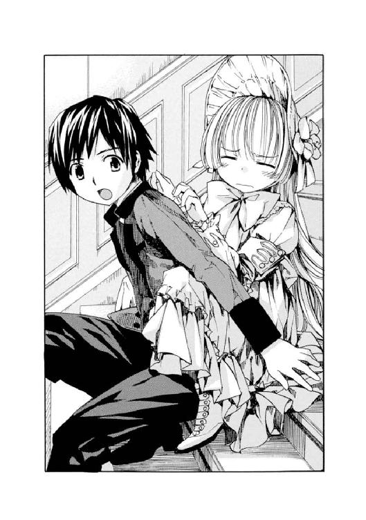
ちょこん、と犬か猫が乗っかってきたような、人間にしては軽すぎる感触がした。いやいやの割には、一度乗ると、一弥の首に細っこい両腕を回してぎゅうっと強く強く抱きつく。
「いたた、ヴィクトリカ、首が絞まる」
「......我慢したまえ」
「やだよ。死んじゃうってば」
言い合いながらも、一弥はじゃぶじゃぶと水を蹴って進む。
後ろから、モーリスとネッドも歩きだす音がした。
──やがて、先を歩いていたジュリィのうれしそうな叫び声が聞こえてきた。
「やった！ この階は廊下を仕切られていないわ。みんな、船首側に出たわよ。はやく上へ！ 階段を上がるわ！」
その声に一弥は足を速めた。ヴィクトリカがうれしいのか、背中の上で、体をのけぞらせ、小さな両足をばたばたさせ始めた。水の中に落っことしそうになり、一弥は彼女を支える両腕にいっそう力を込めた。そんな苦労を知ってか知らずか、ヴィクトリカはうれしそうに足をばたばた揺らし続けていた。
船首側の階段に辿り着き、またトラップを避けてゆっくり上がりだそうとする。
モーリスはぶつぶつと、
「どうしてこんなことになったんだ。この中に〈野兎〉がいるんだ。油断はしないぞ。そうだ......！」
叫ぶと、とつぜん上の階の廊下に飛び出した。
そこは、最初にいた階と比べるとまだ下のほうで、そのせいか照明も薄暗く、廊下にしかれた絨毯も毛羽立って古びたものだった。もとは深紅だった色が黒ずんで、人々がよく通る中央から薄くなり始めていた。洋燈も装飾の少ない実用的なもので、壁に使われる板も節目が目立った。
モーリスは走り出し、手近なドアを片端から開けていった。そこは三等船室で、天井までぎっちりと四段ベッドが詰めこまれた部屋が、ドアを開けても開けても無限に続いていた。モーリスはどうやらなにかを捜しているようだった。
ネッドがびっくりして、
「オッサン、なにしてんだよ？」
「この船が、かつての箱を再現したものだとすれば、この辺りにもあるはずなんだ。そう............あった！」
モーリスの横顔が、勝利を確信し、歪む。
近づこうとしたネッドが、
「あっ!?」
叫んで、あわてて立ち止まった。
こちらを振り返ったモーリスの手には拳銃が握られていた。震える両手に支えられ、闇のように黒く輝いている。
ネッドが、
「あわわっ！」
と叫ぶと、ヴィクトリカや一弥たちの後ろに逃げ隠れた。モーリスはニタニタ笑いながら銃口を彼らのほうに向けた。
「この船には、たくさんの武器が隠されていた。引き出し、花瓶の中、絨毯の下......。あちこちにだ。これもその一つだよ」
「どうしてなの......？」
後ろからジュリィの声がした。
悲しそうな顔でモーリスをみつめている。手が震えて、いまにも泣き出しそうだ。その顔をみつめ返すモーリスのほうは無表情だった。そしてさも当然だと言わんばかりに、威張りくさって話し出した。
「殺しあわせるためだ」
「どういうこと......？」
モーリスは肩をすくめた。
「彼らのある者は、トラップに引っかかって死んだ。またある者は、武器をみつけ、それによって互いに殺しあった。こちらの計算通りだった。たくさん生き残っては、意味がなかったのだからね」
「なんなのよ、それ!?」
「君たちが知る必要はない。それに......」
モーリスはニヤリと笑った。
「〈猟犬〉もいた」
「......〈猟犬〉？」
「ああ、そうだ」
モーリスは口を閉じた。
それからゆっくりと銃のスライドを引いた。
カチャリ──！
薬室に弾が滑りこむ不吉な音が響いた。
「......〈野兎〉は、死ね！」
銃口がぴたりとヴィクトリカに向けられていることに気づき、一弥は驚いて叫んだ。
「ちょっ......モーリスさん、どうして！ ヴィクトリカは犯人じゃない、本物の貴族だからって、言ってたじゃないですか！」
「こうなっては、もう、なにがなんだかわたしにはわからん。幸い、弾は六発もある。全員殺して、わたしだけこの船から逃れるのだ！」
「なっ......!?」
「どうせこの船はすぐに沈む。証拠もなにも海の底だ。十年前と同じようにな......！」
一弥がヴィクトリカの前に立ちふさがった。
銃口の真正面だった。冷汗が出てきて、知らないあいだに足ががくがく震え始めていた。一弥が歯を食いしばって立ちふさがっていると......。
後ろからヴィクトリカが、緊張感のない感じでつんつん背中をつついてきた。
「久城、君......なにをしているのかね？」
「ななな、なにって、ヴィヴィヴィクトリカを、じゃ、邪悪な弾丸から、まままもってる！」
「君が、死ぬが？」
「かかかもね。でもこうすれば、ヴィヴィヴィクトリカは、しし死なない」
「まぁそうだが......？」
「ぼっ、ぼくが誘ったんだから。君を生きて帰さないと。帝国軍人の三男として、責任がある」
一弥の脳裏に、いつも姿勢をびしっと正した荘厳な父、そしてその父にそっくりな兄二人の姿が蘇った。いつだったか、晴れた気持ちのいい午後、彼らが通う近所の道場に連れていかれたときのこと......。一弥はいきなり大人に投げ飛ばされた。向かっていく勇気もなく、一弥は道場の白い畳に這いつくばって、男の子なのに泣きそうになった。悔しいような、悲しいような、自分がふがいないような......。そんな自分を、がっかりした顔で見下ろしている兄たちの顔が思い出された。
（末っ子だから、甘ったれだな......）
あのとき、あの道場にいた誰かがつぶやいたのだ。見ていた大人たちの一人だろう。何気ないそのつぶやきが、一弥の心には消せない痛みとなって残っていた。
「だから、ヴィ、ヴィクトリカ......」
かたわらの彼女を、真剣な顔で見下ろす。
と、ヴィクトリカは......。
「────!!！」
彼女はエメラルドグリーンに輝く大きな瞳をまんまるにして一弥を見上げていた。
一弥は初めて、ヴィクトリカがとても驚いた顔をしていることに気づいた。これまでおかしな事件について報告するたびに、彼女はうれしそうにその謎──つまり〝混沌〟に食いついてきた。そのときも、少しは、驚いたような顔をしていたように思う。
でも、いまヴィクトリカの顔に浮かんでいるのは、そういうときの表情とはまったくちがうものだった。
彼女は純粋に驚き、珍しいものをみつけて一心に観察するような顔をしていた。そしてしみじみとつぶやいた。
「久城、君はもしかすると............善人なのかね？」
「なにそれ？......誉めてるの？」
「いや」
「バカにしてる？」
「......なんだね、それは。これは単なる事実の指摘だよ、君。いったいなにをムキになっているのだね？」
「うぅー......」
一弥が怒りだしそうになったとき......。
──ズキューン！
銃声が響いた。
（撃たれた......ッ!?）
一弥は思わずヴィクトリカを庇って抱きしめたまま、身を縮めた。固く目をつぶって声にならない悲鳴を上げる。
生まれてからこれまでのこと──優秀な兄たちを見て育ち、自分もやらなくてはと猛勉強した子供時代。留学が決まり、旅立ったこと。聖マルグリット学園の日々と、ヴィクトリカとの運命的というか取り返しがつかないというか、とにかく衝撃的な出会い──それらが走馬燈のように浮かんでは消えた。
（......あれっ？）
一弥は死んでいなかった。
おそるおそる目を開けると、ヴィクトリカがいやそうに身をよじらせていた。
「......苦しい。君、殺す気かね？」
「あのねぇ！」
命の恩人に向かってなにを、と怒りながらも、ヴィクトリカの細い体から手を離す。
モーリスが仰向けに倒れていた。眉間に黒い穴が開いている。驚いたような表情で事切れていた。
振り向くと、片膝をついて小型拳銃を構えるジュリィがいた。赤いドレスの裾がはだけて、眩しいほど白い足が少しだけ覗いていた。
無表情で銃を降ろし、立ち上がる。
言い訳するように、
「......わたしもみつけたのよ。壁の洋燈の陰に隠してあったわ。理由がわからないから黙ってたの」
ネッドがこわい顔をしてモーリスの死体に近寄った。握りしめている拳銃を拾うと、階段の下、浸水が進むほうに向かって放り投げた。
──ボチャン！
水音の後、ぶくりと不吉な泡を一つ立て、銃は沈んでいった。
ネッドはジュリィを振り返り、言った。
「君の銃も、投げるんだ」
「なっ......！」
「ただでさえ、お互い疑心暗鬼になってる。こんなものがあったら、それこそ殺しあってしまう。俺も捨てたぞ。さぁ、君も......」
「......でも」
「それとも、武器を持っていたい理由があるのかい？」
ジュリィは舌打ちした。
小型拳銃を階段の下に投げた。ぼちゃんと水音がした。
もう一度舌打ちし、
「......行くわよ。無線室へ」
階段を上がり始める。
その手からハンドバッグが滑って落ちた。
ヴィクトリカがそれを拾った。一弥は、おや？ と首をかしげた。ヴィクトリカに限って、人が落としたものを拾ってやるなんて親切心を持っているだろうか。
ていねいに渡してやる気はないようで、ヴィクトリカはジュリィに向かってハンドバッグを投げた。ふわふわと飛んで、ジュリィの手にキャッチされる。
受け取ったジュリィが、また階段を上がり始めた。
三人も後に続いた。
２
階段を一歩一歩、上がるたびに、一弥とジュリィ、ネッドの濡れた衣服から、ぽたり、ぽたりと水の滴が落ちた。
一人だけ濡れずにすんだヴィクトリカの衣服は、しかし上等なレースもフリルも、その下から見える絹の靴下もぜんぶ、埃などで黒っぽく汚れてきていた。
一弥はそれを横目で見ると、なんともいえず申し訳ないような、情けないような気持ちになった。いつもあの大図書館の植物園で、悠然と書物をめくっていたヴィクトリカ。なにものにも犯しがたいような、神聖にしておそるべき少女を、こんな沈みかけた船で泥だらけにさせているなんて......。
強く手を握ると、ヴィクトリカがキョトンとしたような顔でこちらを見上げ、
「......さっきから気になっていたのだが」
「なぁに？」
「久城、君、帝国軍人の三男だと叫んでいたが」
「はい」
「三男は、いる意味があるのか？」
「..................がーっ!?」
一弥はヴィクトリカの手をふりほどき、怒った。
その本気で怒っている顔に、ヴィクトリカのほうがビックリして、
「き、君、なにを怒っているのだ？」
「あのねぇ、さっきから、善人だの、三男だの。君、ぼくに喧嘩売ってるの、ヴィクトリカ？」
「ち、ちがう。単なる事実の指摘だ。わたしはただ、混沌の一つとして認識したのだ」
「言っとくけど、三男だけど、ぼくがいちばん成績優秀なんだからね！」
二人の会話は嚙み合っていなかった。
「......彼の国では、優秀な三男は長男に昇格するのか？」
「しません。......単なる意地だよ。兄貴たちばかりが優遇されるもんだから、対抗しようと思って猛勉強したんだ」
とはいえ、あの近所の道場で投げ飛ばされた日に、すべての努力が水の泡となった......ように、一弥は感じたのだが。それもあって一弥は、通っていた士官学校からのソヴュール留学の打診に飛びついた。優しい母や姉など、家族が止める間もなく手続きをし、荷物をまとめて船に乗った。まるで国から、家族から、自分自身からも逃げるように......。
それでいま一弥はここにいる......。
「ふぅむ......？」
ヴィクトリカはうなずいた。
しばらくの沈黙の後、歌うようなのどかな声で、
「この国の貴族も、同じだ。家督を継ぐのは長男と決まっている」
ヴィクトリカの顔がまた不思議な表情に変わった。一弥を見上げ、めずらしいものを一心に観察するような様子で、
「意地、か」
「......ん？」
「久城、君は善人なだけでなく、素直だな」
「はぁ？」
「意地と口に出してしまえるだけ、君の魂は単純で美しい」
「誉めてる？ 遠回しにバカだって言ってる？」
ヴィクトリカは怒りだした一弥を不思議そうにみつめていた。それから顔をそむけて黙りこんだ。その横顔を覗きこむと、頰袋に木の実をめいっぱい詰めたリスのようなふくれっ面をしていた。彼女がちょっとすねたときの顔だ。
おそらくここまでの一連の会話は、ヴィクトリカなりに一弥を誉めた、もしくは自らを盾に守ってくれたことに礼を言ったつもりだったのかもしれない。友愛の情を表現したつもりだったか......。
となりでまだぶつぶつ文句を言っている一弥に、ヴィクトリカはすねた口調で、
「くだらない。単なる事実の指摘だよ、君。混沌の再構成を言語化しただけだ」
それきりヴィクトリカは黙った。
一弥は一弥で、急に不機嫌になったヴィクトリカを、理由はわからないが自分のことをなにやら怒っているのだろうと思い、困っていた。
──四人で黙りこくって階段を上がっていく。
ネッドは相変わらず、暗い中でも器用にテニスボールを投げてはキャッチし続けていた。そのまま、暗い階段の踊り場を曲がりゆっくりと姿を消した。
つぎの瞬間、ドンッと鈍い音がした。
続いて、小さな悲鳴が聞こえた......気がした。
一弥はジュリィと顔を見合わせた。
「......ネッド？」
ジュリィがおそるおそる声をかける。
返事はない。
一弥が続いて、
「どうかしたんですか？」
階段はしんと静まり返っている。
一弥とジュリィはまた顔を見合わせた。
つぎの瞬間、二人とも階段を駆け上がった。薄暗い踊り場に足を運ぶと、そこに思いもかけないものがあった。
そこで......
ネッドがうつぶせに倒れ、死んでいた。
一弥が叫び声を上げて駆け寄った。
死体はこちらに足を向けて倒れ、右手が体の下に隠れていた。左手はこちらに向かって、腰に手のひらを当てて気を付けの姿勢をとったように伸ばされていた。
その左手を取り、脈を確かめる。
ネッドの脈は完全に止まっていた。
（どうして!? どうして......!? いったいなにが......。トラップか？ ここになにか仕掛けてあったのか？ いったい......）
「......久、城」
ヴィクトリカが低いしゃがれ声で一弥を呼んだ。振り返ると、彼女にしてはめずらしく、心の底から心配そうに表情を強ばらせ、こちらを見下ろしていた。
「なに......？」
「こっちにきたまえ、久城」
「ちょっと待って。この人、死んでるから。なんのトラップでどうなったか調べないと......」
「いいから、こい、久城」
ヴィクトリカは頑固に言い張った。
一弥はその言い方に少しムッとして、
「ヴィクトリカ、わがままもいい加減に......」
「こわいんだ。おねがいだ、そばにきて......。頼む、久城」
一弥は──キョトンとした。
床に片膝ついたまま、ヴィクトリカの顔をじっと見上げる。
彼女はいつも通りの有無を言わせぬ表情で自分をみつめていた。早く、早く立て、と言っているようだった。いまの台詞......こわいからそばにきて、は、まったくヴィクトリカらしからぬものだった。
一弥は戸惑い、それから、ヴィクトリカが噓をついている、と思った。
（こわいなんて、噓だ。それに、こいつが、頼む、なんて言うわけない）
はっと息を呑む。
（そうか。わかったぞ......！ ヴィクトリカはぼくを動かしたいんだ。この......ネッドの死体から、遠ざけたいんだ！）
一弥は立ち上がって、そろそろとヴィクトリカのそばに戻った。
ふとかたわらを見ると、ジュリィは硬直していた。両手のひらを口に当てて、信じられないというように瞳を見開いている。
「まさか、まさか......」
小声でつぶやいている。
「おんなじだわ。おんなじだわ。これ、あのときとおんなじだわ......！ どういうこと!?」
一弥はジュリィを気にしながらも、ヴィクトリカにささやいた。
「......どうしたんだよ？」
「いいか、久城」
ヴィクトリカの声は緊張していた。
「三人でこの階段を抜けたら、上の階に行き、隠れるのだ。武器を捜したほうがいい。船中にあるようだからな」
「なっ......？」
ヴィクトリカは硬い表情を浮かべ、そして......謎の言葉をつぶやいた。
「こちらは三人、あちらは一人だ。だが、子供二人と女一人が、大人の男一人に勝てるかというと、はなはだ心許ない。ああ、さっき彼女の拳銃を捨てさせたのは失敗だったようだ......いまさら悔いても仕方ないが」
ジュリィも小声で聞き返した。
「なんのこと？ どうなるの？」
ヴィクトリカは顔を上げた。
エメラルドグリーンの瞳が見開かれ、不安に揺れていた。
薄く、色のない唇を動かし、きっぱりと言い切る。
「殺されるぞ」
「なっ......？」
一弥はなにか言いかけ、口を閉じた。
こいつの言うとおりにしてみよう、と思い直す。呆然と立ちすくんでいるジュリィを引き立てて、ゆっくりと死体の横を通り、階段の踊り場を抜ける。
ヴィクトリカが小声で、
「......走れ！」
一弥はヴィクトリカの手をギュッと握りしめた。
その階は、だいぶ上にきたため、また豪華なふわふわの絨毯が敷かれ、贅沢なデザインの洋燈が瞬いていた。手近な部屋に飛びこむと、そこは一等船客のための広々とした読書室だった。きらきらしたシャンデリアに、壁際につらなる豪奢な書棚。トラップに気をつけながらも、書棚や引き出しの中、絨毯の下を徹底的に捜した。
一弥は棚の引き出しから、小さなメリケンサックを二つみつけた。両手にはめる。それから振り返り、ジュリィを見た。彼女は大きめのペーパーナイフをつかんで、肩で息をしていた。
目があった。ジュリィが、静かに、というように唇に人差し指を当てた。一弥もうなずく。
──しん、と静まり返る。
一弥の心臓の音が、どくっ、どくっ......と音を増して感じられた。こめかみがずきずきと痛んだ。
そのまま、数刻......。
なにも起こらない。
一弥とジュリィはみつめあったまま首をかしげた。それから一弥が、背中に庇ったヴィクトリカを振り返った。彼女に「ねぇ、どういう、こと......？」と聞こうとした、その瞬間......。
音もなくドアが開いた。
そこに立っていたのは──。
死んだはずのネッド・バクスターだった。
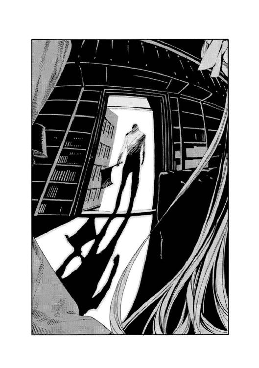
ネッドは右手に大きな斧を握りしめていた。
ついさっきまでとは別人のような無表情だった。読書室の気温がとつぜんぐっと下がったように感じられた。
ぶん、ぶん......と首を左右に振ると、まず、壁際に立ち尽くして自分を睨みつけているジュリィをみつけた。ゆっくりと彼女に歩み寄る。斧をふりかぶってくるネッドに、ジュリィがナイフを振り回して応戦する。一弥たちに向かって、
「なにしてるの？ 逃げなさいよ！ はやく無線室へ行って、助けを呼んで！」
その声に、ネッドがゆっくりと振り返った。
そして一弥と、その背後に庇われたヴィクトリカをみつけた。
顔にポッカリと二つの穴を開けただけのような、暗く空虚な瞳。
しかしそれは、ヴィクトリカをみつめているうちにらんらんと輝き始めた。
「少女だ。〈野兎〉だ......！」
「なっ!?」
「〈野兎〉は狩らなくてはいけない。俺は、〈猟犬〉だから、な！」
斧を振り上げ、床を蹴って飛翔してくる。
ネッドはまっすぐにヴィクトリカを狙ってくる。一弥は彼女を床に突き飛ばすと、着地したネッドの頭を横から思い切り殴りつけた。
体格の差がすごくあったけれど、手につけたメリケンサックのおかげでびっくりするぐらい一弥のパンチに威力が出た。ゴンッという確かな手応えとともに、ネッドはそのままうつぶせに倒れた。
──どさり！
ジュリィが駆け寄ってきた。一弥の頭をおおざっぱにぐりぐり撫でて、
「よくやったわね。男の子ね」
「いや、帝国軍人の......」
「はいはい、三男ね。はやく逃げましょ！」
ジュリィが斧を奪い取った。三人で部屋を出ると、廊下に置かれた大きなキャビネットを力を合わせて押し、ドアの前に置いてとおせんぼにした。
階段を駆け上がる。やがて起きあがったらしいネッドが、ドアに体当たりする音が聞こえてきた。
甲板目指して、少しずつ明るくなる階段を上がっていく。
一弥はヴィクトリカの小さな体を抱えこむようにして走っていた。ヴィクトリカは、その一弥の装着したメリケンサックに、ネッドのものらしい血がべっとりついているのを、不思議なものを見るようにじっとみつめていた。
後ろからジュリィが追いすがってきた。斧を両手で握りしめたまま階段を駆け上がっている。一弥ではなく、小さなヴィクトリカに向かって、悲愴な顔で、
「あなた、どうしてわかったの？ あいつが死んでないって......？」
一弥は、いまはそんなことを話している場合ではない......と言いかけて、ジュリィの顔があまりに蒼白でせっぱ詰まっているのに気づき、口を閉じた。
ヴィクトリカはわずかに顔をしかめた。
それから、こんな切迫した状況とは思えないほどいつも通りの声で、言った。
「簡単なことだ。湧き出る〝知恵の泉〟が教えてくれたのだ」
「ヴィクトリカ、言語化してあげて、言語化」
「うむ......」
ヴィクトリカは不承不承うなずく。
「簡単なことだ。あの倒れ方は不自然ではなかったかね？ うつぶせに倒れ、右手は体の下に隠していた。まるで触られては困るかのように。そして左手は逆に、こちらに向かって伸ばされていた。まるでここで脈を取れと言わんばかりに、ね」
「そういえば......」
「なにか思わぬトラップにかかり倒れたとき、あんなポーズを取るものだろうか？ 両腕とも前に向かって伸ばされているのがもっとも自然な状態だ。あれはおかしいと気づくべきなのだよ」
「でも、脈は止まってたよ。それは確かだ」
「そうよ......」
ジュリィが小声でつぶやいた。
その顔は死人のように青ざめ、唇も小刻みに震えていた。そして独り言のように小さくささやいた。
「あのときだって......脈は..................確かに止まってたのに」
「......あのとき？」
「う、ううん。なんでもないわ。続けて、小さな探偵さん」
ヴィクトリカはその呼ばれ方に、不満そうにクスンと鼻を鳴らした。
「一時的に脈を止めることは、できる」
「どうやって？」
「脇にはさむのだ。......テニスボールを」
一弥とジュリィがアッと叫んだ。
顔を見合わせ、瞳を何度もパチクリする。
「そう、か......」
ネッドがずっと、テニスボールをいじったり、放り投げたりしていたのを思い出す。あのボールを左の脇の下にはさんで、強く脇を締めると......。
「一時的に脈が止まり、その腕に触れて脈を取った人間に、死んでいると思いこませることができるというわけだ。それに気づいたため、久城、君を呼んだのだよ」
「こわいからそばにいて、って？」
ジュリィがからかうように言う。
ヴィクトリカはカッと頰を染めた。やけにムキになって、
「あれは本心ではない。ああでも言わないと、この帝国軍人の三男が動こうとしなかったからだ」
「その呼び方、やめてよ」
「おや、では帝国軍人の優秀な三男が、とでも言えばいいのかね？」
「......だーっ！ 腹立つ、腹立つ！」
文句を言い合いながらも寄り添って離れない二人を、ジュリィはどこか寂しそうな瞳で見守っていた......。
３
三人は甲板に出た。
──夜は明けかけ、白々とした朝日が濡れた甲板を照らしていた。夜のうちにあれだけ激しかった雨は小ぶりになっていたが、まだやんではいなかった。海は暗く、波も不気味に高かった。
まるで山腹にぽつんと建てられた山小屋のように、無線室が三人を待っていた。甲板はつるつる滑った。ヴィクトリカが何度も転びそうになり、そのたびに一弥があわてふためいた。
二人が無線室に入ろうとしたとき......。
遅れてついてきていたはずのジュリィが、背後で甲高い悲鳴を上げた。
「きゃあぁぁぁぁ！」
あわてて振り向いた一弥の目に、ジュリィの長い黒髪を後ろから引っ張る、男の太い腕が見えた。
──ネッド・バクスターだった。
ジュリィがまた悲鳴を上げた。
「いやあぁぁぁぁぁぁ！」
ネッド・バクスターの目は血走り、口は大きく開き、まるで子供が悪夢に見る邪悪な獣のような形相に変わっていた。ジュリィの首がぐりりと曲がり、断末魔のような悲鳴が響き渡った。握っていた斧が甲板に落ちて、転がった。
ネッドはぐったりしたジュリィの体を甲板に投げ出すと、大股でこちらに歩いてきた。
「ヴィ、ヴィクトリカ、こっちだ......っ！」
一弥は恐怖のあまりか立ちすくむヴィクトリカを強引に引きずって走り出した。濡れた甲板を、何度も転びそうになりながら。
......無線室のドアを開ける。
ヴィクトリカだけを中に入れ、ドアを閉めようとした。するとヴィクトリカが小さな手を伸ばし、一弥を引っ張った。
「ヴィクトリカ、君はここにいて！ 無線で助けを呼んで！」
「久城、君は......？」
「あいつをなんとかしなきゃ。君が殺されちゃうだろ！」
「久城......」
「ぼくが、君を......」
一弥は、ゆっくり近づいてくる〈猟犬〉、ネッドの姿にがたがた震えながらも言った。
「ぼくが君を、ここに連れてきたんだ。無事に帰す責任がある」
「──ちがう！」
ヴィクトリカが震え声で叫んだ。
その顔はとても苦しそうだった。言いたいことがあるのに、自分は、それを伝えるべき言葉を持っていない......。そのことに初めて気づいたように、ヴィクトリカは何度も口を開いては、言葉がみつからず空しく閉じることを繰り返した。
やがて、ようやく、ヴィクトリカは言葉をみつけた。
「君......ここにはわたしがきたがったのだよ。わたしが招待状をみつけて、君をだね......」
「ちがうよ。ぼくのせいなんだよ」
「君、論理的に考えたまえ。責任がどちらにあるかをだ」
「そ、そんなこと関係ないだろ！」
一弥は地団駄を踏んだ。ヴィクトリカも真似するように何度も床を踏み鳴らした。やがて一弥は、
「あのね、ぼくは、君を助けないと、帝国軍人の三男として......」
一弥は急に、この〝帝国軍人の三男〟という言葉を呪縛のように感じた。それではヴィクトリカに、自分の本当の気持ちがどうやっても伝わらないような気がした。さっきの会話のように嚙み合わなくなってしまう。
「......いや、ちがう。そうじゃなくて」
一弥はがんばって、正直に言った。
「ぼくは、君を助けたいんだよ」
ヴィクトリカの顔が歪んだ。
悲しそうに、でもなにかを言おうとして、口を開いた。
一弥はドアをむりやり閉めようとした。
──ヴィクトリカは、これまで見せ続けてきた、冷静でどこかシニカルで、つんと取り澄ました貴族特有の顔ではなくなっていた。ヴィクトリカと世界をいつもへだてていた、目には見えない薄い膜のようなものがなくなり、そこには、年相応の、不安に揺れる少女の顔があった。
......一弥はドアに力を込めた。
ヴィクトリカの、迷子の小犬のような、不安な緑色の瞳が、最後に見えた。
「く、久城......」
聞こえないほどの小さな声。
「久城、頼む............そばにいて。一緒に帰ろう。一人じゃいやだよぅ。久城......っ！」
一弥は目をつぶり、ドアをバタンと閉めた。
つぎの瞬間、〈猟犬〉が襲いかかってきた。
一弥はメリケンサックをはめた手をぐっと握りしめ、構えた。頭の中で、あの東洋の島国で兄たちが折に触れ自分に教えた、徒手の拳法を思い出す。兄たちは熱心だったし、一弥も記憶力には自信があった。だからこその秀才なのだ。
一弥は拳を引いて、ネッドの鼻柱に向けて思い切り突き出した。
ネッドは一弥のパンチを顔面に受けて、少しだけよろめいた。それから手のひらを広げて、自分の顔を上から下につるりと撫でた。手のひらが下に向かって離れたとき、ネッドのその顔には奇妙な笑顔が張りついていた。一弥はそれを恐ろしく思った。こわいものを叩き伏せるように、もっと強いパンチを繰り出した。ゴスッと鈍い音がした。ネッドの鼻から鼻血がだらりと流れた。また上から下へ、顔をつるりと撫でたネッドの手のひらに、べっとりと血がついた。
それを見た途端、ネッドは片眉をピクピクッとさせた。......怒ったのだ。
ふいにネッドが甲板を蹴って飛び上がった。一弥の上に覆い被さるように落下してきた。一弥は吹っ飛ばされて、甲板に背中を打ちつけ、仰向けに倒れた。ネッドがその上に覆い被さり、何度も一弥の顔を殴りつけた。気が遠くなった。
あのときみたいだ......と思った。あの近所の道場で、畳に這いつくばって震えていたとき。
でも......あのとき一弥を待っていたのは、一弥よりずっと強くて大人の兄たちだった。でも、いまはちがう。ここはあの国をはるか遠く離れた異国だし、一弥は、その異国で友達になった小さな少女と二人きりだった。一弥が負けると、二人の命がこの地上から簡単に消え去ってしまうのだ。そこにはただ無情なエンドマークが待っているだけだ。
一弥は歯を食いしばって耐えた。ネッドの動きが少しゆるくなった瞬間を見透かして、自分の拳を、空に向かって振り出すようにして突いた。ネッドの顔面に何度も一弥のパンチが当たった。
不思議と息が切れなかった。どうしてだろうと一弥は考え、ふとあることに思い当たった。最近、毎日のようにあの聖マルグリット大図書館の迷路階段を上り下りしていたこと。ヴィクトリカはいい運動になるだろうと一弥をからかったが......おそらく、知らないあいだに少し体力もついていたのではないだろうか。
一弥のパンチに、ネッドの頭は何度も後方に吹き飛ばされた。だが、吹き飛ばされても吹き飛ばされても、またしつこく戻ってくる。その顔は血に染まり、赤い、不気味な塊のようだった。一弥は何度も何度もその頭を殴りつけた。
ネッドがぐいぐいと一弥の首を絞め始めた。少しずつ一弥の気が遠くなっていく。
（負けないぞ......。ぼくは、負けない！）
しかし、きつく首を絞められ、大人の男の力に、少しずつ体の力が抜けていく。
（ヴィクトリ、カ......！）
一弥は目を開けた。視界は白くかすんでいた。
歯を食いしばり、思いっきりネッドのこめかみを殴りつける。ふっと、首を絞めるネッドの力が弱まった。一弥は荒く息をしながら、目を開けた。
息をするたび、視界が戻ってきた。一弥は立ち上がった。少し後ずさる。甲板の手すりに背中をつく。血まみれの顔をしたネッドも立ち上がり、フラリ、フラリと体を揺らして追ってくる。
その背後に人影が映った。一弥は目をこらした。
......ジュリィだった。意識を取り戻して、そうっとこちらに近づいてくる。その手に斧を握りしめていた。一弥と目が合うと、静かに、というように口に人差し指を当てた。一弥は小さくうなずいた。
またネッドが拳を振り上げる。一弥の頭に叩き降ろそうとする。
その瞬間......。
一弥はパッとその場にかがむと、ネッドの両足のあいだをすばやくくぐり、背後に回った。体重を前方にかけてパンチを繰り出していたネッドが、的を失って前によろめく。ジュリィが斧を振り上げて、その背中に思い切り叩きこんだ。斧はネッドの背中に斜めにめりこんだ。ネッドが獣のように咆哮した。
ジュリィが、斧から、震える両手を離した。
同時に一弥が、振り向こうとするネッドの両足を抱え上げ、思い切り持ち上げた。
「......うわぁぁぁっ？」
ネッドの体がくるりと回転した。
背中に斧をめりこませたまま、頭を下にして、手すりを乗り越えて海に落下していく。
一弥はあわてて手すりに走り寄り、海上を見下ろした。
ばしゃああん......！
高い波がネッドの体を飲みこんでいった。
白い泡がたくさん立った。二、三度、波が揺れた後、ネッド・バクスターの体は海の底へ消えていった。
ジュリィも手すりに近づいてきた。肩ではぁはぁと息をしながら、
「助かったわ。少年......」
「いや、ぼくのほうこそ」
「よくやったわね」
ジュリィが薄く微笑む。
海上では白い波が寄せては返していた。夜明けの近づいた海は静かだった。二人はしばらく黙って、ネッドを飲みこんだ暗い海を見下ろしていた。
無線室では、ヴィクトリカが海上救助隊へＳＯＳを発信していた。
大きな四角い機械の前に、誰かがふざけて人形を置いたかのように、小さな体でチョコンと座っていた。しかし人形ではない証拠に、その顔は青白く、また、両手が忙しく動いていた。
ドアが開いた。ヴィクトリカはビクリと肩を震わせた。
一弥が入ってくると、一瞬、安堵のあまり泣きそうな顔をした......ように見えた。つぎの瞬間にはいつもの静かな、そして少し皮肉っぽい貴族の表情に戻り、
「......見たところ、どうやら無事のようだね。君」
続いて入ってきたジュリィを見ると、なぜかヴィクトリカは微妙な表情を浮かべた。
ジュリィはそれに気づかず、明るい声で、
「助けを呼んだのね？」
「もちろんだとも。すぐにきてくれるそうだよ。ところで、どうもここは......」
ヴィクトリカが暗い顔で肩をすくめた。
「わたしたちが出航したあの港から、たいして離れていないらしい。そんな陸の近くで、どうして遭難したのだ、と不思議がられたよ。無線で説明するのは骨が折れたがね」
それからヴィクトリカは立ち上がり、とことこと、手からメリケンサックを外している一弥のそばに寄ってきた。
小さくて精巧な人形が歩いてきたようだった。だが人形ではない証に、その顔には説明しがたい表情が浮かんでいた。安堵と、心労と、あと透明ななにか。
ヴィクトリカは黙って、一弥の手をギュッと握った。
４
海上救助隊に三人が保護され、そちらの船に乗り移った、数分後──。
客船〈QueenBerry 号〉は大きな音を立て、海底に沈んでいった。
その様は壮観だった。大きな船はゆっくりと沈んでいったのだが、その後には静かな海だけが残り、波を起こしては消えていった。まるで初めからなにもなかったのだというように。
救助船は〈QueenBerry 号〉とは異なり、飾り気のない頑丈そうな船だった。よく使いこまれた甲板。手すりのペンキは剝げかけて、ところどころ斑になっていた。
と、救助隊員に混ざり、兎革のハンチングを被った若い男二人組がこちらに駆け寄ってきた。なぜか手を繫いでいる。......グレヴィール・ド・ブロワ警部の部下だ。
二人とも青い顔をして大声を上げていた。ヴィクトリカの無事を確認し、
「よかったー。生きてたー。奇跡だー」
「驚いたー。わー船沈んだのー。たいへんだー」
大騒ぎしている。
──ヴィクトリカは甲板の手すりにもたれ、海面をみつめていた。糸のように細く、いつもきらきらと輝いている長い金髪が、海からの強い潮風に揺れていた。仕立てがよく豪奢なその服は、白いレースが汚れ、あちこちに染みやほつれがあった。
寂しそうな表情だった。
一弥が横に並んで、
「なに見てるの？」
ふっと顔を上げたヴィクトリカは、かすかに笑った。それから、重大な秘密を教えてくれるかのように、一弥の耳に唇を寄せて小声でささやいた。
「美しいものは、嫌いじゃないのだよ」
そうして、海面に朝日が映り、燃えるように赤い波が寄せては返すのを指差してみせた。
小さな指だった。
いつのまにか雨はやんで、眩しい朝日が船を包んでいた。海を鮮やかな赤に染める強い朝日は、二人の上にもさんさんと降り注いでいた。
この小さな金色の女友達が、自分に〝好き嫌い〟を教えてくれたのは、これが初めてだということに一弥は気づいた。特別なことを言われた気がした。一弥は微笑んだ。
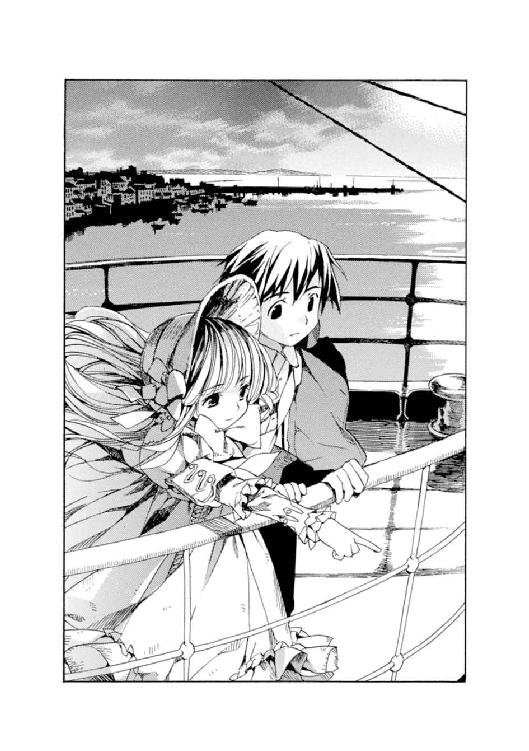
二人は並んで、しばらくその光景をみつめていた。
やがて一弥が小声で、
「また、こようよ」
「......また？」
「うん。二人で海を見にこよう」
ヴィクトリカはなぜか寂しそうに笑った。
「また、か」
「ん？」
「いや、なんでもないよ。久城。なんでもないのだ......」
少しずつ朝日が昇っていく。
きつく感じた赤い輝きも、柔らかな光に変わっていく。
船が陸地に近づいていく。
そして、波は柔らかに寄せては返していた。
５
ジュリィ・ガイルは船を下りた。目立たないように顔をうつむかせ、歩きながらどんどん早足になる。
やがて駆け足になり、船から離れていく。
（なるほど、ね......）
心の中でだけそっとつぶやく。
船が港に着き、人々がぞろぞろと下りていく。荷下ろしの掛け声や、行き交う水夫たちの忙しそうな声。長旅のため船に乗りこもうとやってきた人々や、見送りのため集まった家族。荷物が運び出されたり、持ちこまれたり。港は朝の喧噪に包まれていた。
その喧噪にジュリィはうまく混ざり、姿を消そうとしていた。もちろん警察官に残るように言われたのだが、聞く気はなかった。ジュリィは港の朝の人混みに紛れてさっさと歩きだしていた。
あの船さえ下りれば、ジュリィ・ガイルと名乗った女は消える。都会に紛れればもうみつかるまい。
足早に歩きだすジュリィは、跡をついてくる男たちの姿に気づいていなかった。
手を繫いで、スキップしてついてくる二人組。揃って兎革のハンチングを被っている。
ジュリィはつぶやく。
（なるほど。あのときもあんたはそうやったのね。そうだったのね......）
その瞳には涙が光っている。
──思い出が押し寄せてきた。
いや、思い出などというきれいな言葉では言い表せない。
あれは、悪夢だ。悪夢のような一夜──。
（そうだったのね。騙されたわ、ヒューイ......）
〈野兎〉の群れに放された〈猟犬〉。
ヒューイこと、ネッド・バクスター──。
（あなたはあのときも、ああやって、死体のフリをしたってわけね............！）
モノローグ─monologue 4─
わたしは階段で拾ったハートのペンダントをポケットに押しこむと、立ち上がった。そろそろと暗い階段を降り、もとの廊下に戻ろうとした。
しかし、階段の途中で不測の事態が起きた。
遠くから聞こえた銃声と、いくつもの悲鳴......。
わたしは走り出した。階段を駆け下りて、薄暗く粗末な廊下に躍り出る。
そして驚きのあまり立ち尽くした。
「............ヒューイ!?」
廊下に折り重なるように仲間たちが倒れていた。小柄なフランス人の少女が、リィを庇うようにしてうつぶせに倒れている。がっちりしたイタリア人の少年は、廊下の壁に背を預け、その肩からどくどくと流れる血を呆然とみつめている。瘦せてくるくるとした巻き毛のアメリカ人の少年は、仰向けに倒れてうめき声を上げている。その前に、腕から血を流すヤンが立ちふさがっている。
そして、その阿鼻叫喚の真ん中に、瘦せた少年が──
死んだはずのヒューイが立っていた。
思わず上げた声に、ゆっくりとこちらを振り返る。わたしは息を呑んだ。彼の青白い顔にはなんの表情も浮かんでいなかった。彼自身の意思ではなく、なにか大きな力に操られたおそろしいマリオネットのようだった。
「〈野兎〉、みっけ」
そうつぶやくと、急にニヤリと笑った。
片手に、無造作に機関銃を持っていた。溺れ死んだあの二人の少年から奪い取ったものだろうと推測できた。
ということは......彼らが言い残した言葉は......。
（幽霊が、出たんだ......！）
（俺たちから銃を取り上げて、ここに放りこんだ......！）
あの〝幽霊〟とは、死んだはずのヒューイのことだったのだろう。
そしていま、体中から血を流して倒れている仲間たち。
──頭にカッと血が上った。わたしはポケットに突っこんだままになっていた拳銃を取り出して、ヒューイの胸に狙いを定めた。
「ヒューイ、銃をおろして！」
「......おまえこそ」
ヒューイは笑いながら引き金を引いた。
右肩に熱い衝撃が走った。撃たれた、と気づいたときにはもう床に膝をついていた。握っていた銃も床に落としていた。額に冷汗が浮かび、悪寒がした。
ヒューイは楽しそうに、一歩一歩、近づいてくる。銃口をわたしの頭に向けて......。
「......やめろっ！」
少年の叫び声がした。
腕からだらだらと血を流したヤンが立ち上がり、わたしとヒューイのあいだに割りこんだ。怒りに震える声で、
「どうしてこんなことをするのか、わからないが......女の子に銃なんか、向けるな」
「そんなことは関係ない。男も女も、この箱の中では関係ないんだ」
ヒューイの声も震えていた。
なにに怯えているのか、瞳を不安そうに揺らし、
「重要なのは〝国籍〟だ。性別じゃないんだ」
「......どういうことだ？」
「俺は協力者なんだ。君たちは〈野兎〉で、俺はその群れに放たれた〈猟犬〉なんだ。適当に嚙み殺せって命令された。国のためだ。最後までやる！」
「ヒューイ......？」
わたしも、彼の悲愴な表情と、繰り出される謎の言葉に、戸惑って彼の顔をただ見上げるばかりだった。ヒューイは機関銃を振り上げ、
「ここで起きたことは〝未来〟なんだ。これは絶対なんだよ！」
ヤンが飛びかかる。
その胸に銃口が当てられた。ヒューイが引き金を引いた。
ヤンの小柄な体が吹き飛ばされ、血飛沫がわたしの顔にびしゃっとかかった。至近距離から弾を受けたヤンは、胸に大きな風穴を開け、小柄な体からは予想もつかないほど大きな音を立てて、床にどさりと倒れた。どくどくと血が流れ出て、またたくまに黒ずんだ古い絨毯を鮮やかな赤色に染めた。
わたしは悲鳴を上げた。するとヒューイはこちらにも銃口を向けた。
ニヤリ、と笑う。
薄い唇を開き、一言、
「命乞いしろよ」
わたしはキッと睨みあげた。ヒューイの表情は変わらない。
「......いやよ」
「じゃあ、死ね！」
銃口が迫ってくる。わたしは思わず目をつぶった。
──カチッ！
引き金を引く、小さな音がした。
わたしは目を開けた。
弾が切れたらしい。わたしはあわてて落とした銃を拾い、左手で握りしめた。
ヒューイは身をひるがえし、走り出した。
その後ろ姿に引き金を引く。
大きな発砲音が何度も繰り返される。だが、当たらない。肩からの出血に気が遠くなる。
気づくとわたしは泣きじゃくっていた。引き金を引きながら、溢れる涙に視界を阻まれ、嗚咽で大きく肩を揺らしていた。
事切れているヤンに目をやってから、立ち上がった。ふらつきながらほかの仲間のところへ行く。
アメリカ人、イタリア人の少年は、それぞれ脇腹と肩を撃たれていたが、弾はかすっただけのようで、声をかけるとなんとか立ち上がることができた。フランス人の少女は恐怖で気を失っていただけのようだった。
三人ともが立ち上がると、わたしは出血のためかまた意識を失っているリィを担いだ。彼女のハートのペンダントは、まだわたしのポケットに入っていた。これを彼女に渡さなければ、と思った。また歩きだした。
イタリア人の少年が、ふらつくアメリカ人の少年を力づけるように話し始めた。故郷のことを。場違いな話だった。
「ぼくは、市場のすぐ近くに住んでいたのだよ。朝は、屋台の店番などをして小遣いを稼いでいた。色とりどりの野菜を積んだ屋台は、圧巻だよ。夏野菜の美しさと、おいしさは、どこの国にも負けないと思っていた......」
アメリカ人の少年が、聞こえているよ、というように力無く微笑んだ。
ふいにフランス人の少女がうめいた。
「どうして......？」
ほかの少年たちも振り返る。
フランス人の少女は、絞り出すような声で、誰にともなく問う。
「生きてたの？ あの男の子？ 死んでたはずよ......」
誰も、なにも言わなかった。
わからなかったのだ。
わたしも、狂ったように何度も、頭の中で反芻していた。あのとき......あのとき、ヒューイは確かに、脈が止まっていたのに、と......。
第五章 ゲーム・セット
１
ジュリィ・ガイルは港を離れ、街で拾った辻馬車に揺られていた。舞いこむ風に長い黒髪が揺れ、その青白い顔にかかったり、また離れたりを繰り返している。
ガタゴトと揺れる座席で、ジュリィは一人、遠い目をして考えこんでいた。
「そうよ......」
思わず声がもれる。
「あのとき、倒れているヒューイの脈を取ったのは、わたし。確かに脈は止まり、死んでいるように見えたわ。あれからずっと......考えていた。どうしてか、と」
外の風景は次第に町中の喧噪に入っていった。都会の人混みに、ジュリィは安堵を強くする。自分はついに復讐を終え、逃げ切ったのだと。
御者が素っ頓狂なほど明るい声で、
「今日はいい天気ですねぇ、お嬢さん」
声をかけてきたが、無視した。
御者はそれでもしつこく、
「ついさっきまで曇っていたのに。いい一日になりそうだ」
「......そうね」
ジュリィは低く返事をした。
一人、目を細める。
ヴィクトリカを思いだし、知らず微笑みがこぼれた。本人は知らないことだろうが、自分が十年ものあいだ抱えていた疑問を、あのおかしな美少女は一瞬にして解いてくれたのだ。
ヒューイが倒れていたはずの場所に転がっていたテニスボール。
きっと十年前も、ヒューイは同じ手を使って死体のフリをしたのだ。そうして少年少女を恐怖に陥れ、争いあう原因の一つになった。その後はグループを離れて、徒にその命を奪ったりした。
「なるほどね......」
胸にかけたハートのペンダントをぐっと握りしめる。
しかし自分は見事に復讐をやってのけた。あの箱に〈野兎〉たちを閉じこめてなぶり殺した大人たちも、〈猟犬〉の少年も、もういない。すべて終わったのだ。遠くへ......後は遠くへ逃げればいい。
──ふと、ジュリィは異変に気づいた。
辻馬車は、ジュリィが命じた、異国へ続く列車の出る駅ではなく、別の街角を走っていた。駅は遠ざかっていく。あわてて御者に向かい、
「どこへ行くのよ！」
「......どこへって、お嬢さん」
御者は振り返った。
ハンサムな若い男だった。貴族的な品のある顔立ちに、皮肉っぽく歪められた口もと。御者にしては上等すぎる外套に身を包み、首には高価そうなシルクのタイを巻いていた。
「あんた、誰！」
ジュリィは、その御者の異様なヘアスタイル──先端をぐりゅんと流線形にかためた、見たこともない形だ──に目を奪われながら、叫んだ。
「グレヴィールです」
「......グレヴィールって、誰よ！」
「名警部です」
「は？」
御者が強く手綱を引いた。
馬がヒヒーンと一声鳴いて、足を止めた。
と同時に、ズザザッとたくさんの足音がした。ジュリィは息を呑んだ。いつのまにか辻馬車の周りをたくさんの警官が取り囲んでいた。
辺りを見回す。そこは警察署ビルの前だった。鉄格子のはめられた四角い窓がいくつも並ぶ、真四角のビル。古くからここに建っている由緒あるこの建物は、どこか刑務所を連想させる威圧的なものだった。そのくすんだオレンジ色をした煉瓦の壁が、じわじわとこちらに迫ってくるように感じられた。
ジュリィは目をこらした。
警察署の前に少年と少女が立っていた。あの東洋人の──帝国軍人の三男だと言っていた──久城一弥と、ジュリィ自身が、小さな探偵さんと呼んだ、いかにも貴族的な金髪の少女、ヴィクトリカ。
二人は手を繫いでこちらをみつめていた。
ジュリィは肩をすくめた。
御者に向かい、笑いかける。
「ゲーム・セットね？」
「......そのようですな」
御者は馬車から飛び降りると、外からドアを開け、うやうやしくジュリィに手を差しのべた。攻撃的に尖った髪の毛が、ジュリィの顔に突き刺さりそうだった。その手を取ってジュリィが馬車から降りると、御者は胸を張り、
「ジュリィ・ガイル。殺人罪で、逮捕する！」
ジュリィは一瞬だけ、笑った。
それから氷のような無表情になり、警察署に向かって歩きだした。
２
警察署の一部屋で、ジュリィ・ガイルは、ブロワ警部と、ヴィクトリカ、一弥の三人を前にして座っていた。
警部の部下二人はなぜか外に締め出され、手を繫いでドアの前に立っていた。
──この警察署はブロワ警部の管轄ではないのだが、ヴィクトリカからの連絡が入ったためと、やはりその出自から発言力があるために、警部はまるで自分の管轄であるかのように自由に振る舞っていた。
その部屋は薄暗く、やけに広々としていた。なんの飾り気もない長テーブルが部屋の真ん中にでんと置かれていた。照明は実用一点張りの白熱灯で、各自に与えられた粗末な木の椅子は、少し動くたびにギィギィといやな音を立てた。
その椅子に、ジュリィ・ガイルは不思議そうな顔をして座っていた。ヴィクトリカに向かって、
「どうしてわかったの？ 犯人がわたしだって」
ヴィクトリカとブロワ警部は、なぜかほぼ同時に、鞄を開けるとパイプを取り出し、口にくわえた。火をつけて一服、吸うと、ヴィクトリカは問いを発したジュリィを、警部は問われたヴィクトリカを、煙をぷかりと吐きながらひたと見据えた。
「......〝知恵の泉〟だ」
ヴィクトリカはそっけなく言った。
ジュリィ、警部、そして一弥も、自分の顔をじっとみつめているのに気づくと、面倒くさそうにその長い金髪をかきあげ、
「説明するとだね。あなたはまず、最初に噓をついた」
「......噓ですって？ わたしが？」
ジュリィが目をパチクリする。
ヴィクトリカはうなずいた。顔を上げる。
「自己紹介のときだ。ジュリィ・ガイル。資産家の令嬢で〝広い屋敷でのびのび育った〟と」
一弥が不思議そうに、
「どうしてそれが噓だってわかったんだよ？」
「久城、君、覚えているかね？ この人が考え事をするときに必ずしていた、くせを」
ヴィクトリカは立ち上がると、胸のペンダントをいじるような真似をしながら、歩きだした。五歩歩くと、ターンして、戻ってくる。また五歩歩くと、ターンする。ぐるぐるとこれを繰り返し、顔を上げる。
「......な？」
「な、ってなにが？」
三人ともがキョトンとしていることに気づくと、ヴィクトリカは苛立ったように、
「君たち、考えてみたまえ。広い屋敷でのびのび育った人間が、こんな動きをするものかね？」
「どういうこと？」
「この動きはだね、狭い場所──五歩歩くと壁にぶつかってしまうぐらい──に居続けた人間のくせなのだよ」
「......住んでる部屋が狭いってこと？」
「それも否定できないが、もっと範囲を狭めるとだね」
ヴィクトリカは椅子に座り直した。
低いしゃがれ声で、
「たとえば、刑務所の独房。もしくは病院の病室。屋敷の屋根裏部屋。長いあいだ外に出ないと、こうなるのだよ」
ブロワ警部がなぜか居心地悪そうに体を揺らし、咳払いした。
それを横目で見ると、ヴィクトリカが小声で、
「いまのは一般論だ、グレヴィール。深い意味はない」
「............」
警部は返事をしない。
ヴィクトリカは続けて、
「〝外出許可〟のことは感謝しているよ」
「............」
一弥は二人のおかしな雰囲気に戸惑い、その顔を見比べた。
ヴィクトリカはジュリィのほうに向き直り、
「あなたは身分を詐称していた。そして、もう一つ大事なことがある。あなたは最初から武器を持っていた」
一弥が驚いて声を上げた。
「武器？」
「ああ。この人は、モーリスが武器をみつけて使おうとしたとき、自分も拳銃を取り出して、逆にモーリスを撃ち殺した。そのとき、銃は途中でたまたまみつけて持っていたのだと言ったが、それも噓なのだよ」
「どうしてわかったんだよ？」
「バッグの重さだ」
ヴィクトリカはジュリィのハンドバッグを指差した。
「そのバッグはだね、いちばん最初にラウンジで出会ったとき、とても重かった。久城、君の頭に当たったとき、ゴツンと大きな音がしたのを覚えているかね？」
「うん、もちろん」
「あのときすでに銃が入っていたのだ。バッグの重さはそのためだ。そして銃を使い、捨てた後、この人はうっかりバッグを落とした。わたしが拾った」
「あぁ、覚えてる......」
一弥は、ヴィクトリカが拾ったバッグをジュリィに投げ渡したときのことを思い出した。バッグは軽いらしく、ふわふわと宙を飛んだ......。
「ネッド・バクスターがわたしたちの命を狙ったのは、犯人だったからではない。おそらく彼もまた、十年前の事件に関わる男だったのだろう。モーリスと同じく、わたしたちの中に復讐を企てるかつての〈野兎〉がいると信じ、密かに怯えていた。そして、殺される前に殺そうとしたのだ」
部屋はしん......と静まり返った。
やがてジュリィがうなずいた。
「そうよ......」
その表情は奇妙に明るいものだった。罪を暴かれ捕まったことにかえってホッとしているようにも見受けられた。ジュリィはきわめて率直な口調で、
「わたしがやったの。船を用意して、招待状を書いて。全員殺して、船を沈めるつもりだった。でも、思わぬ誤算が......。ロクサーヌがすでに死んでいて、代わりになんの関係もないあなたたちが乗りこんでしまった。焦ったわ。あなたたちを死なせるわけにはいかなかったから、ずっとハラハラしていたわ」
ジュリィは薄く微笑んだ。
「あなたたちを見ていたら、昔を思い出したの。ヤンっていう中国人の少年がいてね。優しくてしっかりした人で、頼りになったわ。最後はネッド・バクスターに殺されてしまったけど......。久城くん、あなたを見てたら、彼を思い出してね」
「なにがあったか、十年前のことを話してもらえますか」
ブロワ警部が口をはさんだ。
ジュリィはうなずいた。
「......いいわ」
そしてジュリィ・ガイルは話し始めた。
十年前。夜、この町の路上で、鉄格子のはめられた黒い馬車に乗せられたこと。たくさんの少年少女とともに、あの船──本物の〈QueenBerry 号〉で目覚めたこと。そして悪夢の一夜が始まったこと。
つぎつぎと仲間が死んでいったこと。ヒューイの裏切り。傷ついた仲間を連れて、甲板へ上がっていったこと。
そして、生き残った〈野兎〉たちが、そこで見たもののことを......。
モノローグ─monologue 5─
わたしたちは水浸しの廊下を進んで、船首側の階段を上がり、甲板へ向かった......。
背中に担いだリィの体は、どんどん重くなっていった。一歩一歩、階段を上がるたびに膝が震えた。でも、わたしが担ぐしかなかった。少年二人はヒューイに撃たれた傷から出血し次第に顔色が青くなっていたし、残った少女はショックで泣き始めていた。わたしが背負わなければ、リィを置いていくことになってしまう。
背中にぐったりもたれかかるリィが、まだ生きているのか、すでに息絶えてしまったのか、わからなかった。彼女の黒髪が、階段を上るたびにさらさら揺れた。チョコレート色をしたつややかな肌も、健康的な色を失っている。
──そうして、階段を上り続け、ようやくわたしたちは甲板に出た。
夜は明けかけていた。
昨夜、船尾のほうから甲板に出たときは深い闇が立ちこめてなにも見えなかった。でもいまは夜明けの青白い光が東の空から白々と甲板を照らしていた。海は灰色で、静かに波を寄せては返していた。
震える足で、一歩一歩、進み、無線室へ。
ドアを開けると......。
白い煙が、その部屋の天井辺りに立ち上り、霧のように視界を邪魔していた。
血だらけで入ってきたわたしたちに、部屋にいた人間──九人の大人の男たち──が一斉に振り返った。
ある者はカードゲームに興じていた。ある者は葉巻をくゆらしていた。ある者は書物に目を落としていた。
天井に葉巻から白い煙の筋が上がっていく。
男たちは、わたしたちを見るとポカンと口を開けた。
それから一斉に叫んだ。
「どこの国だ！」
「国籍を言え！ 死んだのはどこの子供だ！」
「よし、こいつはソヴュールだぞ！ 同盟国はどこだ!!」
わたしたちの肩をつかみ、乱暴に揺する。
ブランデーのグラスをかたむけていた男が、立ち上がった。男たちの中では比較的若い。三十代の半ばぐらいか......。初老の紳士の腕をつかみ、
「まぁ、まぁ、まずは労おうではありませんか」
「モーリス君......」
「さぁ」
モーリスと呼ばれた男は、呆然と立ちすくんでいるわたしたちを見下ろし、両腕を上げた。
そして手のひらを合わせ、パチパチパチ......！ と拍手をした。
「ようこそ！ 勇敢な〈野兎〉たちよ！」
男たちがそれに合わせ、拍手し始める。
その笑顔、笑顔、笑顔......。
気が狂いそうだった。
──背中に担いでいたリィの体が、わたしが力を抜いたためか、ずるずると床に落ちた。わたしが「リィ......！」と叫んでかがみこむと、男の一人がこちらを見下ろした。
リィの黒い髪と、チョコレート色の肌を凝視する。
フン、と鼻を鳴らして、
「アラブ、か」
あろうことか、リィの倒れた体を足蹴にした。
わたしは叫び声を上げた。
リィは動かない。本当に死んでしまったのかもしれない......。
わたしは彼女に返すつもりだったハートのペンダントを、ポケットの中に入れた手でぐっと握りしめた。涙が溢れてきた。
男たちはわたしたちを眺め、
「イギリス、は、生きてるな」
「もちろん。あいつは〈猟犬〉だ。生きて戻ってきた」
「あとは、この......フランス、イタリア、アメリカ......そして、ソヴュール」
顔を見合わせ、うなずきあう。
──部屋の奥に不気味な人間がいた。車椅子に座っていた。頭部だけを赤いリンネルの布で覆っていた。皺だらけの皮膚が垂れ下がって、その瞳を半ばまで隠していた。
老いた女だった。
彼女の前には、銀の壺、銅の壺、そしてガラスの壺が置かれていた。金色に輝く手鏡を皺だらけの手でつかんでいた。
「一人の青年が、もうすぐ、死ぬ......」
低い声だった。
男たちは振り返り、老女に、
「ロクサーヌ様......！」
「それがすべての始まり。
世界は石となって転がり始める」
部屋はしんと静まり返った。
老女、ロクサーヌは叫んだ。
「お告げの通りにするのじゃ。そうすれば、この国はますます発展するじゃろう」
「はっ......！」
男たちは頭を下げる。
わたしは混乱し、立ちすくんでいた。
（お告げ......？ どういうことよっ......？）
やがて老女は、首を揺らし、しわがれた声で笑いながら宣言した。
「これにて〈野兎走り〉を終える。ただちに箱を沈めよ！ そして〈野兎〉たちは、太らせよ！」
第六章 その手を、離さない
１
ジュリィは警察署の一室で、長い告白を終えた。
部屋はしんと静まり返っていた。
ヴィクトリカとブロワ警部が手にした陶製のパイプから、白い煙が二筋、細く、天井に上がっていく。
誰もなにも言わなかった。やがてジュリィが低い声で、
「......ずっと、わからなかったの。苦しかったわ。ねぇ、ヴィクトリカ。小さな探偵さん。あなたならわかるんじゃ、ない？」
一弥が顔を上げると、ジュリィは唇を嚙み、ひたとヴィクトリカを見据えていた。
一弥はヴィクトリカの横顔をチラリと見た。彼女は混沌の再構成を終えたようで、それを言語化しようと考えこんでいた。
ブロワ警部は、頭の許容量を超えたようで、遠い目をして窓の外を飛びすぎる小鳥を眺めていた。ぐりゅんと尖らせた金髪の先端が、窓からの朝日に透けて淡い金色に輝いていた。パイプは口から離され、忘れられたように、心ここにあらずの様子をした警部の手の中でいたずらに白い煙をくゆらせていた。
ヴィクトリカが口を開いた。
慎重に、ゆっくりと、言う。
「おそらく──大規模な占いだったのだと推測されるが」
「......占い!?」
ジュリィが叫んだ。首を振り、
「あんなにたくさん死んだのよ。船も沈んだわ。いったいどういうことよ。なにを占ったの？ どうやって？ 資金だってかなりかかっているわ」
「久城、君には説明したことがあるが」
とつぜん話題を振られた一弥が、飛び上がった。
「な、なに？」
「古代の占いだ。預言者モーゼが行った、棒占い」
「あぁ......聞いたような気もするけど」
「イスラエルの民の長となるべき人物が、どの種族から生まれるかを占うために、それぞれの種族名を書いた十二本の棒を用意した。その棒の運命が種族の運命というわけだ」
「うん......」
「また、占い師ロクサーヌは庭で野兎を飼っていた。しかし、ときどき猟犬に嚙み殺させたりしていたようだ。殺される野兎と、生き残る野兎。生き残ったほうは太らされ、大事に飼われていたのだ」
ヴィクトリカは言葉を切った。
次第にジュリィの顔が暗く陰っていった。
「おそらくロクサーヌは、野兎を占いに使っていたのだ。それぞれに、占うべき人名などをつけて猟犬の中に放す。どの野兎が生き残るかで未来を占った」
「ねぇ、まさかその野兎が、わたしたち......？」
ヴィクトリカがうなずく。
「でも、どうしてよ？ 人間よ？」
「おそらく、それまで行ったどんな占いより、大規模な未来予測が必要となったのだろうと推測されるが。......ここで、材料となるべき混沌の欠片が、いくつかある。世界中から集められた、十一の国籍を持つ孤児たち。ロクサーヌの〈一人の青年がもうすぐ死ぬ。それがすべての始まり。世界は石となって転がり始める〉という言葉。その場にいた男の〈同盟国はどこだ〉という言葉。それから、ヒューイの〈ここで起きたことは〝未来〟なんだ〉〈重要なのは〝国籍〟だ〉」
ヴィクトリカは低い声になった。
「そして、それは十年前──一九一四年の春に起こったということ」
「......あっ！」
一弥が叫んだ。
全員が振り返った。一弥はあわてて、
「あ、いや......。ごめん。十年前と言えば、その年の六月に〈サラエボ事件〉があって、世界大戦が起こったなぁと思って。関係ないよね」
「いや、関係はあるよ、君。それが答えなのだ」
ヴィクトリカの声に、ジュリィが叫び声を上げた。
「どういうこと!?」
──一九一四年六月末。オーストリアの帝位継承者がサラエボで暗殺される事件があった。犯人の引き渡しを要求するオーストリアに、セルビア政府が反発、それを支援する国家も出た。オーストリア・ハンガリー、ドイツなどが結託し、開戦。ロシア、フランス、イギリスなどがこれらと戦うことになり、やがて戦争は世界規模の拡がりを見せた......。
ヴィクトリカは低い声で、
「いまとなっては推測することしかできないがね。おそらく、十年前、世界を覆うきな臭い空気を感じた政府関係者が、有名な占い師を使い、世界の未来を読もうとしたのだ。大規模な舞台──〈QueenBerry 号〉という箱を用意し、そこに、世界中から集めた〈野兎〉を放った。トラップだらけの箱に、〈猟犬〉役のイギリス人の少年も混ぜた。箱の中では、少年少女がそれぞれの国の未来を担っていた」
「そんな......っ！」
「占いは、当たったのだ」
ヴィクトリカは金髪をかきあげて、
「あの世界大戦のことを思い出してみたまえ。おい、中途半端な秀才の久城」
「......あのねぇ！」
「戦争の結果を、言ってみたまえ」
一弥は戸惑いながらも、つっかえつっかえ、
「世界大戦は、同盟国と連合国に分かれて始まったけど、ええと、連合国の勝利に終わったよ。同盟国のほうは、最終的に......ドイツ、オーストリア・ハンガリー、それにトルコ............」
「連合国側は、久城？」
「ええと......フランスとかイタリア、イギリス、アメリカ、あとはソヴュールとか............」
ヴィクトリカは、じっとジュリィをみつめた。
その瞳にはなんの表情も浮かんでいなかった。ジュリィのほうは激しい葛藤に唇を強く嚙んでいた。
「そんな......」
「占いは、当たったのだよ」
「............」
「あの船の中で、少年少女は二手に分かれてしまった。同盟国側と、連合国側。まずハンガリー人の少女がトラップで死に、ついでトルコ人の少年が撃たれて死んだ。そしてイギリス人の少年は二枚舌を使い分けて生き残った。そう、イギリスはあの戦争のトリックスターだった。ドイツとオーストリアの少年も死に、中国人の少年も撃たれて倒れた。そしてアラブ人の少女は......」
「リィ......！」
「アラブはあの戦争に巻きこまれて、国土を失いボロボロになってしまった」
ジュリィは泣いていた。
それを見守り、ヴィクトリカは少し困ったような顔をした。ポケットからいかにも高級そうなハンカチを取り出すと、おそるおそるジュリィに差しだす。
ジュリィがそれを受け取り、涙を拭くと、ヴィクトリカはかすかにホッとしたような表情を浮かべた。
ジュリィは涙をすすりながら、問う。
「じゃあ......あいつらは、わたしたちの動きを元にその後の政治を動かしたのね」
「そうだ」
ヴィクトリカはうなずいた。
「ソヴュールは連合国側について世界大戦に参戦した。歴史が動いた。どこまでが偶然か、必然かは、ロクサーヌも関係者も死んだいまとなってはわからないが......ともかく、占いは当たった。もちろん客観的事実としてではなく、主観的事実としてだ。大規模な占い〈野兎走り〉の結果が、心理的に、彼ら......政治家や貴族、外務官僚たちの責任回避装置として作動したことは、言うまでもない」
ジュリィは顔を上げた。
「ひどいわ」
それからゆっくりと、その後の自分について語り始めた。ショックから回復できず、長いあいだサナトリウムにいたこと。ようやく落ちついて退院し、当時のことを調べ始めたこと。
生き残った少年少女は、ある者は自殺してしまい、ある者は殺人者となってすでに刑を執行されており、元気な姿を見ることはできなかった。リィの生死は知れなかった。もしかするとあのときもう死んでいたのではないかと推測した。
ただ一人、ヒューイだけは、ネッド・バクスターと名を変え元気に暮らしていた。舞台俳優となって活躍している記事をみつけ、彼もまた復讐の対象に加えることにした。
十年後の、いま。
財産だけは、太らせろ、との指示のせいかたくさんもらっていた。それを全部使い切り、〈QueenBerry 号〉──あの箱のレプリカを造った。招待状を送った。
彼らは集まってきた。すでに殺されていたロクサーヌを除いて。
──警察署の一室は、そのような話をしているとは思えないぐらい静かで落ちついた雰囲気になっていた。逮捕されたジュリィ自身が、静かに座り、話をしているからだろう。
ジュリィは顔を上げるとヴィクトリカに聞いた。
「ねぇ......あなた、いったいいつから、わたしが犯人だってわかってたの？」
しばらく、ヴィクトリカは黙っていた。
「確信したのは、モーリスを撃ち殺したときだ。しかし、あなたを最初に疑ったのは、あのラウンジで目覚めたときだ」
ジュリィはキョトンとした。
「......どうして？」
「あなたはラウンジのドアの、すぐそばにいた。そしてドアを開けようとガチャガチャ音を立て、鍵がかかっていると騒いだ。しかし、その後に別の男がドアを開けると、簡単に開いた。そして、仕掛けられていたボウガンの矢が飛んできて、男は死んだ」
「ええ」
「最初から鍵などかかっていなかった。あのときあなたが、鍵がかかっていると騒いだのは、彼らを部屋に足止めするためだった。壁紙をはがして脅しの文句を見せ、これがなんの儀式なのかを彼らに教える必要があった。彼らを殺すのはその後と決めていたのではないかね？」
「......そうよ」
ジュリィはしみじみとヴィクトリカの小さな顔をみつめた。
ヴィクトリカが先に目をそらした。
「確証はなかった。だから、ただそう考えただけなのだよ。あの時点ではね」
「そう......」
くすり、とジュリィが笑う。それから一弥のほうを指差して、
「ねぇ、小さな探偵さん。あなた、それで、この男の子の手をしっかり握っていたのね。犯人とは知らずに、わたしと仲良くしゃべっていたから」
「む......」
「たえず意地悪なことを言いながらも、絶対に手を離さなかったわ。あなた、この子のことが心配だったのね」
「............」
ヴィクトリカは知らんぷりした。
一弥は驚いた顔をして、ジュリィとヴィクトリカを見比べていた。船の中を逃げていたときのことを思い出す。自分はヴィクトリカを守るつもりで手を繫いでいたけれど、ヴィクトリカはヴィクトリカで、自分のことを心配してくれていたのだろうか......。
──やがて部屋を出るときになると、ジュリィがつぶやいた。
「ねぇ、小さな探偵さん」
「......その呼び方はやめたまえ」
「いいじゃない。ねぇ......わたし、最初にあなたを見たとき、どこかで会ったことがある、と思ったんだけど」
ジュリィはヴィクトリカの顔をしみじみ見て、
「思い出したわ......」
横にいたブロワ警部が、なぜか、びくりと肩を震わせた。
「ずっと入っていたサナトリウムよ。そこで、あなたとそっくりの顔をした女性に出会ったの。それで覚えていたのよ。あれは......誰だったのかしら............」
ヴィクトリカは緑色の双眼を一瞬だけ見開いた。
それから首を振り、
「さてね」
「お姉さんとか？ それとも......」
「............」
ヴィクトリカは答えず、ジュリィに、さよならというように手を振った。
２
取り調べが終わった。
一行は警察署の廊下に出た。幅広い廊下を、制服を着た警官や、刑事らしき男たちが忙しく行きすぎていた。時折、一弥とヴィクトリカのほうを、どうしてこんなところに子供がいるのだろうというように振り返る警官もいた。
角を曲がって、兎革のハンチングを被った男二人組が走ってきた。ブロワ警部は足を止めた。
「警部ー」
「いま、連絡がありましたー」
手を繫いだままで、二人組は、その手をぶんぶん振った。
「逃げていた、ロクサーヌ殺しのメイドが、捕まりましたー」
「いま連行されてきます。あ、ほら、きたー」
指差した方向を振り返ったジュリィ・ガイルが、はっと息を呑んだ。
警官に両側から押さえつけられて連行されてきたのは、美しいアラブ人の女だった。黒髪と、張りのあるチョコレート色の肌が、廊下の洋燈につやつやと照らし出された。
その女も、顔を上げてジュリィをみつけると息を呑んだ。
二人とも大人になり、かつてとはあまりに面立ちが変わっていた。しかし、瞳を見ると以前と同じ輝きがみつけられた。二人は半信半疑のように小声でささやきあった。
「もしかして、リィ、なの......？」
「............アレックス？」
十年ぶりの再会は、ほんの一瞬、廊下ですれ違い、終わった。
アラブ人メイドの後ろ姿に、ジュリィは震え声で、
「警部さん。あれが......ロクサーヌ殺しの犯人なの？」
「そうだ」
「そう......。リィも、やったのね。十年後に、復讐を」
ジュリィは首元に手をかけると、ハートのペンダントをつかんだ。あの日からこの十年間、ずっと大切に保管していたペンダント。リィの幸運のお守り。彼女に返すためにあの階段で拾い、そのまま返しそびれていた......。ジュリィはペンダントをつかんだ手にぐいっと力を込め、外した。
「リィ！」
叫び声に、リィが振り返る。
ジュリィが投げたペンダントが、宙を舞った。
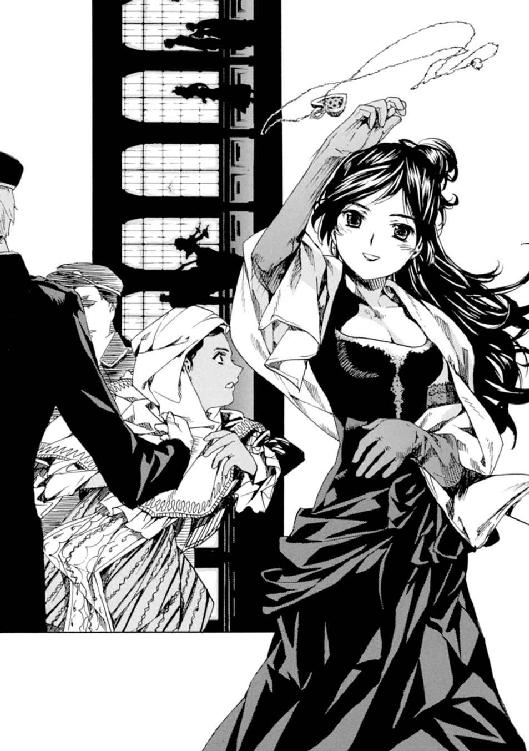
リィは警官の手をふりほどいて、腕を伸ばし、そのペンダントを受け取った。
「......あんたのお守り、返すわ」
言葉の通じないリィは、小首をかしげた。
片手を上げ、かすかに手を振るような動作をすると、再び警官に連行されていく。廊下の角を曲がり、消える。
ジュリィ・ガイルはしばらくそこに立ち尽くし、誰もいなくなった廊下をただみつめていた。
エピローグ 約束
１
「......というわけで、幽霊船〈QueenBerry 号〉は、再び海に沈んでいったんだ。過去の亡霊たちの復讐を終えて、暗い海の底に」
天気のよい朝。
聖マルグリット学園の校舎裏。咲き乱れる花壇を見渡せる場所にある、三段ほどの階段に座り、二人の子供が顔を寄せて話していた。
二人の目前には、色とりどりの花が咲き乱れて、太陽の光を浴びて眩しく輝いていた。甘い花の香りが鼻孔をくすぐる。花壇のあいだに作られた小さな通路を歩く、生徒たちの話し声が遠く聞こえてくる。だがこの階段は穴場らしく、寄り添って話している二人のほかには、人気はない。人の多い学園の中に、ぽっかり空いたエアポケットのような、心地よい場所だった。
そこにいる二人は、小柄で生真面目そうな東洋人の少年と、金髪のショートヘアを風に揺らす、スラリとした白人の少女だ。
少女──英国からの留学生、アブリル・ブラッドリーは、大きな瞳をまんまるに見開いて少年の話を聞いている。
久城一弥はその顔をみつめて、内心得意になっていた。
（よしよし。どうやら、アブリルをギャフンと言わせることに成功したぞ。それに、アブリルのネタはただの怪談だけど、こっちはなんといっても、本当の話だからな）
うんうんとうなずいて、心の中で勝利を確信する。
（ぼくの勝ちだ。いやっほぅ！）
「......ぷうぅぅぅぅ～っ！」
アブリルが吹き出した。
「あれっ？」
「やだもー、やだもー、久城くんたらー。きゃははははー！」
どうしたことか、アブリルは階段に座ったまま、長い手足をばたつかせて大爆笑していた。ほっそりとしなやかな足が、風にスカートがふわふわめくれるたびに眩しかった。
「なんで笑ってるんだよ？」
「だってー。そんなわけないじゃないー」
アブリルは笑いすぎて浮かんだ涙を手の甲でごしごし拭いた。
「久城くんたらー」
「ほんとなんだってば」
「もう～！ 言っとくけど、わたし、ぜったい信じないからね」
アブリルが一弥の顔の前で人差し指を立て、「めっ！」と言いながら左右に振った。一弥の目が、その人差し指を追っているうちに寄り目になってくる。
どういうことだろう......？ と悩んでいると、
「だって、あのサボり魔のヴィクトリカくんが、じつは女の子で、すっごい美人ちゃんで、しかも......名探偵？」
「......ほ、ほんとなんだってば！ なんなら、一緒に大図書館のいちばん上においでよ。ヴィクトリカがほんとにいるんだから！」
「べーだ！ その手には乗りませんよーだ」
アブリルは小憎たらしい表情をつくって、一弥に向かって舌を出してみせた。笑顔だけでなく、その顔もまたすごくかわいかった。一弥が思わず黙ると、
「それに、あんなすごい迷路階段のある大図書館を、いちばん上まで上がるなんて、ぜったいいやだよー。そんなことする人がいるなんて、信じられない」
「............」
ヴィクトリカにも言われたな......、と一弥が落ちこんでいると、アブリルはまた、幽霊船の話をしたときみたいに低い声になって、言った。
「それに、あの大図書館にも怪談があるんだよ。〈迷路階段のいちばん上には、金色の妖精が棲んでいる〉。............きゃああああ！」
「うわあああ！」
「きゃはははは、また引っかかったー。恐がって悲鳴上げたー。久城くんの恐がりー」
「......いや、いまのはアブリルの悲鳴にびっくりしたんだよ。恐がりじゃないってば。それに、その怪談は当たってるよ。妖精じゃなくて人間だけど、人間離れしてるから人間って言わなくてもいいかも。とにかくヴィクトリカが......」
「はいはい、もうそのほら吹きは、おーわーりー」
アブリルがパチンと指を鳴らした。
一弥は思わず、
「......すみません」
また、謝ってしまった。どうもこの国にきてから、同い年の女の子に、悪くないのに謝り続けている気がする。気のせいだろうか。
アブリルはニコニコして、
「だいたい、久城くんがどうして、そんな探偵役を思いついたのかはわからないけどさ。元ネタは知ってるんだよ。わたしだって、今朝の新聞、読んだもん」
「......今朝の新聞？」
「じゃじゃーん！......これでしょ？ もう、わかってるんだからねーだ」
一弥は、アブリルが得意になって差しだした今朝の新聞の一面に、目をこらした。
「......あ、あ、あぁぁぁ～！」
奇声を上げる一弥に、アブリルがギョッとした。
新聞の向こうから、元気でかわいらしいその顔を覗かせて、
「......どうかした、久城くん？」
「や、や、やられた」
「えっ？」
新聞の見出しには──
こう書かれていた。
〈またまたお手柄、ブロワ警部！
〝幽霊船QueenBerry 号事件〟見事解決！〉
──一弥は新聞を握りしめ、立ち上がった。
アブリルがキョトンとしてその顔を見上げている。
「ど、どうかしたの？ 久城くん」
「......ちょっと急用。あとでね、アブリル！」
びっくりしているアブリルを花壇に残し、一弥は走り出した。
そこに、花壇のあいだの細い道を、肩までのブルネットを揺らしながら小柄な女性が歩いてきた。大きな丸眼鏡に、小犬みたいな垂れ目の、童顔。担任のセシル先生だ。
一弥をみつけると、にっこりして、
「あら、ちょうどよかった。久城くん」
「あっ、先生......。ぼく、いまちょっと急いでて......」
「急いでるってことは、大図書館に行くんでしょ？」
「いや......。ん？ あ、そうです。......なんでわかったんですか？」
セシル先生はクスリと笑って、
「久城くんが急いで走るっていったら、そうに決まってるじゃない。はい、これ。ヴィクトリカさんに渡しておいてね」
いつものように、授業で使ったプリントを渡された。一弥はそれを受け取り、
「どうして......決まってるんだろう？」
不思議に思いながらも、また走り出した。
そこに、遅れて歩いてきたアブリルが、一弥の後ろ姿を見送りながらつぶやいた。
「なーんだ。ヴィクトリカくんに会いに行くんだ。ふーん」
セシル先生は微笑んで、うなずいた。
「そうなのよ。とっても仲がいいの」
「どんな男の子なの、先生？」
セシル先生は丸眼鏡の奥の瞳をぱちくりとした。
人差し指を振ってみせて、
「あら、アブリルさん。ヴィクトリカさんは、女の子よ」
「えええ～！」
アブリルは叫んだ。
「ほんとに、女の子だったんだ。そうだ。それに、あの名字......？ もしかしてさっきの話......」
ちょっと首をかしげてから、その首をぶんぶん振る。
「......まさかね。作り話に決まってるわ」
アブリルはそうつぶやいた。
春先の暖かい風が吹いて、二人の髪やスカートの裾をふわふわ揺らしていった。
空は青く澄んで、今日は一日、いい天気になりそうだ。
「そっか。ヴィクトリカって、女の子なんだ。ふーん......」
アブリルは拗ねたように口を尖らせている。
「なんだか、ちょっと妬けちゃうな」
また暖かい春の風が吹いた。
アブリルの短い金髪とスカートを揺らしていく。つられたように、花壇に咲き乱れる色とりどりの花も、吹いてきた風に小さくブルッと震えた。
２
「ヴィクトリカ────────!!」
──さて、こちらは聖マルグリット大図書館。
三百年以上の時を刻んだ、欧州でも指折りの歴史的建造物。
壁一面が巨大書棚と化した、吹き抜けの角筒形ホール。遥か上の天井に、荘厳な宗教画が描かれているのが、遠く見える。書棚と書棚のあいだを結ぶのは、細い木階段だけ。まるで巨大迷路のような不思議な建物。
その昔、国王と愛人が秘密の情事に耽るため、わざと迷路状に造ったという言い伝えのある、大図書館──。
その迷路階段を、一弥は今朝も、一人の少女の名を呼びながら駆け上がっていた。
「ヴィクトリカ──────！」
「......そんな大声で呼ばなくても、聞こえている」
──いちばん上の階。
白い細い煙が、天井に向かって上がっていく。ほどけたターバンのように、長い見事な金髪を床に垂らした少女が一人、パイプをくゆらしている。煙はそのパイプから、明るい光の射しこむ天窓に向かってまっすぐ上っている。
うっそうと緑の茂る植物園。その温室から半身投げ出すように床に座りこみ、放射線状に広げたたくさんの書物を、退屈そうに、しかしすごいスピードで読み飛ばしている。
壊れた人形が、立てかけられているような姿。
──ヴィクトリカだ。
そのヴィクトリカは、はーはー肩で息をしながら駆け上がってきた一弥をチラリと見ると、
「毎日、ご苦労なことだ」
「......あのねぇ」
「心臓に負担をかけ、下を見下ろしては青くなり、腿をとてもだるぅ～くしながら、この階段を駆け上がり、大声で叫ぶのが日課になるとは。君もよくよく、不思議な留学生活だな」
「人ごとみたいに言うなよ。だいたい、ぼくは君に会いにきてるんだよ？」
「それは知っている。単なる事実の指摘だ」
「うそだー。悪意があるよ、悪意がー」
「だったらなんだね？」
「うー......なんでもありません」
学園に戻ったヴィクトリカは、取り澄まして少しシニカルな彼女に戻っていた。この図書館でさんざん見慣れたいつもの彼女だ。
一弥は口では敵わないことを悟り、おとなしく引き下がることにした。
そして、アブリルから受け取った新聞をずいっと差しだしてみせた。
「それより、これを見てよ。ヴィクトリカ」
怒りに震えながらヴィクトリカの表情を窺うが、当のヴィクトリカは平気な顔だ。落ちついて新聞記事を流し読みすると、うなずいてみせる。
「なるほど」
「......これ、全部、ヴィクトリカの推理じゃないか。君の通報で犯人が捕まったんだし、その後の推理も、君が警察署で説明したこと、そのままだよ。あのときブロワ警部は、窓の外の小鳥を見てたんだよ？ いかにも、なにがなんだかさっぱりわからないって顔で、遠い目をしてた。ぼく、こういうのは......」
「うむ」
ヴィクトリカは、ふわぁ～、とあくびしながら、興味なさそうに、
「兄貴は、俗物だからな」
「そうだよ。だいたいあの警部は、俗物なんだよ。......ちょっと待ったヴィクトリカ、いまなんて言った？」
「兄貴は俗物だ、と言ったが？」
「ちょっと聞くけど、兄貴って誰？」
ヴィクトリカはキョトンとした。
パイプを口から離し、白い煙とともにその言葉を吐く。
「グレヴィール」
「......あ、兄貴なんだ？」
「ああ、そうだ」
「ふーん。......誰の？」
「わたしのだ」
「ふーん。..............................いや───────────!?」
一弥は叫んだ。
ヴィクトリカの、精巧な人形のように整って艶やかな、しかし小さすぎる姿をじっと凝視する。
それから、ハンサムで洒落者だが、ヘアスタイルがちゃんちゃらおかしい、ブロワ警部の姿を思い浮かべる。
......よくわからなかった。
頭を抱える。
ふと、床に投げ出したっきりになっていた、セシル先生から受け取ったプリントに目が吸い寄せられた。毎日これを受け取っては、ヴィクトリカに渡していたのだが、じっくり真面目に見たことはなかった。
ヴィクトリカが貴族なのは知っていた。態度や物腰ですぐにわかるし、確か名前が、ヴィクトリカ・ド・なんとかと......。
「うはー......」
プリントには、ヴィクトリカの名前がちゃんと書かれていた。
──〈ヴィクトリカ・ド・ブロワ〉と。
一弥は虚ろな目を上げて、彼女を見た。ヴィクトリカはパイプをくわえたまま、じっと一弥をみつめている。
「久城、君、大丈夫かね？ 顔がおかしいぞ」
「どうして君と警部の名字が、一緒なんだろう？」
「兄妹だからだろう？」
「いや──────────!!」
一弥は叫んだ。
しかし、そういえば......およそ、貴族であること以外に共通項のなさそうなヴィクトリカと警部ではあるが、一心にパイプをくゆらしたり、人の顔に煙を吹きかけて喜ぶところなどは、似ていなくもない、という気がする。それ以外は、容姿も、頭脳も、まるで似てはいないのだが......。
一弥は真顔になり、ヴィクトリカに聞いた。
「なんで？」
「......わたしのせいではない」
ヴィクトリカは不機嫌になり、ぷいっとそっぽを向いた。しかし、そっぽを向いても向いても、一弥が回りこんできて「なんで？」「なんで？」と連呼する。
根負けしたように、ヴィクトリカが、
「久城、君、ずっと知らなかったのか？」
「うん！」
「おかしなやつだな」
「だ、だ、だって、ヴィクトリカ。そのこと、ぼくに話した？」
ヴィクトリカは首をかしげた。
金髪がサラリ、と揺れる。絹のカーテンのように艶やかに輝いた。
やがて、あくびをしながら面倒くさそうに、
「......話してないが」
「じゃ、知らないよ！」
「うるさいなぁ、もう」
この話題は不愉快らしく、ヴィクトリカはとつぜん怒り、一弥を無視し始めた。興味なさそうに読んでいた書物に頭を突っこむようにして、わざとらしいほど読書に没頭し始める。
しかし、一弥があまりにも、「あー......」「うー」「うそだー............」などと呟き続けているので、根負けして顔を上げた。
「君、うるさいぞ」
「だってさー......」
「つまり、だな」
きわめて面倒くさそうにだが、説明し始める。
「彼は、グレヴィール・ド・ブロワ。ブロワ家の嫡男にして、ブロワ侯爵さまだ。俗物で女好きで迷警部だが、長男なのでね。父の正統な跡継ぎなのだよ。わたしたちは血の繫がった兄妹だが、公式な場で顔を合わせることは、まず、ないのだよ」
「......どうして？」
「それはだな」
ヴィクトリカは、顔をしかめた。
「わたしの母が、妾だったからだ。グレヴィールの母は、貴族の血が流れる正式な妻だ。つまりわたしたちは腹違いの兄妹なのだよ」
「でも、だからって......」
「それに、わたしの母は危険人物だった。職業は踊り子だが、狂人でもあり、先の大戦では物騒にも......いや、まぁ、それはいい」
母親のことを語るとき、ヴィクトリカは一瞬だけとても饒舌になった。しかしすぐに口をつぐんだ。
一弥は、この学園に蔓延る噂話のことを、ふと思い出した。ヴィクトリカについてもいくつかの怪談めいた噂があった。
貴族の妾腹の子であるとか。一族の中でなぜか恐れられており、屋敷においておきたくなくてこの学園に入れられたのだとか。母は有名な踊り子だが、発狂したとか。伝説の灰色狼の生まれ変わりだとか。
そして、あの〈QueenBerry 号〉事件の犯人、ジュリィ・ガイルが、サナトリウムで見たという、ヴィクトリカそっくりの、大人の美しい女性──。
ヴィクトリカはためらいがちにまた口を開いた。
「......つまりだね。わたしは高貴な血と、危険人物とのあいだに生まれたのだ。そしてわたし自身も、通常の子供とは様子がちがったため、ブロワ家の屋敷の奥深くに隔離されて育った。そしてこの学園に入れられてからは、ここからは出られないようになっているのだ」
「そんな......」
「先週、ここを出ることができたのは、兄貴の特別な〝外出許可〟が下りたからなのだよ。彼が同行することが条件だった。途中でコロッと忘れて、帰ってしまったがね。そういうわけで、わたしがつぎにこの学園の外に出られるのは、いつのことか、自分にもわからないのだよ」
「ヴィクトリカ......」
一弥は言葉を失った。
先週、外出したときのことを思い出した。慣れない様子だったヴィクトリカ。機関車や馬車から身を乗り出し、外の風景をじっとみつめていたヴィクトリカ。海から上がる朝日にみとれていたヴィクトリカ。
美しいものは嫌いじゃないのだ、と語る彼女に、また見にこようと言うと、彼女はなぜか、寂しそうに笑った......。
ヴィクトリカはぷかぷかパイプをくゆらしながら、冗談めかせて、
「わたしは囚われの姫なのだよ。どうだ、似合わないだろう？」
「............」
温室に沈黙が落ちた。
天窓から柔らかな春の日射しが落ちて、黙りこんだ二人を照らしていた。生い茂る植物が、天窓からのかすかな風に緑の葉を軽く揺らしていた。地上とちがい、ここはとても静かだった。二人が黙ればなんの音も聞こえなくなる。
ヴィクトリカが口を開いた。
「......そういうわけで、姫は退屈している」
「うん。......んっ？」
いやな予感がして、一弥は表情を固くした。
顔を上げると、ヴィクトリカが駄々をこねようとしているときの顔をしていた。どこがどう、と説明できないのだが、経験からわかるのだ。
「あー......退屈だ」
「ぼくちょっと、そろそろつぎの授業に......」
立ち上がろうとすると、ズボンの裾を引っ張られて、転んだ。
「イテ！」
「退屈だ。こら、退屈だと言ってるだろう」
「すみません......？」
明らかに自分が謝るところではないので、疑問符がついてしまう。
ヴィクトリカはじたばたと体を揺らして、
「姫が退屈だと言ってるだろうー。謎だ。謎をご所望だぞ」
「そんなこと言ったって、いまべつに、不思議なことなんてなにもないよ」
「だったら久城、君、ちょっと下界に降りて、不思議な事件を捜してこい」
「やだよ。ないし」
「なければ自ら起こしたまえ。なにかに巻きこまれて、死ぬほど困れ」
「無茶いうなってば」
ヴィクトリカはますますじたばたしている。よほど退屈しているのだろう。
「あー。つまらんー。退屈だ、退屈すぎて死ぬかもしれない。きっと死ぬだろう。おい、久城。君、そしたらただでさえ少ない友達が、一人減ってしまうぞ」
「......余計なこと言うなよ。怒るよ」
「退屈、だ............」
急に静かになった。
あれ？ と不思議に思ってヴィクトリカの顔を覗きこむと、こてん、とこちらに、小さな頭が倒れてきた。
「ちょ、ちょっとヴィクトリカ！ 死んだの？ 退屈で死んだの？ なにそれ。〝退屈〟なんて死因あるの、ちょっとー!?」
「くー......。すぴー......」
「............なんだ、眠ったのか。紛らわしいなぁ」
ヴィクトリカは、一弥の肩に小さな金色の頭を預けて眠ってしまっていた。さっきからあくびを連発していたし、きっと眠いのだろう。
週末の冒険のせいで、週のはじまりの朝、眠いなんてことは、よくあることだ。ヴィクトリカにはめずらしいことらしいけれど......。
一弥はつぎの授業に出るのをあきらめて、ヴィクトリカに肩を貸し続けていた。
こうして座っていると、確かに退屈だな、と思った。彼女が開いたままの書物を一冊、手に取ってみたけれど、難解なラテン語で書かれた哲学書で、一ページも読み下すことなく投げ出してしまった。
遠くで小鳥が鳴いた。
春だ。
いい季節だ。
膝を抱えて座っていた一弥は、小声で、眠っているヴィクトリカにささやいてみた。
「ねぇ、ヴィクトリカ。いつか、また、二人で......」
ちょっと照れる。
どうせ眠ってるんだし、と思い、続けてみる。
「外に出かけよう。そして、また海から上る朝日を見ようよ」
眠っていたはずのヴィクトリカが、ぱちりと緑色の瞳を開いた。
「......約束だぞ」
そう言うと、また、静かに瞳を閉じた。
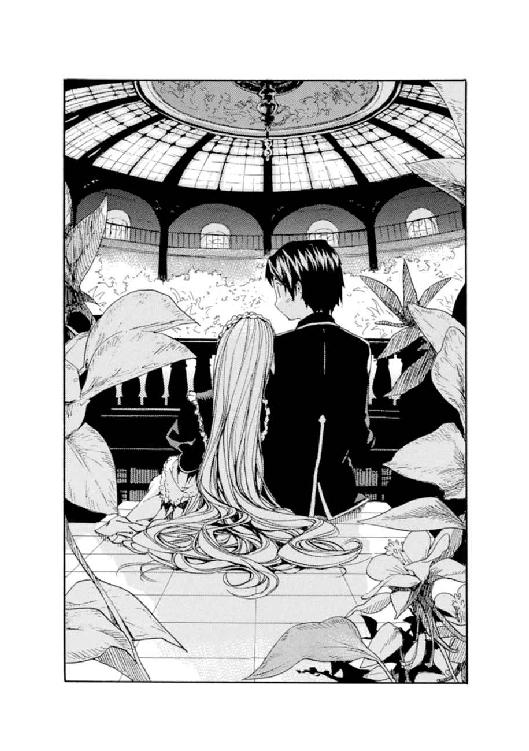
あとがき
みなさん、こんにちは。桜庭一樹です。
新作『GOSICK』をお送りします。よろしくです。
......ところでいま現在、というのは十一月の半ばぐらいですが、わたしは今年最大のプレッシャーの中にいます。事の起こりは、昨晩届いたメールです。たいへんお世話になっている担当のＫ藤さんからのものです。ちょっとした依頼なのですが、とはいえある意味、ぜんぜん、ちょっとしてはいないのです。
その依頼というのは、本屋さんの店頭配布用の宣伝素材に使う『GOSICK』の武田日向さんのイラストに、手書きでちょこっと、わたしから読者の方にメッセージを書き添える、というものでした。ああ、そんな宣伝をしていただけるとはかなりうれしいです。しかしそれはうれしいのですが、メールの最後に、
「GOSICKよろしくねん、桜庭一樹、みたいな感じで、
女子高生っぽい、はにゃ～んとした文字でお願いします。では！」
ものすごいプレッシャーです。書きました。半日かけて二十枚ぐらい、書いては丸めて捨て、書いては丸めて捨て......まるで昔の文豪のコントみたいでした。ザ・必死。
というわけでこのあとがきを書く五倍ぐらい時間と集中力をかけたあのはにゃ～んメッセージ、あっ、ホントに使われるのかな、いじいじ......もし店頭でみかけたら、これかよ、と、数秒じっとみつめてやってください。はにゃ～んが足りなかったらほんとにすみません。精進します。
とはいえ、女子高生だった頃からあまり、はにゃはにゃはしていなかった気がします。手書き文字も普通でした。ちょっと思い出してみます。......授業をサボって図書館で本をむさぼり読んでいるところと、部活（テニス部でした）の帰りに女の子ばかりでいつものパン屋さんに寄って、おしゃれや映画の話をしながら棒アイスを食べているところしか思い出せません。そういえば『あずまんが大王』を読んで、自分の高校生活はほぼこんなんだったなぁ、としみじみしたことが......。
あ、テニス部といえば、とっておきのネタがありました。わたしが『某高校硬式庭球部最後のブルマ隊』の一員であった、というお話です。でもおもしろすぎるのでこのあとがきの最後のほうに使うことにします。今回、あとがきが長いのです。最後まで読んでもらうためにバラエティ番組みたいな姑息な手を使ってみます。ひっかかってください。プリーズ。
はにゃネタで二ページも進んでしまいましたが、本来、先に言うべきことがありました。この新作『GOSICK』は、長編版となるこの本に先だって、ドラゴンマガジン十二月号に短編が掲載されています。龍皇杯参加作品です。結果はまだわかりません。というかまだ終わっていません。短編を読んで興味を持って下さった方が、こちらも手にとって下されば、ということでこの時期に合わせて出ているのですが、短編を読んでいない場合も、最初から楽しく読めるようになっています。というわけで、どうかよろしくお願いします。
ところでこの『GOSICK』というタイトルは、担当Ｋ藤さんがつけてくれました。この方は、ほかの作家さんのあとがきなどでよく「ブレインデッドＫ氏」と呼ばれている方です。ブレインデッドってなんだろう？ と、英語にかなり弱いわたしはずっと考えていました。脳死......？ でも使われ方からしてぜったいちがう。アイデアマンとか知恵袋とか、そういう感じの使われ方なので、ぜったいちがいます。確かにそういう方です。わたしもすごーく感謝しているッス。
そして、このＫ藤さん曰く、『GOSICK』には表の意味と裏の意味があり、裏のほうは、わたしはさっきも書いたけど英語に弱いので言われるまでぜんぜん気づきませんでしたが、要するに「桜庭さんの周り、変なヒト多いじゃん」ということでこれ、という一面もあるようです。変なヒトが多い......。いろいろ思い当たるのですが、同業者の友人の話など持ち出すと迷惑がかかるので（かかってもいいですが）、ここは一つ、大事な女友達を犠牲にして、変なヒトについての話を書こうかと思います（ブルマ隊の話はまだまだ書きません）。
【その一】
友達が狛犬を盗みました。
狛犬というのは神社に入るときに入り口の左右に飾ってある石でできたアレです。台車で盗みました。新宿にトルネード並みの大台風がきた夜のことでした。なにをやってるんでしょうか。
その人は小柄でクリッとした瞳が愛らしい、中学の数学教師です。実を言うとセシル先生のモデルにした人です。おそらくじゃなくてぜったい、生徒さんにも人気があると思います。はにゃ～ん人気が。しかしおかしな人です。生徒たちは知らないにちがいない（大人は狡猾な生き物なので、気心の知れた友人にしか変な面を見せないものだから）のです。
彼女が言うには、近所の神社が閉鎖されることになり、とても気に入っていた〝いい顔の狛犬〟が処分されるのをおそれて、車を持っている同僚に電話して狛犬泥棒の共犯を頼みました。そしたら断られました（←当たり前）。仕方なく、台車を借りてきて、台風の中、青いビニールシートがあちこちかけられている工事中の神社に入っていき、怪力でもって狛犬を持ち上げて台車に乗せました。雨の中、狛犬とみつめあうと、惹かれあう運命を感じました（と、彼女は言っています）。そしたら作業中のおじさんが出てきて、背後からなにか叫びました。手伝ってあげるよと言われたのだろうと彼女は思いましたが、そのときはもう、自分の手で狛犬を家まで連れて帰ってあげたいという気持ちでいっぱいだったので、振り切って、台車をゴロンゴロン押して走って甲州街道を逃げました。
その話を聞いてわたしが思ったのは、おじさんは「手伝ってあげるよ」と言った......わけないじゃん、「狛犬泥棒め、待て！」と叫んだんだよ。......彼女から話を聞いていた近所の沖縄料理屋さんで冷静にそう指摘したところ、彼女は笑っていましたが、翌日、学校のパソコンからうちに抗議のメールがきました。あくまで譲りません。先生って、頭、かたいよなぁ。
そういえばこの友人が、さっき、昼休みに学校から電話をかけてきました。わたしが文豪ごっこに明け暮れているときのことです。曰く......。
狛犬泥棒「ねぇねぇ、『キル・ビル』観に行かない？」
桜庭一樹「うわー、さすがにへんな映画に誘うねぇ」
狛犬泥棒「だってあんなへんな映画、あんた以外に、一緒に観に行く人を思いつかないもん。今週行こうよ」
桜庭一樹「......じつは、先週もう観た」
狛犬泥棒「いやーん、へんなひとー」
......電話は切れました。すっごい不満でした。そういえばこの狛犬の話には続きがあって、彼女が全身びしょ濡れになりながら家に帰り着き、狛犬を部屋に運び入れた途端、部屋で飼っているアメリカンショートヘアの雌（←名前はキムタク）が、ぐるぐると唸り声を上げ、狂ったように部屋中を駆け回って止まらなくなったのです。これは、狛犬になにか憑いているにちがいない、と焦った彼女は、狛犬をベランダに押し出しました。するとキムタクは元のキムタクに戻ったそうです。ホラーっぽい不思議なオチです。でも泥棒はいけないと思う。
【その二】
狛犬の話の後ではなにを書いてもインパクトが薄いですが......。
通っている空手道場の女の先輩が、鼻の穴を焼きました。
とても美人で強い先輩です。知的で大人っぽいタイプのＯＬさんで、全日本大会女子軽量級のチャンピオンです。ちなみにわたしは同じ大会でもっとずっと下のほうで負けました。それはいいです。この先輩は美人で強いのに意外な弱点があります。それは「鼻血が出やすい」ことです。彼女曰く、もともと鼻の粘膜が弱いらしくて、小学生のときからよく教室で鼻血を出していたそうです。大人になったいまも、運動して血行がよくなるといきなり真顔で鼻血を噴き出します。道場でも稽古中にときどきあり、みんなあわててティッシュの箱やらタオルやらモップやらを抱えて「先輩！」と走りよります。
もちろん試合中も出してしまうので、このたび、とある大事な試合の前に、先輩は近所の耳鼻科に行って相談したそうです。それで鼻の穴の中を薬品で焼いて、鼻血が出ないようにしました。試合当日、わたしたちセコンドについた後輩に、先輩は自信満々でこう宣言しました。
「今日は大丈夫。鼻の穴、焼いてきたから」
耳鼻科の先生曰く、一か月ぐらいは鼻血が出にくくなるそうです。わたしたちは顔を見合わせ、半信半疑ながら「......押～忍」と返事しました。
そして、試合が始まりました。順当に一本勝ちを決めて勝ち進む先輩。強い！ かっこいい!! わたしたちは最初の不安を忘れて夢中で応援していました。そして、準決勝戦が始まり、残り一分。接戦になり盛り上がる会場。と......。
ぶふ──────────
......出ちゃいました。やっぱり......。試合は中断し、「選手の鼻血が止まり次第、再開いたします......」という場内アナウンスが会場に響き渡りました。
うなだれるわたしたち。誰ともなく発した「......焼いたのにね」というつぶやきも、会場のざわめきにかき消されて......。
【その三】
読んでいる方の脳裏には、美人空手家がどくどく噴き出す鼻血と阿鼻叫喚の様子が展開されていると思いますが、つぎの話に行きます。こちらもまたきれいな友達ですが、少し強面で、こわくなければもっとモテると噂されている人です。職業は看護師で、口を開かなければ白衣の天使です。口を開くと容赦ない（とくに男子に）人です。
この人はある朝、顔を洗っていたら右手の小指が鼻の穴にツルリと入って奥に突き刺さり、どくどくと鼻血が止まらなくなって勤務している病院に遅刻しました。
......すみません、それだけです。鼻血のことを書いていたら急に彼女のことを思い出しました。
【その四】
同じ強面天使の話です。しゃれが通じないかもしれないと思うと、いろいろとツッコミにくい人です。でも意外と隙の多い人です。その隙の一つに、下着があります。
金色のブラジャーをしています。
女友達四人で、今夏、常夏の島プーケットに旅行に行きました。海！ フルーツ！ ムエタイ！ 新婚旅行のカップルが多く泊まっているなにやら豪華なホテルに泊まりました。五泊なので、女ばっかりだし、下着を洗ってバスルームに干している人もいました。
朝、わたしが起きて、バスルームに入ると、金色に輝くブラジャーが干してありました。
一度、目をそらしました。
もう一度、見ました。
ブラジャーはまだそこにありました。幻ではなく、確かに実体として、そこにありました。
わたしは頭を抱えました。黙って顔を洗って歯を磨いてバスルームを出ると、先に起きた二人もまた、顔を硬くしてそれぞれのベッドに座っていました。わたしたちはチラチラと互いの顔を見て、また目をそらし......一人が思いきって、口を開きました。
狛犬泥棒「わたしじゃないよ」
桜庭一樹「......わたしでもないってば」
もう一人「わたしもちがう！」
それから三人は、残りの一人......強面天使がまだすやすや眠っているベッドを、ゆっくりと振り返りました。起きているときはこわいですが、こうして眠っていると、黙っているから本当に天使のようです。
彼女が眠っているうちに、わたしたちは彼女のあだ名を『ザ・ゴールデンブラジャー』に決定しました。満場一致でした。狛犬泥棒は転げ回って喜んでいました。やがて起き出してきたザ・ゴールデンブラジャーは「なんでよ!? やだってば。いままで通り名前で呼んでよ！」と怒り狂い暴れ回って抗議しましたが、数の正義には勝てませんでした。
しかし、それにしても......。
普段はニコリともしないクールビューティーが、まさかあんな、ラスベガス人みたいな下着をつけていたなんて。あ、どこで買ったのか聞くの忘れた。ドンキ......？
人間には、下着いっちょうにならないと見えてこないものもあるのだ、と、とってつけたように教訓に走ってみました。ああビックリした。
......わたし、なんでこんな話を書き連ねてるんだっけ？ あ、あとがきのページ数がいつもよりベリー多かったのでした。でもだいぶ進んだぞ。友達がこの本を読みませんように。
そろそろ『某高校硬式庭球部最後のブルマ隊』の話を書きます。でもじつはそんなにおもしろい話じゃありません。わたしが入部したテニス部は、硬式は硬派、軟式は軟派、みたいなわかりやすい図式でした。硬派な硬式のほうに入ってしまったわたしたち新入部員にとってもっとも辛かったのは、「一年だけブルマ」という、十年以上続く〝伝統〟でした。
テニス部って、もっとかわいいウェアのイメージがあったのに......！
二年、三年の先輩は、スコートと呼ばれる白いふわふわミニスカートを穿いていました。さらにその下にレースたっぷりのアンダーウェアをつけるわけです。しかし一年だけ「上はＴシャツ、下はブルマ」です。Ｔシャツが長すぎると、ズボンを穿き忘れたうっかりさんみたいになってしまいます。ただでさえ辛いのに、詰襟の応援団員たちが、わたしたちが通るたびに「ブルマ隊だ！ ブルマ隊がきたぞ！ であえであえ～！」と囃し立てます。テニスラケットでがしがし殴りますが、笑っています。よっぽどおもしろかったのでしょう。
もっとも辛かったのは、そのまま学校の敷地を出て、外の道路などを「某高～！ ふぁいっ、おー！ ふぁいっ、おー！」などと元気よく掛け声をかけて走り回らなくてはならないことでした。当然、ブルマ隊の存在は学外でも少し知られていました。間抜けでした。
ようやく一年間が終わり、今年からスコート！ ふわふわレース！ と思ったとき、最後の悲劇がやってきました。
つぎの部長になった先輩が、とつぜん「もうこんな無意味な伝統はやめよう。今年からは一年もスコートを穿いていいよ」と言い出したのです。改革派というやつです。な、なんつー急展開......！ しかし、じゃあ、わたしたちの一年間はなんだったというのでしょうか。
というわけでブルマ隊はその年をもってとつぜん姿を消し、わたしたちは『最後のブルマ隊』（確か七人いたような）という十字架を背負ったまま、一年と一緒にスコートを買いに行ったのでした......。なんか地味だな。ほかの話と比べると。
あぁぁ、あとがき長いよ～。ここまで読んで下さってほんとにありがとです。
それではそろそろ、まとめに入ります～。
今回も、担当のＫ藤さん初め、関係各位のみなさんにたいへんお世話になりました。イラストの武田日向さん、にこにこ笑顔のやえかちゃんとはまたちがうタイプのヒロインを、かわいくて透明感のある絵に仕上げていただいて、たいへんありがとうございました。むすぅ～、としてるのに、ほっぺたがぷっくぷくで、小指とかでつつきたくなるヴィクトリカで、すげぇいい感じです。ありがとです。
そして、この本を読んで下さった読者のみなさんにも、ありがとうございました。楽しんで読んでいただけたなら幸いです。またお会いしましょう。それでは～！
桜庭一樹
ビーンズ文庫版あとがき
ビーンズ文庫の読者のみなさん、初めまして！
（それから、以前から読んでくださっているみなさん、ほんとうに、ほんとうにお久しぶりです。忘れずにこうして手にとってくださって、ありがとうございます）
作者の桜庭一樹ともうします。ぺこり。
「ＧＯＳＩＣＫ」シリーズは、二〇〇三年末に、同じ角川グループの富士見ミステリー文庫というレーベルでスタートしました。もともと、とある月刊誌で開催されていた、まだ無名の作家さん六人に短編小説を書かせて、読者投票で一位になったものが連載権を得る企画に参加した一編でしたが、数票の差で惜しくも落選してしまいました（二票とか三票差と聞いて、床を転げまわってウォーウォー嘆き悲しんだ記憶が......）。が、読者のみなさんの後押しもあって（い、命の恩人です。その節はありがとうございました......！）増刊号のほうで連載が始まりました。
シリーズ化して九冊出たところで、連載誌とレーベルがなくなり、二〇〇九年九月に角川文庫から新装版として再出発することになりました。
新装版のお話をいただいたとき、角川文庫にはさまざまな年齢層の読者さんがいらっしゃるので、と若い方向けの挿絵を外すことになったのですが、作者としてはなるほどと納得する一方で、挿絵の素晴らしさもこの作品の大切な要素の一つで、最初の一編（あの、落ちたやつ......あぁっ、また床を転げまわりたい......）からずっと、武田日向さんの描くヴィクトリカとともに歩いてきた、という思いもありました。「挿絵つきバージョンの復刻も、いつか」とお願いしたところ、ビーンズ文庫さんが、ではうちでどうでしょうと手を挙げてくださって、こうしていまみなさんの前にやってきた、というわけです。
と、いうわけで......。
もし、あなたのお気に召すことができたら、とってもうれしいです。どきどき。
この作品は、ヨーロッパの小国ソヴュールを舞台に、不思議な金髪の少女と、東洋の島国からやってきた留学生の少年の出逢いから始まります。エス、とついてるのは短編集であります。
時系列に沿うと、
『ＧＯＳＩＣＫｓ ─ゴシックエス・春来たる死神─』
『ＧＯＳＩＣＫ ─ゴシック─』
『ＧＯＳＩＣＫⅡ ─ゴシック・その罪は名もなき─』
『ＧＯＳＩＣＫⅢ ─ゴシック・青い薔薇の下で─』
『ＧＯＳＩＣＫⅣ ─ゴシック・愚者を代弁せよ─』
『ＧＯＳＩＣＫｓⅡ ─ゴシックエス・夏から遠ざかる列車─』
『ＧＯＳＩＣＫⅤ ─ゴシック・ベルゼブブの頭蓋─』
『ＧＯＳＩＣＫⅥ ─ゴシック・仮面舞踏会の夜─』
『ＧＯＳＩＣＫｓⅢ ─ゴシックエス・秋の花の思い出─』
『ＧＯＳＩＣＫⅦ ─ゴシック・薔薇色の人生─』
という順番です。
メディアミックスとして、二〇一一年一月からテレビ東京系列でアニメを放送中。ＤＶＤとブルーレイの予約も始まりました。また漫画版『ＧＯＳＩＣＫ』（天乃咲哉／富士見書房）が現在六巻まで発売中のほか、「月刊コンプエース」でゆるキャラ版の四コマ＆ショートストーリー『ＧＯＳＩＣＫ Ｗ』（守姫武士）と、応援四コマ『ヴィクトリカさん』（あぼしまこ）もスタートしました。よろしかったら、あわせてお楽しみいただけたらと思います。
また、現代の日本を舞台に、少女たちを主人公にしたわたしの作品『赤×ピンク』『推定少女』『砂糖菓子の弾丸は撃ちぬけない』『少女七竈と七人の可愛そうな大人』が、角川文庫の〈Sakuraba Kazuki Collection〉というの（個人レーベルみたいなの。かわいい格子柄が目印じゃよ？）から刊行されています。
それから、それからっ、『ＧＯＳＩＣＫ』の挿絵担当、武田日向さんの漫画『やえかのカルテ』『異国迷路のクロワーゼ』『狐とアトリ』（富士見書房）もあります。もともと担当さんと、やえかの美麗な絵を見ておーっとなって、さっそく『ＧＯＳＩＣＫ』の挿絵をお願いしに行ったのです。
ふぅ、ふぅ。歴史が長いためか、告知することが思いのほかたくさんありました......。以上であります！ ここまでしっかり読んでくださってありがとう。
流行があって、めまぐるしくいろんなことが変わる中、長い時をぶじに生き延びた作品なのですから、こうなるまでにたくさんの方々にお世話になりました。とくに富士見ミステリー文庫の担当で、シリーズを立ち上げてプロデューサーのように一緒に作りあげてくれた工藤大丈さん、角川文庫での新装版に、アニメのプロジェクトにと八面六臂の活躍をみせる金子亜規子さん、それからビーンズ文庫でこれからお世話になる坂内茉穂さん（女子高生のときにアンコを２・７キロ食べました）。ほかにもたくさん、たくさんの方々に助けていただき、ここまでくることができました。
なによりも、読者のみなさん！ これから読んでいただく方にも、これまでずっと読んでくださっていた方々にも、ほんとうにありがとうございます！
あなたに、もしこのシリーズを気に入っていただけたら、作者も登場人物もとても光栄に思います。
では、では。またあなたとお会いできますように......!!
二〇一一年二月
桜庭一樹
あとがきは富士見ミステリー文庫から再収録したもので、雑誌掲載などの情報については全て二〇〇三年当時のものです。
GOSICK
─ゴシック─
桜庭一樹
平成24年1月1日 発行
発行者 新名 新
発行所 株式会社角川書店
〒102-8078 東京都千代田区富士見2-13-3
http://www.kadokawa.co.jp/
(C) Kazuki SAKURABA 2003
本電子書籍は下記にもとづいて制作しました
角川ビーンズ文庫『GOSICK ─ゴシック─』平成23年4月1日初版発行
平成23年9月10日5版発行